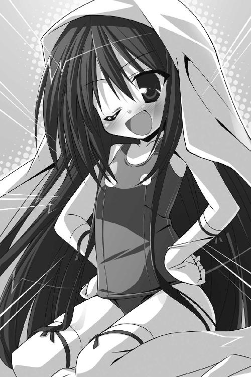

| Ｈ＋Ｐ8 －ひめぱら－<Ｈ＋Ｐ> (富士見ファンタジア文庫) | |
| 風見 周 & ひなた 睦月 | |
| 富士見書房 (2011) | |
Ｈ＋Ｐ
─ひめぱら─
風見 周

富士見ファンタジア文庫
本作品の全部または一部を無断で複製、転載、配信、送信したり、ホームページ上に転載することを禁止します。また、本作品の内容を無断で改変、改ざん等を行うことも禁止します。
本作品購入時にご承諾いただいた規約により、有償・無償にかかわらず本作品を第三者に譲渡することはできません。
本作品を示すサムネイルなどのイメージ画像は、再ダウンロード時に予告なく変更される場合があります。
本作品は縦書きでレイアウトされています。
また、ご覧になるリーディングシステムにより、表示の差が認められることがあります。
口絵・本文イラスト ひなた睦月
目 次
プロローグ
もしも、そのシーンが間違い探しであったなら──神来恭太郎は思う。
間違ってる部分が、山ほどあるだろうな......。
恭太郎はカルタギア帝国に拉致され、後宮に入れられてしまった。
にもかかわらず、トレクワーズ王国のお姫さま──ユフィナ、レイシア、エリスの三人が彼の目の前にいるのだ。
敵国の後宮でユフィナに出逢うなんて、それだけでおかしい。
しかも──。
王女さまたちはセクシーなメイド服に身を包んでいた。
フリルやリボンがふんだんにあしらわれたチューブトップ形のメイド服。肩や鎖骨、胸元や可愛らしいおへそが盛大に露出してる。
ユフィナやレイシアは巨乳だから、深すぎる胸の谷間を存分に眺めることができた。
スカート丈も異様に短い。ニーソックスに包まれたエリスの美脚が惜しげもなく晒されている。
彼女たち《トレクワーズの五美姫》は、タイプが違うけれど三人とも絶世の美少女だ。セクシーなメイド服がとても似合っていた。彼女たちに身の回りの世話をされたなら、間違いなく引きこもりになってしまうに違いない。
さらに加えて──。
ただでさえセクシーな格好なのに、王女さまたちはノーパン＆ノーブラだった。
ユフィナの大きな胸のてっぺん。メイド服の布地越しに、ポツンとなにかが浮いてるのがわかる。
レイシアはおしりもちょっぴり大きめだ。ただ立っているだけなのにスカートの裾からヒップのまろやかな丸みがちょっぴり顔を覗かせていた。
エリスはいつも大またで歩くから、スカートが翻ってイケナイ部分が見えてしまいそうである。
もう一つオマケに──。
夜。カルタギアの後宮。廊下。
恭太郎の眼前で、セクシーメイド姿のお姫さまたちは並んで石壁に手を突いた。
おしりを突き出すようなポーズをとる。
そして──ぴらりんっ。
同時にミニスカートをまくり上げたのだ。
彼女たちは、ぱんつをはいていない。
すなわち、スカートをまくるということは、可愛らしいおしりが丸見えになっちゃうんだよ!!
丸みを帯びた、三つの可愛いおしりが目の前に並ぶ。
白くて、スベスベで、ムチムチで、ぷりんっと揺れていて......飛びついて頰ずりしたくなるような魅惑のフォルムだった。瑞々しい取れたての桃みたいだ。恭太郎が尻フェチだったら、その場でむしゃぶりついてしまったかもしれない。
壁に片手を突き、もう片方の手でスカートをめくりあげながら──王女さまは恭太郎の方を振り返った。
三人とも羞恥心のあまり、耳までピンクに染まってる。
「ねえ、恭太郎......。もう我慢できないの......」
姉妹を代表するみたいに、ユフィナが小声で囁いた。
「今ここで、お世継ぎつくりましょ...... 」
」
続けて、レイシアとエリスもえっちな発言をする。
「もう我慢できません 私たちも順番に入れてくださいまし......」
「私が一番じゃなきゃ許しませんわよっ！ さあ、早くシテくださいまし」
どうだろう？ 明らかに間違っていると思わないだろうか？
恭太郎がここで言う『間違い』とは、『常識的に考えてあり得ない』という意味であると同時に、『男として間違いが起こっても不思議ではない』という意味でもある。
どうして、こんな間違いだらけの状態に陥っているのか？
それを知るためには、少しばかり時間を遡る必要があるだろう──。
第一章 恭太郎救出大作戦、開始！
女性だけが魔法を使えることから《魔女の大陸》とも呼ばれているウィッチェリア大陸において、カルタギア帝国は最大の国力を誇っている。国土の広さも、人口も、経済力も、軍事力も。なにもかもがナンバーワンだ。
帝国の揺るぎない栄華を象徴するかのように。
早朝。カルタギア帝国の後宮。ベッドの上。
黒いシーツにくるまって眠るたった一人の王仕さま──神来恭太郎の周囲にあるものは、全てが最高級品ばかりであった。
彼が眠る天蓋付きの漆黒のベッド、部屋の中央に置かれた応接セットなどは、上質な家具を作ることで有名な北方の小国アゼルマで作られた年代物のアンティーク。
ソファの下に敷かれている毛足の長い黒い絨毯は、めったに捕獲されない魔獣オルトロスの毛皮だ。大変貴重なもので、一説には絨毯一枚で小さな国ならば丸ごと買えるほどだと言われている。
恭太郎が身に着けている黒いパジャマも、カラダを包んでいるシーツも、当然ながら高価な逸品だ。《ベルベットドラゴン》の異名を持つ珍しい竜種が吐き出す繊維状のブレスを縒り合わせた糸によって織られている。高貴な光沢を持った見事な風合い、そしてなにより肌触りの良さから、各国の女王のマントを作るために使用されることが多かった。パジャマやシーツに使われるなど、他国ではあり得ないことだろう。
「うぅ～～～ん......」
寝返りを打った恭太郎は、気持ちよさそうにマクラに頰ずりをした。
小学生の頃は、親代わりでもあった厳しすぎる実姉──桜子の命令で樹上やら洞穴で野宿することも多かった。
今でも姉とのやり取りが脳裏にこびりついている。
「恭太郎、修行をするのです！ 山籠もりをなさい！」
「いやいや、待ってください！ この山にはクマが出るらしいですよ!?」
「だからこそ、です。クマの一頭や二頭を仕留められないで、没落した神来流剣術が復興できると思っているのですか？」
「そりゃ、神来流が栄えるに越したことはないですけど......木刀一本でクマに勝つなんてご先祖さまでも無理ですよ！」
「言い訳は許しません。山のヌシと呼ばれている大ヒグマに勝利するまでは、我が家の敷居をまたがせませんよ！」
「うわ、ハードルを上げられた！ 勘弁してくださいよ、姉上～～～っ！」
そんな感じで、幾度も山籠もりをさせられた恭太郎にとって、カルタギア帝国の後宮のベッドは天国にも思える。
トレクワーズ王国の後宮の寝具も素晴らしかったけれど......寝心地の良さではカルタギアに軍配が上がるだろう。
（うぅ～ん、こんなにいいベッドで寝ていたら、人間がダメになっちゃいそうだ。でも、本当に素晴らしい寝心地だよな......）
本来ならば夜明けの頃に起きて、木刀の素振りをしたいところだ。しかし、昨夜は遅かったせいもあって目が開かない。
恭太郎はカルタギア帝国によって拉致された。
最初のうちは監視が厳しく監禁状態だったのだが、今は後宮内ならば多少の自由が与えられている。
待遇が良くなっているので過ごしやすくはなっているとはいえ......ユフィナたちを心配させたくない。いつまでもこの国にいるわけにもいかないのだ。
脱出する前に、まずは《黒い錠剤》を探し出そうと努力をしていた。
カリギュラの魔法によって《トレクワーズの五美姫》は幼い子どもに変えられてしまった。その魔法を解くための呪文が掛けられたクスリ──小瓶に入った黒い錠剤をアスピアが持っているのだ。
アスピアの部屋に忍び込む方法はないものかと城内を探っていたら、眠るのが遅くなってしまったのである。
強い眠気と寝具の心地よさに負けて、サムライ少年の恭太郎にしては珍しく、自分を甘やかすことにした。
「うぅ～～～ん......あと少しだけ寝ていよう......」
寝ぼけたまま、何気なくシーツに手を滑らせてみた。
シーツの中、絹よりも艶やかな触り心地の毛束のようなものが指に触れる。感触が心地よくて指先に絡めてしまった。
艶やかな毛束に沿って手を滑らせていくと、シーツとは違う手触りの布地に触れた。
クッションにしては触り心地が良すぎる。軽く触れるだけで指先が沈み込むほどに柔らかいのに、不思議な張りもあわせ持っていた。
これはなんだろう？ 感触から言って、シーツじゃないことは確かだ。抱き枕かなにかだろうか？
滑らかな布地＆プニプニとした弾力を楽しむように撫で回してしまう。
本当になんなんだ、これは......？ ついつい撫で回しちゃったけど......。
寝ぼけた頭で、ぼんやりと考えていたら。
「はうぅぅ...... そんなに撫で回すなんて恥ずかしいのだ にゃんっ」
甘えたような声が聞こえてくる。
さーっと血の気が引いた。冷水を浴びせられたみたいに眠気がすっ飛ぶ。
くるまっている黒いシーツが、こんもりと不自然に膨らんでいた。
恭太郎はシーツの中にいる、柔らかななにかをいじくり回していたのだ。
お化け屋敷のドアを開くみたいな慎重さでシーツを持ち上げた恭太郎は、さらに血の気が引くのを感じた。
シーツに潜んでいたのは、幽霊なんかよりも恐ろしい存在だったのだ！
「おなかや背中を撫でられてるだけなのに......なんだか心地よいのだ もっと触って欲しくなるぞ」
シーツの中にいたのは──カーリー!?
カーリーというのは、カルタギア帝国の女帝カリギュラの愛称だ。なぜか女帝に気に入られてしまった恭太郎は、ニックネームで呼ぶことを許可されているのである。
って、呼び方なんて、今はどうでもいい！
どうしてカルタギア帝国の女帝が俺のベッドに潜り込んでるんだ!?
カリギュラは諸外国からは暴虐の限りを尽くす恐ろしい女帝と思われている。
だが、本当は九歳になったばかりの幼い少女なのだ。
クリクリした黒瞳も、ぷっくりと膨らんだ可愛らしいほっぺも、細っこい手足も、つるぺたーんとしたカラダも──ルックスは完全に幼女のそれである。
幼女と同衾してるという事実だけで、逮捕されかねないのだが。
「な、なんなんだよ、その格好は!?」
恭太郎は思わず叫んでしまった。
カリギュラは紺色のスクール水着に身を包んでいたのだ！
「どうして、スク水なんか着てるんだ!?」
カラダを起こしたカリギュラは、ベッドの上にちょこんとアヒル座り。シーツがマントみたいに頭の上から掛かっている。
偉そうにちょっぴり胸を張って。
「男というのは、こーゆーのが好きなんだろう？」
「それじゃ、どうしてニーソやら手袋を着けてるんだ!?」
腕くらいまでの長さがある手袋を着けていたのだ。露出度は下がっているはずなのに、フェチ度がアップしてる。
カリギュラは、さらに大きく胸を張って。
「男というのは、こーゆーのが好きなんだろう？」
「それじゃ......それじゃどうして、スク水に穴が開いてるんだよ～～～っ!?」
ぺったんこな胸元を包むスク水──その頂点辺りが直径三センチほどの大きさで、丸く切り取られていたのだ。
白い肌と淡いピンク色のなにかが──見てません！
天地神明に誓って、俺はなにも見てませんーっ!!
「妾は、ちゃーんと調べたのだ」
後ろに反っくり返ってしまいそうなくらいに大きく胸を張った。

「男というのは、こーゆーのが好きなんだろうっ？」
一部の特殊な嗜好の方々にとっては堪らないのかもしれないけど！ 俺は断じて好きじゃないよ！
全力で否定しつつも、恭太郎の心臓は一六ビートを刻んでしまう。
「穴が開いているのは胸だけではないのだぞ。合計三か所に穴を開けるよう、指南書には書かれていたのだ」
カリギュラはベッドの上で膝立ちをしようとした。
「ストーップ！ 見せなくてもいいよ！」
胸だけでなく、スク水のおまたの部分も小さく切り取られていたのだ。
そんなところに穴が開いてるなんて、アウトすぎるだろ！ イケナイ部分が盛大に見えちゃうじゃないかっ！
ほんの一瞬だけ白い肌を見たけれど、凝視なんてしていない。これぐらいならセーフだろう。セーフであって欲しい。
「どうだ、きょーたろ。興奮したか？」
「こ、興奮なんかしないって！ ちっちゃい女の子にムラムラしちゃうようなダメ人間じゃないんだよ、俺は！」
「ふふふん、知っているぞ。その発言は『イヤよイヤよも好きのうち』というものだな。その証拠に......」
ちっこい手が恭太郎のカラダを這うように動いて──もにもにっ。
「ぎゃーっ！ どこを触ってるんだ!?」
「凄まじい大きさになっているのだ。専門用語で言うところの『まあ、ご立派』という状態だなっ」
「違うって！ それは朝の生理現象なんだ！ 男なら誰でもそうなっちゃうんだよ！」
というか、えっちな知識が全くなかったはずのカリギュラが、どうしてこんなにオマセ発言を連発してるんだ？
そこで恭太郎は、デジャヴュめいたものを感じた。
ある朝、目を覚ましたら幼女がベッドに潜り込んでいて、股間をまさぐられてしまう──過去に同じような迫り方をされたことがあった気がする。
（正確に言うと、そのときは幼女じゃなくて『幼い女の子の見た目を持つ、八〇〇歳の後宮のヌシ』だったんだけどな......）
恭太郎がトレクワーズのお姫さまたちによって召喚されてすぐの頃、ピコル師匠によって筆降ろしされそうになったことがあるのだ。
「ひょっとして、ピコル師匠の本を読んだのか？」
「うむ。その通り。妾はきょーたろと世継ぎをつくりたい。そのためなら勉強も厭わぬのだ。妾の勤勉さを後世まで語り継ぐがいい」
ベッドサイドに手を伸ばしたカリギュラは、本の表紙を見せてくれた。
タイトルは『後宮生活を楽しくしちゃう裏技！ ベスト一〇〇！』。
著者名は──ピコル。
トレクワーズ王国の重臣にして、後宮の教育係であるピコル師匠が書いた書籍だ。師匠はえっちな指南書を何冊も出版している。各国の後宮で読まれているベストセラーだそうだ。
ピコル師匠......。カルタギア帝国でも、俺を苦しめるんですね......。
「ちなみに、妾が実戦したのは《朝勃て！ 起き抜けdeムラムラ大作戦！》というものなのだ。意味はよくわからぬが、なんだかすごそうだなっ」
《朝勃て！》ってなんだよ。相変わらず師匠のネーミングセンスはひどすぎる。
指南書をベッドサイドに戻したカリギュラは、じーっと恭太郎を見つめた。
「こら、きょーたろめっ！」
照れ隠しだろうか？ 恭太郎を怒鳴りつける。
言葉とは裏腹に──もぎゅっ
寄り添うように寝そべり、カリギュラが抱きついてきた。
くっついてくれたおかげでスク水の穴を見ないで済むが......今度はカラダの感触が恭太郎を責め苛んだ。
ちっちゃくても、やっぱり女の子なんだな。すごく柔らかい。それに、なんだか甘いようないい匂いがする。
お風呂が大好きになったおかげで黒髪からはフローラルな香りが漂っていた。
プニプニしたボディの柔らかさとシャンプーの香り。そして、カリギュラの体温を感じて、恭太郎の鼓動はさらに速まってしまう。
抱きついたまま、カリギュラはフンと鼻を鳴らした。
「どの指南書を読んでも、お世継ぎづくりは『楽しくて気持ちいい』と書かれていたのだが......妾はこれまで具体的に、なにがどう気持ちいいのかさっぱり理解できないのだ」
恭太郎は恐るべき事実に思い至ってしまった。
寝ぼけてまさぐってしまったものは......カリギュラのカラダだったのか!?
「だが、きょーたろが、妾のカラダを撫でてくれたとき......くすぐったかったけど、なんだかゾクゾクして......ちょっぴり気持ちよかった。きょーたろの指は魔法みたいなのだ」
どわああああ、やっぱり！
寝ぼけてたとは言え、九歳の幼女のカラダに触れてしまうなんて逮捕されてもおかしくない。いや、市中引き回しの上、磔、獄門の刑に処されても文句は言えない所行だ。俺はなんてことをしでかしたんだ～～～っ!!
苦悶する恭太郎に気付かず、ぎゅぎゅーっと抱きついてくる。
「きょーたろ。貴様にカルタギア帝国の女帝として命ずる」
猫が甘えるみたいに首の辺りに黒髪を擦りつけつつ、女帝は囁いた。
「もっともっと触るのだ。妾を気持ちよくさせるがよいぞ」
「そんなことできるワケないだろ！ 勘弁してくれ～～～っ!!」
カルタギア帝国の後宮に恭太郎の絶叫が響き渡るのであった──。
×××
「うにゅ～～～ん......」
半刻後。後宮の各階に設けられている女帝の居室。
女官たちによってスク水から黒いドレスに着替えをされているカリギュラが、奇妙な声を漏らした。
「なかなかうまくゆかぬのだ......」
「いかがなさいましたか、カリギュラさま？」
銀髪をショートカットにしているクールな美女が声を掛ける。
四将軍の一人であり、参謀役。アスピア・バリファックスだ。
フリルに飾られた黒いドレスに腕を通しつつ、女帝は深いため息を吐いた。
「きょーたろは、妾のカラダを触ろうとしなかったのだ。寝ぼけているときはいじくりまくった癖にっ」
「い、いじくりまくったのですか......」
アスピアの白い肌が微かに朱に染まった。
さまざまな奸計によって敵を葬り去ることから《氷の策士》とも呼ばれる将軍であるが、えっちな知識に関しては乏しいのだ。
いや彼女だけではない。カルタギア軍に属するものは、誰もがウブなのである。
カリギュラは傍らを見やる。テーブルの上にピコルの書いた指南書が置かれていた。
「その本によれば、『起き抜けにベッドに忍び込む』というのは王仕の喜ぶ行動の一つだそうだ。場合によっては、世継ぎづくりに突入することもあるらしいのだが......」
「神来恭太郎はカリギュラさまに手出しをしなかったのですね」
「うむ。書かれている通りにしているのに、なにがいけないというのだ？」
指南書の表紙を睨み付け、カリギュラは鼻を鳴らした。
「よもや、その本が間違っているのではあるまいな？」
帯には『大丈夫。ピコル師匠の指南書だよ！』という言葉と共に、白いローブを纏った銀髪の少女──にしか見えない著者がピースサインをしていた。
「そやつはトレクワーズ王国に仕える者であろう？ トレクワーズの者の知識など、たかが知れているのだっ。見たところ妾と歳も違わぬようだし」
「お言葉ながら......著者であるピコルは八〇〇歳を超えているそうです」
「なぬっ!? 八〇〇歳!? そやつは人間か!?」
「後宮の教育係として、また房中術理論の学者としても高名な人物です。七〇〇年ほど前に『楽しみながらお世継ぎづくりをすべきだ。その方が生まれてくるお世継ぎの魔力もより高まる』という理論を提唱し、後宮のあり方を変えたとも言われています」
ピコルの考えは、大陸中の後宮で取り入れられた。その結果、各国の為政者が持つ魔力は、千年前と比べると倍以上になったとの研究結果もある。
「なるほど。本が間違っているわけではないのだな。では、妾のやり方に誤りがあるのだろうか......。うにゅ～～～ん......。教えを乞うてみたいのだ」
カリギュラの着替えが終わった。
黒いドレスに身を包み、長い黒髪の上にはちょこんと小さなティアラが載っている。
弓手には女帝の証でもある錫杖。馬手には黒いトビカピバラのぬいぐるみ。
「アスピアよ......。妾は誰だ？」
クールな将軍は慇懃に礼をする。
「カルタギア帝国女帝、カリギュラ・フィンランディア・カルタギアさまにあらせられます」
「そう。妾はカルタギア帝国の女帝なのだ」
唇の端を曲げ、九歳とは思えないような悪女めいた笑みを浮かべる。
「妾の教育係は、大陸で最も高名な人物であるべきだとは思わぬか......？」
×××
トレクワーズ王国全体を覆っている《大結界》は、女王の魔力によって生み出されたバリアのようなものだ。物理的かつ魔術的に、外敵の侵入を拒んでいる。
物理的な攻撃──例えば、遠方からの投石攻撃などを受けても弾き返すことができる。
加えて、敵対する女神の祝福を受けた者を退ける効果もあった。敵兵は見えない力によって結界外へと追いやられてしまうのだ。
この《大結界》により、トレクワーズ王国は軍隊を持たずに、国を守っているのである。
しかしながら。
国家の繁栄のためには、外敵の侵入は防ぎつつも、活発な通商を妨げない必要がある。人の行き来が途絶えては経済が停滞してしまうからだ。友好国の商人は比較的容易に入国させる必要があった。
そのために設けられているのが《関所》である。
《大結界》を作り出している女王の意思によって、《大結界》にはいくつかのトンネルが開けられていた。
トンネルに移動式の巨大な鉄扉と物見櫓を設置し、出入国する者をチェックしているのだ。移動式になっているのは《大結界》の大きさが、女王の魔力の大きさによって変わるためである。
移動できるといっても、櫓は巨石を組んで作られており、何千頭という馬を用意して引っ張らなければ動かせないのであるが......。
とまれ、それらの仕組みによって、《大結界》と関所によってトレクワーズ王国は防衛と通商を両立させているのである。そんな《大結界》の関所の一つ。
トレクワーズ王国の東側。カルタギア帝国との国境に位置するアントワープの関所。
「どぅふふふふふ......」
物見櫓の頂上に、奇妙な笑い声が響いた。
アントワープの関所に衛士として配属になったばかりの一四歳の少女、ケルミーが櫓の上に設置された魔砲の砲座に座ってニヤニヤしていた。
「やっぱり格好いいなぁ......どぅふふふふ」
彼女の手の中にあるのは雑誌の切り抜きだ。
トレクワーズ王国にいた唯一の王仕さま、神来恭太郎の姿が写っている。
王仕さまの写真が出回ることなんて、普通はあり得ない。
しかし、恭太郎だけは別だった。王仕さまたちをさらわれたトレクワーズ王国に救世主として召喚され──そのうえ、魔法を使えることがわかったのだ。
幾度も新聞や雑誌などで特集が組まれ、受像器でもニュースが流された。
直接の取材がＯＫされたことは一度もないけれど、高まった国民の関心に応えるために、王宮は恭太郎の写真を提供してる。
そのために、雑誌などにはポートレートが掲載されているのだ。
『超絶美形！』と言うわけではないけれど、黒髪の凛々しい少年である。なによりも、王女さまを助けるために魔法を使って幾度も戦ったというエピソードが格好いい！
トレクワーズの少女たちにとって、恭太郎は憧れの存在なのだった。秘密裏にファンクラブが組織されている。ケルミーは会員番号三四六七番だ。
「あーあ、わたしも後宮の女官になれたら良かったのになぁ......」
後宮への配属を希望したけれど、願いは叶わなかった。
関所の衛士だって立派な職業だ。それなりに魔力が高くなければ、雇ってもらうことができない。でもでもっ。
「後宮の女官になれたら、わたしにも恭太郎さまとお近づきになれるチャンスがあったかもしれないのに......。カルタギア帝国から救出された恭太郎さまに献身的に尽くしちゃったりして......それが元で見初められちゃったりして......」
恭太郎がカルタギア帝国に奪われたという事件は、トレクワーズの国民なら誰でも知っている大事件だ。
だが、すぐさま《トレクワーズの五美姫》によって『王仕さまは必ず取り戻す』という声明が発表された。
国民に不安が広がってはいるものの、一応の平穏を保っている。《トレクワーズの五美姫》は信頼されているのだ。
「恭太郎さまに見初められて......つまみ食い的なことをされちゃったりして！」
恭太郎の身を案じつつも、妄想は止まらない。
『ああ、おやめください、恭太郎さま。わたしは女官でございます』
『ケルミー、きみが好きなんだ。この想いは止められないよ！』
がばっ！──後宮のベッドに押し倒されちゃったりして！
「なんちゃって、なんちゃってー！ どぅふふふふふふふー」
手足をバタバタさせつつ、ニヤニヤ笑いをしまくりのケルミー。
そんな彼女の耳に、地響きのような音が聞こえてきた。
物見櫓の上から、音のする方を眺めて──衛士の少女は「どひゃー！」と悲鳴を上げる。
関所の西側に広がるアントワープ平原を、一匹の飛竜が飛んでいた。
竜の背に、白いドレスの美少女が乗っている。
少女の手には、業火を放つ巨大な剣。
「あれは、ユフィナさま!?」
第一王女のユフィナが、燃えさかる剣を構えて関所に突っ込んできたのだ。
飛竜に乗っている烈火の王女は、大きな声で叫んでる。
「こら～～～～～～～～っ!!」
思わず涙目になって、ケルミーは謝った。
「うわーん！ ごめんなさいごめんなさい！ 恭太郎さまと結ばれたいなんて、大それたことを考えてごめんなさーいっ!!」
だが、ユフィナは止まらなかった。
大剣の切っ先を中心として、魔法陣が展開する。
直後、炎の奔流が生まれ、物見櫓に直撃した。
「きゃああああああっ!?」
地震が起こったみたいに櫓が揺れる。ケルミーは魔砲の砲塔にしがみついて震えていることしかできなかった。
ユフィナは我を忘れてしまったかのように、真剣な表情で怒鳴りまくってる。
「さっさと門を開けなさーい！ いま助けに行くわよ、恭太郎～～～～っ!!」
それから数時間後。トレクワーズ王国。王宮。会議室。
中央に純白の大理石から掘り出された円卓が設えられており、壁には王家の紋章が掛けられた会議室。
室内にある調度品は、なにもかもが白い。処女雪に覆われたかのように全てが一点の曇りもない純白に染まっていた。
もしも、トレクワーズに住まう詩人がこの部屋を見たら『女神たちが人類への審判を下すための相談をする場所だ』などと形容するかもしれない。
だが、王宮の会議室を使っているのは、女神さまではなかった。
「ユフィナお姉さまっ！ 反省してくださいねっ！」
第二王女のレイシアが、怒鳴りつけてくる。
しゅーん──そんな擬音をつけたくなるような、意気消沈した表情でユフィナは円卓に突っ伏していた。
「反省してるってば......本当にごめんね......。女王陛下にも、すっごく叱られたんだからレイシアまで怒らないでよ......」
元気いっぱいで、いつも強気で勝ち気な王女さまらしからぬションボリ顔である。ポニーテイルにしている燃えるように赤い髪も、雨に濡れた捨て犬のしっぽみたいに、心なしかだらんと垂れ下がっているようだ。
こんな私の姿を恭太郎が見たら──ユフィナは思う。
きっと『また食べ過ぎか？ お姫さまなんだから買い食いは慎んだ方がいいぞ』なぁんて忠告されてしまうかもしれない。
当然、そんなことを言われたら、問答無用でぶっ飛ばしてやるところだけど。
（でも、ぶっ飛ばしてやりたくても、恭太郎のヤツはいないのよね......）
ココロの中に謎のモヤモヤが広がっていく。
「ユフィナお姉さまの気持ちはよくわかりますの！ 私もまったく同じ気持ちですもの！ 今すぐにでもカルタギア帝国に攻め入るべきですわっ！」
高飛車な口調でセリフを口にしたのは、第三王女のエリスだ。
レイシアと双子とは思えないくらいに控えめな胸を抱えるように腕組みをして、忌々しげに眉をひそめてる。
豪奢な金色の髪も、彼女の怒りに呼応するみたいにウネウネと動いていた。
プイッと顔を背けて、小声で続ける。
「......これ以上、恭太郎がいない生活なんて耐えられませんのっ」
まったくその通りだとユフィナも思う。
ユフィナがアントワープの関所に突撃するなんて暴挙に及んだ理由は──恭太郎を助けたくて仕方がなかったからだ。
つい先日まで、彼女たちはカルタギア帝国の女帝カリギュラの魔法を受けて、幼い子どもの姿になってしまっていた。
しかし、今は元の姿に戻っている。
恭太郎が現れるまでは、ウィッチェリア大陸においてたった一人しかいなかった魔法が使える男性。《伝説の魔法使い》とも呼ばれるガイルーンが突如として王国に現れ、カリギュラの魔法を一時的に抑え込んでくれたのだ。
ガイルーンによれば、半月ほどは以前のように魔法が使えるという。
ユフィナは小さく唇を嚙みつつ、ココロの中で呟いた。
（逆に言うなら......あと二週間くらいのうちに恭太郎を助けなきゃいけないのよね......）
子どもに姿を変えられ、魔力を封印されていた頃は、極力いつも通りの生活をするように心掛けていた。妹たちや、国民や、家臣たちを不安がらせないために。冷静でいることに努めたのだ。
けれど、今は戦う力を取り戻している。恭太郎を助けられるかもしれない。このチャンスを逃したら、もう二度と恭太郎に会えなくなってしまうかもしれない......。
そんな風に考えたら居ても立ってもいられなくなってしまって......関所を破ってカルタギア帝国へ攻め入ろうとしてしまったのである。
（あーもうっ。私ったらどうして、あんな無謀なことをしちゃったんだろう......）
すると、第五王女のメルルがぴょんと立ち上がった。黄色いミニスカートのドレスの裾と、可愛らしいツインテールが、末の妹の動きに合わせてふわりとなびく。
「それにしてもさぁ、ユフィナおねえちゃんも素直じゃないよねー♪」
「え？ 私が素直じゃない？」
メルルが顔を覗き込んできて、可愛らしくウインクをする。
「うんっ。ずっと『落ち着いて対処しなきゃダメよ』とか言ってたけど、本当は恭太郎おにいちゃんが心配で仕方がなかったんでしょ？ 大好きな恭太郎おにいちゃんがさらわれちゃったら、不安にもなるよねっ！」
「な、なに言ってるのよ、メルル！」
ドキンっと心臓が飛び跳ねる。ドギマギしながらユフィナは言い返した。
「アイツのコトなんて、別に好きじゃないわよ!? 恭太郎は我が国にとっては、最後の希望だし......恭太郎を召喚したのは私たちだから、アイツが無事でいることに責任を負ってるワケで、なんていうか、その......！」
「誤魔化さなくてもいいんだよぅ。ユフィナおねえちゃんがたった一人でカルタギアてーこくに攻め込もうとするなんて......メルル感動しちゃったよ！ 誘ってくれればよかったのに！」
「違うってば！ 勘違いしないで！」
思わず、ムキになって言い返してしまう。
あんなヘンタイの剣術バカのコトなんて、これっぽっちも好きじゃない。それだけは断言できる！
恭太郎のコトが心配だってのは、否定できないけど。
恭太郎がいなくなって以来、ずっとずっとアイツのコトばっかり考えてるけど。
第二王女のレイシアは心配げに眉を顰めた。両手は大きすぎる胸の前でギュッと組み合わされている。
「私も恭太郎さまが心配です。でも、たった一人で攻め入るなんて無茶にもほどがあります。必ず恭太郎さまをお救いできる方法を考えねばなりません」
「まだるっこしいことは嫌いですわ！ さっさと宣戦布告してしまえばいいんですのよ！」
「いいえ。戦争をすることはできません。我が国には軍隊がありませんからね。兵士と呼べるのは王宮を守る近衛騎士団と地方領主が持つ私兵ぐらいです。カルタギア帝国と戦うことなんて不可能です」
「でしたら、徴兵すればいいでしょう!? 恭太郎がいなければお世継ぎがつくれなくて......結局は国が滅びるんですのよ!?」
エリスの言葉に、レイシアは首を横に振った。
「我が国は法律によって宣戦布告を禁じられています。戦うことができるのは、防衛をする場合のみなのです」
「はゎわわわわわ......」
第四王女のアルトが、エリスの言葉を聞いてプルプルと震え出した。メガネの下の瞳が微かに潤む。
「戦争なんて怖すぎますぅ......！ 国民のみなさんにもいっぱい被害が出ちゃうかもしれませんし......」
怯えるように、アルトはうつむいた。ショートカットの黒髪が彼女の目元を隠してしまう。ただでさえ気弱な妹が、さらに臆病になってるように見えた。
しかし、アルトはギュッと拳を握りしめて。
「わ、私にもっと魔力があったら......恭太郎さまのために戦いたいと思いますけど......はぅぅぅぅ......」
気弱なアルトですら、恭太郎のためなら戦ってもいいと思っているのだ。それほどまでに、王仕さまを取り戻したいんだろう。
「それじゃ、メルルたち五人でカルタギアてーこくに乗り込んじゃおう！ 恭太郎おにいちゃんを助けようよ！ ＧＯＧＯ！」
レイシアが妹たちをたしなめるように、落ち着いた声で言った。
「私たち王家の人間は守護母神ティアドラさまに不殺の誓いを立てています。私たち五人で正面から攻め入ることもできないんです」
「そんなーっ！ 今は恭太郎おにいちゃんの大ピンチなんだもん！ 女神さまも許してくれるよーっ！ レイシアおねえちゃんは恭太郎おにいちゃんを助けたくないの!?」
「もちろん、助けたいですよ！ ですから友好国の協力を得て、カルタギア帝国に潜り込むための手筈は整えていますっ！ 表だって戦争はできませんが、こっそりと奪い返すことならできますからっ！」
レイシアは勢いよく言い返したけれど、その言葉は尻すぼみになってしまった。
「帝国の国民になりすます方法についてはメドが立ったのですが......未だに黒炎城に潜入する策は見つかっていませんけれど......あぅあぅ」
「それでは意味がありませんわっ！ 恭太郎はカリギュラのいる黒炎城に囚われているのでしょう!? 城に入れなきゃ結局助けることはできませんのよっ！」
「そんなことはわかっています！ 外交ルートを通じて、黒炎城に潜り込む方法を模索してるんですっ！」
「あ、あの......」
おずおずと手を挙げて、アルトが発言をする。
「ガイルーンさまから、なにか他にお言葉はないんですか？」
「......なにもないわ。あれ以来、お姿を見てもいないの」
ユフィナたちを元の姿に戻したガイルーンは、風のように消えてしまった。
残していったのは、二つの言葉。
一つめは『魔女の大陸に、大いなる災いが迫っている。このままでは、ウィッチェリアから《魔法》がなくなってしまうんだ......』という預言めいた不吉なセリフ。
そして、もう一つは──
「『まもなく、恭太郎を救うチャンスが巡ってくる』とか言ってましたわね......」
バンッ！──イライラしたように、エリスは円卓を平手で叩いた。
「無責任ですわ！ 思わせぶりな言葉だけ残して去っていくなんてっ！ 未来を見通す力があるというのなら、これからなにが起きるのか......どうやったら恭太郎を助けられるのか洗いざらい喋っていけばいいんですのよっ！」
「せめてヒントぐらい残していって欲しかったですぅ......」
「ついでについでにー、メルルは『禁呪の調べを聞かせてやるぜ！』って言って欲しかったなっ。本物が言ってるとこ見てみたかったよ～」
そのセリフは、アニメ『禁呪詠唱☆ガイルーン』の主人公であるガイルーンの決めぜりふだ。
「メルルっ、遊びではないんですよっ」
レイシアが『めっ！』と叱ると、ちぃ姫は可愛らしく舌を出した。
「ごめんなさい。冗談だってばぁ」
メルルのおかげで一瞬だけ空気が和んだけれど、すぐに重苦しいものに変わってしまう。
（ガイルーンさま、かぁ......）
ココロの中で──ユフィナは呟いた。
ガイルーンさまは、憧れの存在だ。
一目でいいから、もう一度会いたいって想っていた。
この国を、そしてユフィナ自身を救ってくれた恩人だから。
ガイルーンさまに強くなった自分を見せたいって、そう願っていた。
恭太郎は『ガイルーンに恋をしてるんだろ？ もう一度、そいつに会うために俺も協力してやるよ』なんて言ってくれて。
私もガイルーンさまのコトが好きなのかなって、ちょっぴり思ったりもしていた。
だけど......。
（ようやくガイルーンさまに会えたのに......ちっともうれしくなかったのよね......）
ガイルーンに再び巡り会えたことよりも、恭太郎を救う方法があると言われたことの方が、ずっとず～～～～っとうれしかったのだ。
あんなに憧れていたのに......。
子どもの頃から、会いたいと願い続けていたのに......。
円卓にほっぺをつけたまま、ユフィナは深いため息を吐いた。
私はどうしちゃったんだろ......。
自分のことなのに、ちっともわかんないわよ......。
ココロの中に言いようのないモヤモヤが広がる。
なぜだかわからないけれど。
このモヤモヤは、恭太郎を一発ぶっ飛ばせば消えるような気がした。
（そのためには、アイツを助け出さなきゃいけないわよね......）
そのとき、である。
「姫さまがた！ 朗報にございますのじゃ！」
ノックもそこそこに会議室に飛び込んできたのは、王国の重臣にして後宮の教育係──ピコルである。
「先ほどカルタギア帝国から、このピコルめに秘密裏に接触がありましたのじゃ」
「帝国からピコルさまに？ いったいどんな用件でしょうか......？」
レイシアの問いに、ピコルは言葉を選ぶように慎重に答えた。
「『黒炎城でお世継ぎづくりに関する講義をして欲しい。女帝が直々に教えを乞うている』とのことですじゃ」
「どうして、ピコルにそんなことを頼むんですの？ カルタギア帝国から見たら、あなたも敵国の人間のはずですわ」
「お言葉ながら、エリスさま。このピコルめは、ことお世継ぎづくりに関しては、それなりに名が通ったえら～い先生なのですのじゃ」
「まったく知らなかったわ......」
ユフィナは思わず感心してしまった。だからといって、お世継ぎづくりの講義を受けようとは思わないのだけれど。
「端的に言うなら、カルタギア帝国からヘッドハンティングの打診があったということですのじゃ。莫大な報酬額も一緒に提示されましたのじゃ」
「ねーねー、ヘッドハンティングってなにかな？」
首を傾げたメルルに、レイシアが教えてあげた。
「優秀な人材を引き抜いて、自分のところで働いてもらうって意味ですよ」
「それじゃ、カリギュラはししょーも自分のものにしようって思ったの!?」
「......恐らく、恭太郎はカルタギア帝国でもカタブツっぷりを発揮しておるのでしょう。お世継ぎづくりに困って吾に助けを求めたに違いありませんのじゃ」
「それじゃ、恭太郎さまはカルタギア帝国でも......その......え、えっちなコトはしてないってコトなんですね。よかった......」
アルトは安堵の息を漏らす。その隣でフンとエリスは鼻を鳴らした。
「当然ですのっ。恭太郎はこの私とお世継ぎをつくるんですもの。カリギュラなんかに手を出していいはずがありませんわっ！」
高飛車なセリフだったけれど、エリスの顔は安心したように緩んでいた。
レイシアは安堵と不安が入り交じった複雑な顔をしてる。
「でも、今にも恭太郎さまが、女帝にお世継ぎづくりを迫られているかもしれないんですよね......。すごく心配です......」
「ピコル。それのどこが朗報なのよ？」
ユフィナが問うと、後宮のヌシはニヤリと笑った。悪巧みをする悪徳商人みたいな笑みだ。
「吾は、この申し出を受けようと思いますのじゃ！」
「なんですって!? 我が国を裏切ると言うんですの!? さては、莫大な報酬とやらに目が眩みましたのね！ この裏切り者っ！」
「それは早合点にございますのじゃ。トレクワーズ王国にお仕えして八〇〇余年。おはようからおやすみまで、揺りかごから墓場まで。お世継ぎづくりをサポートし続けてきた、このピコル。吾の忠誠心は一度たりとも揺らいだことはありませぬ！ 身も心もトレクワーズ王国に捧げておりますのじゃ！」
「では、どうしてカルタギア帝国へ行こうというのですか？ 危険だと思います」
レイシアに同意して、アルトとメルルが頷いた。
「帰って来られる保証なんてありませんし......はゎゎゎゎ」
「ピコルししょーまで、帝国のものになっちゃう！ そんなのダメだよぅ！」
「確かに危険もありましょう。しかしながら、これはまたとないチャンスにございますのじゃ！」
ピコルは薄っぺらな胸を張り、ポンと叩く。
「このピコルめに名案がありますのじゃ！ 恭太郎を救うための、とびっきりのアイデアですのじゃ～っ！ ふゥははははーっ！」
ハーレム講座☆ピコルの穴！ その１！
ピコル（以下、ピ）「ピコル師匠プレゼンツ、ハーレム講座☆ピコルの穴！ 威風堂々とはじめるのじゃーっ！ 迷える生徒たちの質問にたちどころに答えちゃうのじゃー！」
アレスタ（以下、ア）「生徒役兼、みんなのアイドルのアレスタです。よろしくお願いしまーす！」
ピ「むむ？ おぬしのどこがみんなのアイドルなんじゃ？」
ア「かわいらしい動物のマスコットキャラって、みんなに愛されるじゃないですか！ しかも、今は魔法でトビカピバラの姿になっちゃってますが、元に戻れば実は僕って美少年なんですよ！ ふぅ～、キャラが立ってるぅー！」
ピ「自分で言うと猛烈に空しいのぅ......。頑張るのじゃ、みんなのアイドル（自称）！ 負けるな、みんなのアイドル（自称）！」
ア「自称を強調しなくてもいいですよ！ うわーん！」
ピ「嘆き悲しむ小動物はスルーして、今回も質問のお便りを紹介するのじゃー！」
○質問
正直に答えてください。
ピコル師匠は、人間なんですか？
ＰＮ．サムライボーイ
ピ「............」
ア「サムライボーイっていうのは恭太郎のことですね。バラしちゃったらペンネームの意味ないですけど。あははは、僕ったらオチャメさん！」
ピ「............」
ア「あの、ピコル師匠？ 質問には答えないんですか？」
ピ「さぁて、次の質問に行きたいと思うのじゃー！」
ア「って、なかったことにしてるー!? 都合が悪いんですか？」
ピ「別に答えたくないワケではない。答えようがないのじゃ。吾はごくごく普通の人間じゃからのぅ」
ア「いやいや！ いやいやいやいや！ 明らかに普通じゃないですよ！ 師匠の年齢は八〇〇歳を超えてるんですよね!?」
ピ「いかにも。トレクワーズの後宮で教育係の助手として雇われたのは、吾がうら若き一〇代の乙女だった頃じゃ。以来、かれこれ八〇〇余年もの間、歴代の王女さまや王仕さまたちにお世継ぎづくりの手ほどきをしておるのじゃ」
ア「ピコル師匠は、最初のうちは教育係の助手だったんですか。っていうか、一〇代の乙女だった師匠なんて想像できません......」
ピ「ほれ。これがその頃の写真なのじゃ」
ア「うわー、ピコル師匠、すごく若いですね～......って、今とまったく変わりませんよ!? ずっと子どもっぽい見た目のままじゃないですか！ もはや、妖怪としか思えません！」
ピ「誰が砂掛けババアじゃ！」
ア「そこまでは言ってないですって！」
ピ「言ったも同然じゃ！ 失礼なヤツめっ！」
ア「妖怪でなければ仙人さまですよ。八〇〇年以上も若いままだなんて、ほとんど不老不死と変わりないですって。どこかの国の偉い女王さまが、そのヒミツを知りたがって師匠を誘拐してもおかしくないレベルだと思いますっ」
ピ「ふぅむ、仕方ない。今回は特別に教えてやろう。吾がどうして若い肉体を維持したまま、数百年もの間生きながらえておるのか......不老長寿のヒミツを大公開しちゃうのじゃ！」
ア「うおおおお！ すごく興味がありますっ！」
ピ「先に正解を言ってしまうと──先ほどのアレスタの言葉が的を射ているのじゃ」
ア「『みんなのアイドル、アレスタです！』の部分が正解ってコトですか？ えへへ、照れるなぁ」
ピ「そんなワケないじゃろ！ 頰を染めるでないわ！ おぬしは吾を仙人と言ったな？」
ア「ピコル師匠は仙人に近いんですか？......って、僕は仙人さまについて、イマイチよくわかってないまま言っちゃったんですけど」
ピ「定義はさまざまじゃが......仙術を極めて不老不死を得た者が仙人と呼ばれるのじゃ。ここで言う仙術は、魔法とは別物じゃぞ。魔力に頼らず、肉体の力のみで超常的なパワーを発揮することを指すのじゃ」
ア「どうしても魔法を使いたい男の人が、山に籠もって修行をして、最後には仙人さまと呼ばれるようになった──なぁんて話を聞いたことがありますよ！」
ピ「まあ、ほとんどがヨタ話じゃがな。魔法を使わずに、すごいパワーを発揮することなんて、まず不可能なのじゃ。特に男には絶対にできぬことじゃろう。魔法が使える男は、ガイルーンと恭太郎の二人だけじゃ」
ア「うーん、ピコル師匠は仙人さまに近いんですよね......。それじゃ、魔法に頼らずに長生きしてるってコトなんですか？」
ピ「その通り。仙術とは別の術を極めることで、吾は不老長寿を獲得したのじゃ！」
ア「なにを極めたんです？」
ピ「『房中術』じゃよ。正しいえっちのやり方に関する学問じゃ」
ア「正しいえっちを極めると、年を取らなくなるんですか!?」
ピ「うむ。房中術には健康法としての側面もあるのじゃ。正しいえっちをすれば、お肌もツヤツヤのピッチピチ。いつまでも若々しくいられるのじゃよ！」
ア「若々しいにもほどがありますけどね......えっちを極めると、年も取らなくなっちゃうなんて......すごいや！ 僕にも教えてくださーい！ とびきりえっちな授業を希望します！」
ピ「残念ながら、トビカピバラの交尾については疎いのじゃ」
ア「僕は人間ですってばー！」
ピ「それはさておき、吾が八〇〇歳を超えておるのに見た目が幼い──その最も大きな理由がわかってもらえたかのぅ？」
ア「ばっちりわかりました！」
ピ「それに加えて、もう一つ理由を探すとするなら......吾にエルフの血が流れてるコトも挙げられるじゃろうな」
ア「エルフって、ものすご～～～く長生きで頭がいい......あの種族ですか？」
ピ「祖母がエルフなのじゃ。耳は尖っておらぬが、吾はエルフのクォーターじゃの」
ア「って、それが一番大きな理由ですよ！ 感心して損した～～～っ!!」
ピ「ふゥはははー！ ピコルの穴、その１はここまでじゃー！」
ア「その２に続くよー！」
第二章 目指せ！ ピコルの助手オーディション！
ウィッチェリア大陸に召喚されて以来、恭太郎が発した単語の統計を取ったとしよう。
恐らく、最も多く口にしているのは『なぜ？』とか『どうして？』という言葉に違いない。
現代日本から剣と魔法が支配する異世界へと飛ばされてしまったのだ。疑問が浮かぶのは無理からぬことだと、恭太郎は我ながら思う。
しかしながら。
今日ほど本気で『どうして？』という疑問を発したことはないだろう。
ある日の昼下がりのこと。
壁際で逆立ち腕立てをしつつ、恭太郎はカリギュラが来るのを待っていた。
大抵、昼過ぎくらいに女帝が「きょーたろきょーたろ！ 一緒に遊ぶのだー！」なんて駆け込んでくるのが常なのだ。
しかも、ちゃんと恭太郎が部屋にいないとワガママなカーリーは猛烈に怒る。怒りまくる。罰として魔法を掛けられ、恥ずかしい女装姿でしばらく過ごさせられてしまうのだ。
たとえば先日は《バスティア歌劇団・もも組》という罰を科されてしまった。
カルタギア帝国の首都バスティアには、日本で言うところの宝○歌劇団みたいなものが存在するらしい。女性だけでミュージカルなどを演じている。カルタギア帝国に住む女の子にとっては憧れの存在だと聞かされた。
恭太郎は、そのバスティア歌劇団の娘役の衣装を着せられたのだ。
具体的に言うなら──縦ロールの髪。長すぎるマツゲ。フリルで飾られた桃色のド派手なドレス。白いタイツ。赤い靴。
トランクスは可愛らしいピンク色のドロワーズに変化していた。女の子がはくような小さなぱんつじゃないだけ、まだマシだったよな。あはははは。笑えない。
男らしくありたいと願う恭太郎にとって、そんなヒラヒラした女装で数日を過ごさせられるのはかなりの苦痛だった。
だから、カリギュラを怒らせないよう、こうして修行をしながら待っている次第である。
腕立てが一〇〇回を数え、身に着けている黒いドレスシャツの胸元がうっすらと汗ばみはじめた頃──勢いよくドアが開かれた。
てっきりカリギュラがやって来たものと思ったのだけれど。
逆さまになっている視界に飛び込んできたのは、女帝の着ている黒いドレスではなく、白ずくめのローブだった。
「恭太郎め、達者じゃったかっ？」
引きずるほどに長い銀髪も、一〇歳くらいにしか見えない幼い顔立ちも、丸っこいほっぺも、つるぺたーんとしたカラダも──全てにイヤと言うほど見覚えがある。
「お世継ぎづくりのエキスパート、ピコル師匠の登場なのじゃーっ！」
「ピコル師匠!? ぐあっ!?」
驚きのあまり、プロレス技の『パイルドライバー』を喰らったみたいに、逆立ち状態のまま頭頂部を黒大理石の床に打ち付けてしまった。激しい痛みと衝撃が背骨を伝って全身を駆け抜け、目の前に火花が飛んだ。
「ふゥははははーっ！ 恭太郎は相変わらずじゃのぅ！」
大笑いしているのはトレクワーズ王国の後宮のヌシこと、ピコルであった。
コブができている頭を手で押さえ、恭太郎はこれ以上ないってほどの大声で叫ぶ。
「どうして、ピコル師匠がいるんですか～～～～～っっっ!?」
ココはカルタギア帝国の後宮だろ!? なんでトレクワーズ王国の家臣であるピコル師匠がいるんだよ!?
これは夢か？ いや、ぶつけた頭が痛いから夢なんかじゃない。
「はっ！ さては、生き霊の類か!? 八〇〇年も生きてるらしいピコル師匠なら幽体離脱の一つや二つやりかねないもんな！」
「こら、誰が生き霊じゃっ！ 人をバケモノ呼ばわりするでないのじゃ！」
「八〇〇年も生きてるなんて、その時点で人類とは思えないですけど......？ というか、本物のピコル師匠なんですか？」
「無論、本物なのじゃ。ほれ、この感触に覚えがあるじゃろう？ 幾度も揉んだからな」
恭太郎の手を取って──もにっ。
ぺったんこな胸に押し当ててくる。
「うわっ!? 登場早々人聞きの悪いことを言うのはやめてください！ 揉んだことなんてありませんよ！」
ムリヤリ触らされたことは何度かあるような気がするけども。
つーか、こんな突拍子もない行動を取るってことは間違いない。目の前にいるのは正真正銘のピコル師匠だ。
師匠は唇を尖らせて、つまらなそうな顔をしてる。
「なんじゃなんじゃ。吾に会えてうれしくないのか？ 恭太郎が号泣しながら抱きついてくるシーンを想定しておったのじゃがのぅ」
「そりゃまあ、うれしいですよ。お元気そうですし。でも、驚きの方が大きすぎます」
もう一度、ピコル師匠に問うた。
「どうして、師匠がカルタギア帝国にいるんですか？」
「その質問にはおいおい答えてやるのじゃ。じゃが、その前に──」
見慣れた教鞭を魔法の杖みたいに振るって、ピコル師匠は呪文を詠唱する。
「【麻痺】」
教鞭の先端が輝き、魔法陣が展開した。
直後、恭太郎のカラダが動かせなくなってしまう。意識はあるのに、手足が動かせない。独特の感覚だ。
嗚呼、【麻痺】の魔法を喰らうのも久しぶりだなあ。この感じも懐かしいよ。って、遠い目をしてる場合かぁ!!
再会して早々に【麻痺】の魔法を掛けるなんて、なに考えてるんですか？ 解いてくださいよ！
そう怒鳴りたかったけれど、もちろん声を出すことはできない。
ピコル師匠は手を叩いて、部屋の外に声を掛ける。
「カルタギアの女官たちよ。よろしく頼むのじゃー」
カルタギア帝国の後宮に仕えている女官たちが、ゾロゾロと部屋に入ってきて、恭太郎をお神輿みたいに担ぎ上げる。
連れて行かれたのは、後宮の地下。恭太郎がまだ行ったことがないエリアだった。
入った瞬間、恭太郎は『なんじゃ、こりゃあ!?』と叫びそうになる。いや、喋ることができたなら間違いなく絶叫していたに違いない。
コンサートホールぐらいの広大な空間が、ファッションショーの会場と化していたのだ。
客席に向かってキャットウォークが延びた凸の字型のステージ。それを中心に、扇状に客席が設置されている。観客を目一杯詰め込んだら、二～三〇〇〇人は収容できるんじゃなかろうか。
ファッションショーと大きく違う点を挙げろと言われれば、すぐに二か所が目に付く。
ステージが最もよく見える客席の中央に、三つの座席が用意されていることだ。
もしも恭太郎が日本にいた頃にテレビをよく見ていたら、海外のアイドルオーディション番組を想像したかもしれない。それらの番組で審査員が座るのと同じような席が用意されていたのだ。
今、席についているのは四将軍の一人、アスピアである。
銀髪にショートカットの冷徹な将軍は辛口審査員のような冷たい眼差しで、ホールに入ってきた恭太郎を見下ろしていた。
もう一点、普通のファッションショーと違うのは、キャットウォークの横に奇妙なものが設置されている点だろう。
サイズは電話ボックスほど。キャットウォークの左右に、箱形のなにかが置かれている。黒い布が掛けられているため、箱の中身を窺い知ることはできないが......箱を守るように、ムチを手にした革鎧を着た女兵士が立っている辺り、なんだか物々しい雰囲気だ。
マネキンのように女官たちに運ばれながら、恭太郎はココロの中で呟く。
（いつの間に、こんな巨大セットを用意したんだ？ ピコル師匠は、なにをはじめる気なんだよ？ 悪い予感しかしないぞ......）
アスピアが座っている席の隣へと連れて行かれ、ステージを見下ろす格好で無理矢理に座らされた。
【麻痺】の魔法を掛けられている恭太郎は、なすがままにされるしかない。
ピコル師匠は一礼して去っていく女官たちを眺めやりつつ、
「よく躾けられた女官たちですのじゃ。それに加えて......」
ホールを見渡し、師匠は満足げに幾度も頷く。
「会場の設営も吾の要望通り。見事な出来映えですのじゃ。このピコル、感服致しましたのじゃ」
アスピアは『当然だ』と言いたげに淡々と答えた。
「あなたの要望にはできる限り応えるようにとのカリギュラさまの仰せです」
「ありがたいことですじゃ。女帝陛下のお気持ちに応えられるよう、粉骨砕身で取り組みますのじゃ」
師匠は深々と頭を下げる。
ピコル師匠の口から『女帝陛下』なんて言葉が出ると、凄まじい違和感がある。彼女はトレクワーズに長年仕える重臣なのだ。
いったい、なにが起こってるんだ？ わからないことだらけだぞ!?
脳内に疑問が渦巻いている恭太郎の気持ちに気付いたかのように、ピコル師匠が教鞭を振るった。
「【解呪】」
恭太郎に掛けられていた【麻痺】の呪文が解ける。ようやく動けるようになった。
「ピコル師匠！ これはいったい──!!」
椅子から立ち上がり、勢い込んで質問しようとしたら、教鞭の先を唇に押し当てられる。
「説明してやるから、大人しくしておるのじゃ。さもなくば、再び【麻痺】を掛けてしまうぞ？」
渋々椅子に座り直す恭太郎。
恭太郎とアスピアの間に並んで腰掛け、ピコル師匠は説明してくれた。
「吾は今後、後宮の教育係として帝国に仕えることにしたのじゃ。ヘッドハンティングというヤツじゃな」
「......帝国に引き抜かれたんですね」
「吾のお世継ぎづくりに関する知識は大陸随一。引く手あまたなのじゃ。もう少し敬ってもいいんじゃぞ？」
「ひょっとして......ユフィナたちを裏切ったんですか？」
もしそうだとしたら、ピコル師匠を軽蔑してしまいそうだ。サムライ少年である恭太郎にとって、主君というのはただ一人であるべきものなのだ。
だが、師匠は首を横に振った。
「むしろ、快く送り出してくれたのじゃ。恭太郎を異世界から召喚したのは、姫さまがたじゃからのぅ。おぬしが拉致されてしまったことに対して責任を感じておられたようなのじゃ。吾が帝国に来て恭太郎の近くにいてやることで、少しでも無事に過ごせるようになるなら......その方がいいとお考えになったようじゃな。実に優しい姫さまじゃて」
すかさずアスピアが咳払いをする。
「ピコルさん。ここはカルタギア帝国です。他国の姫を褒めるようなマネはおやめください。......一度だけは見逃します。不用意な発言は慎むように」
「これは失敬。気をつけますのじゃ」
アスピアは半眼で師匠を見つめる。仮面のような冷たい表情だ。ピコル師匠を信用してないのが一目でわかる。
「カリギュラさまは、敵であろうと有能な人物であれば登用なさる、心の広いお方です。しかしながら、私はあなたを信用してはいません。トレクワーズの重臣だった人ですからね。不審な動きがあれば即座に処分します」
「裏切るつもりなど毛頭ありませんのじゃ。吾はお世継ぎづくりに悩める若人を救えれば、それでいいんですからのぅ」
「それならばいいんですが......」
言葉とは裏腹に、アスピアはまったく表情を崩していない。
すると、ピコル師匠は「ふゥはははーっ！」と高笑いした。
「なにがおかしいのです？」
「帝国側の要望通り、吾は身一つで参りましたのじゃ。女官の一人だって連れてきてはおりませぬ。吾のみで、なにができると仰いますのじゃ？」
「............。失礼。私は疑うことが仕事なのです。気分を害したのなら謝りましょう」
「なぁに、構いませんのじゃ。主君を守るためには必要なことですからのぅ。......おぬしはアスピア殿と仰いましたな」
白いマント＆軍服を纏っているアスピアのカラダに手を伸ばしたピコル師匠は──もにもにっ──いきなり胸を揉みやがった。
「んにゃーっ！」
驚いたせいか、アスピアは奇妙な悲鳴をあげる。
「な、なにをなさるのですっ!?」
「アスピア殿、おぬしはイイモノをお持ちですじゃ。もっとスマイルを心掛ければ、男どもがメロメロになるに違いありませんのじゃ」
「わ、私のことは良いのですっ。カリギュラさまの世継ぎづくりが円滑に進むことだけを考えてください」
無表情のままのアスピアの顔が、真っ赤になってしまった。
マントをかき合わせ、プイッと顔を逸らした。ブツブツと文句を言う。
「トラキア人ともあろうものが、危うく揺らぎかけてしまったではないか。我が民族は如何なる事態でも動じないことが誇りなのにっ」
いや、揺らぎまくってると思うけどな......。
ツッコミを入れたかったが、話が長くなりそうなので我慢する。ピコル師匠がカルタギアに来た理由はわかったが、疑問はまだまだ、たくさんあるのだ。
「それで、これからなにをするつもりなんです？」
「助手のオーディションじゃよ」
「オーディション......ですか？」
「うむ。吾はたった一人でカルタギア帝国にやって来たからのぅ。お世継ぎづくりの講義を手伝ってくれる助手を雇わせてもらうことにしたのじゃ」
助手を決めるためだけに、こんな大がかりな舞台を用意させたのかよ。
「女帝陛下の住まう黒炎城で働くということは大変な名誉じゃ。働きたいという乙女は多いようじゃな」
師匠の言葉を補足するように、アスピアが続ける。
「容姿や魔力に優れた、身元の確かな貴族や地方領主の子女に秘密裏に声を掛けたところ......三〇名ほどがピコルさんの助手となることを希望しました」
「せっかくじゃから、恭太郎やアスピア殿と一緒に助手に相応しい人物を選ぼうと思ってのぅ。だから、このようなオーディション会場を用意してもらったのじゃよ」
「助手を選ぶってのも大変なんですね......」
「半分ぐらいは吾の趣味じゃがな！ 地味～な書類選考だの採用試験だので選ぶのもつまらぬじゃろ？ カルタギア帝国における吾の初仕事じゃからな。ド派手にしてみたのじゃ。ふゥははははーっ！」
後宮のヌシは、うれしそうな笑い声をあげた。
「ピコル師匠らしいというか、なんというか......」
強引さやら突拍子もなさに懐かしさすら覚えつつ、恭太郎はため息を吐いた。
「オーディションをはじめたいのじゃが......その前に重要な準備をするのじゃ！」
師匠は白いローブの袖口を探った。洗濯ばさみにも似たアイテムを取り出す。
サイズは拳ほど。銀色に輝く表面には、奇妙な装飾が施されている。
棒人間たち──『●』と『大』の漢字を組み合わせたかのような、ラクガキみたいな人型が、肩を組んで並んでいるのだ。
「これは吾が開発した《盛り上がれオーディエンス・クリップ》という優れものなのじゃ。略して《モリクリ》じゃ。その効果はというと......使ってみた方が早いじゃろうな。とりゃ！」
「わーっ!? なにをするんですかっ！」
ピコル師匠が、いきなり恭太郎のズボンの中に手を突っ込んできた。
「やめてください！ 俺にも心の準備というものがっ！」
「ええい、おぬしは男じゃろ！ ガタガタ抜かすでないのじゃ！」
問答無用でピコル師匠は恭太郎のトランクスの中に《盛り上がれオーディエンス・クリップ》を放り込んでしまう。
金属が股間に触れて、ヒヤッとした冷たさを感じた。
「ヘンなもの入れないでくださいよ！」
慌てて取り出そうとした恭太郎の耳に──ぱちんっ！──小さな金属音が届く。
「......な、なんだこれ!? 挟まって取れないぞ!?」
クリップが恭太郎のアレを挟み込み、外れなくなってしまったのだ。
幸いなことに痛みはない。でも、ビンカンな部分に手錠を掛けられてしまったみたいで、ものすご～～～～く気になる。大変な異物感だ。男なら誰だってわかってくれるだろ、この気持ち！
『外してくださいよ！』と頼もうとしたのだが、そのセリフは口にはできなかった。
恭太郎の周囲に、驚くべき変化が起こったのだ。
空席だったはずの会場が、みるみる人で埋まっていったのである。二〇〇〇人。いや、もっと多いだろうか？
全員が男性。恭太郎とお揃いの黒いドレスシャツ＆同色のスラックスを身に着けてる。
だが、よく見るともう一つ共通点があった。
髪型も顔立ちも、どことな～く見覚えがある。
「なんとなく、俺に似てる......？」
鼻が高かったり、目が細かったり、髪が長かったり......少しずつ違いはあるもののどいつもこいつも、恭太郎にほんのり似ていたのだ。
「どうじゃ、驚いたか？ 《モリクリ》は、装着した者の幻影を作り出し、観客を増やすことができるのじゃ。閑古鳥が鳴いてる寂しいイベントにはもってこいのマジックアイテムじゃな！」
「コイツら、みんな幻影なんですか？」
「うむ。単なる映像で実体はないのじゃ。触ってみればわかるのじゃ」
審査員席から腕を伸ばし、観客席に座る男の肩に触れてみようとした。
だが、恭太郎の手のひらは男のカラダを通り抜けてしまう。
実際にそこに誰かいるようにしか見えないが、立体映像のようなものらしい。
「よくできてますね。すごいアイテムだな......。装着する場所に難がありますが」
「驚くのはまだ早いのじゃ。《モリクリ》の素晴らしい点は別にある。なんと、この幻影のお客たちは、恭太郎が興奮すると一緒になって興奮するのじゃ！」
「一緒になって興奮？ 俺が笑うと同時に、コイツらも笑い出すとか......そう言う意味ですか？」
「恭太郎の股間が盛り上がると、コヤツらも大騒ぎして盛り上がるという意味じゃよ！ 恭太郎がムラムラするほど、会場全体のボルテージが上がるということじゃな！」
なるほど。バカだ。
確かに、すごいアイテムだけど、ものすごくバカなアイテムだよ。褒めてソンした。
「つーか、ちょっと待ってください。これからはじまる助手のオーディションは......なんというか、その......俺のカラダの一部に変化が現れちゃうような内容なんですか？」
ピコル師匠は教鞭を高く振り上げた。
「それでは、はじめるのじゃー！」
「って、質問に答えてくださいってば！ 無視すんなーっ！」
客席のライトが消えた。
ステージ＆キャットウォークの両サイドに置かれた謎の箱だけがスポットライトに明るく照らされる。
「題して《目指せ！ ピコルの助手オーディション》スタートなのじゃー！」
ファッションショーみたいに、派手な音楽まで流されはじめる。
ピコル師匠は、机の上に置かれたクリスタルに向かって口を開いた。
「幻獣部隊の兵士の方、よろしく頼みますのじゃー」
クリスタルには音声を増幅する魔法が掛けられているのか、会場全体に師匠の声が響き渡った。
ピコル師匠の言葉を合図に、箱の側に立っていた兵士が黒い布を取り払う。
中に入っているものを見て、恭太郎は度肝を抜かれてしまった。
箱のように見えたものは『檻』だった。左右の檻に一体ずつモンスターが入ってる。
ファンタジーの知識と言えば、姉に隠れてこっそりプレイしたＲＰＧぐらいしかない恭太郎でも、その怪物の容姿には見覚えがあった。
「あれは半魚人だな......」
人間のような体型だが、顔は完全に魚だ。コウモリの羽根のようなヒダがついた両耳。全身は緑色の鱗で覆われている。
アスピアが小声で教えてくれた。
「我が国では『マーマン』と呼ばれているモンスターです。カルタギア海軍の幻獣部隊が兵器として飼育しています。両方ともまだ子どもですね」
兵器代わりのモンスターが、助手の採用試験にどんな風に関わるっていうんだ......？
恭太郎が感じた嫌な予感が伝播したみたいに、会場にいる観客がざわざわする。
ピコル師匠はオーディションを進めていった。
「エントリーナンバー一番から三番まで入ってくるのじゃー！」
ほどなく、白いワンピースに身を包んだ三人の女の子がステージ袖から現れた。
ファッションショーのモデルみたいに、音楽に合わせてキャットウォークへと歩み出る。
容姿端麗な良家の子女を集めたと言っていた通り、街で見かけたら思わず振り返ってしまいそうなくらいの美少女だ。三人組のアイドルグループとして、そのまま売り出せそうである。
だが、女の子たちは可愛らしい顔を微かに強ばらせていた。
両側から半魚人が、ガラス玉みたいな瞳で女の子たちを見つめているのだ。
子どもとは言え、兵器代わりにもなる力を秘めたモンスター。マーマンの水かきのついた手には鋭いかぎ爪が光っている。見るからに恐ろしげだ。
そのうえ、超満員の会場から何千という観客が彼女たちに視線を送っていた。
まあ、実際に客席側にいるのは、恭太郎、ピコル、アスピアの三名だけなのだが......それを知らない彼女たちに緊張するなと言っても無理な相談だろう。
「まずは自己紹介をしてもらうのじゃ！」
そんなこんなで、ピコル師匠の助手を決めるためのオーディションが始まったのだが。
恭太郎は愕然とすることしかできなかった。
《目指せ！ ピコルの助手オーディション》は、想像を絶するような内容だったのだ。
（こ、こんなオーディションってありかよ......!?）
×××
「つまんない、つまんない、つまんな～～～～いっ!!」
のどかな昼下がり。カルタギア帝国の首都。バスティア。
青々とした芝生も美しい、見事に整備された公園に、不満げな女の子の声が響いた。
カピバラ印のロゴが入ったシャツとショートパンツ。縞模様のニーソックス。そして、猫耳みたいな飾りがついた帽子。
売り出し中の美少女探偵みたいな服装の少女が唇を尖らせて、ベンチの上で足をジタバタさせる。
「どうしてメルルたちは別行動しなきゃいけないのーっ!?」
「しーっ！ 声が大きいよぅっ！」
こちらはロングスカート。落ち着いた色合いのジャケット。手にはバスケットを提げ、ショートカットの黒髪を隠すようにスカーフを巻いている。
ベンチに腰掛けている少女とは対照的に、花売りのようなおしとやかな印象の服装だ。
「大丈夫だってばー。アルトおねえちゃんは心配性なんだからー」
第五王女のメルルが両脚をブラブラさせながら笑った。
キョロキョロと辺りを見回しつつ、第四王女のアルトはさらに声を潜める。
「でも、見つかっちゃったら大変でしょう？ あまり目立たないようにしなきゃ！」
「そもそもあんまり人がいないし。平気だよー」
公園には人影がまばらだった。レンガで舗装された遊歩道を、お年寄りが犬の散歩をしている。わんこの方も、かなりの老犬みたいだ。犬もお爺ちゃんもプルプル震えながら、のんびりと散歩していた。のどかだ。
しかし、アルトの心配は尽きない。
「でもでもっ、ここは敵国の領土の中だし......」
遥か彼方に、その名の通り燃えさかる黒い炎にも見える黒炎城の尖塔を望むことができる。お城の窓から恐ろしい女帝が見張っているような気がした。......そもそもカルタギアの女帝がどんな人なのかよく知らないけど。
「まさか、メルルたちがカルタギアに来てるなんて思わないってば。ピコルししょーがスパイを捕まえて、偽のじょーほーを流させてるみたいだしねっ」
トレクワーズの城内にカルタギア帝国のスパイが潜入していた。
姫たちの動向をクリスタルに記録し、カルタギアへ送っていたようなのだ。
スパイの存在に気付いたピコルは、それを逆に利用することにした。
カリギュラの魔法によって幼女になってしまったお姫さまたち──によく似た魔法仕掛けの人形を作成し、映像を撮ってカルタギアへ送ったのだ。
人形作りを手伝ったアルトが言うのもなんだけれど、遠目に見れば偽物だとは気付かない出来映えである。
偽物の映像を送った理由は、二つ。
『カリギュラの掛けた魔法は解けていない』
『トレクワーズの王女たちは王宮にいる』
カルタギア帝国側に、そんな風に思いこませるのが目的だ。
国境では、女児の入国に対しての検問が厳しくなってるらしい。幼い子どもと化している《トレクワーズの五美姫》が潜入するのを防ぐためだろう。
カルタギアへは第三国を経由してやって来たのだが、事前の準備が功を奏したのか、あまり警戒されずに入国を果たすことができた。
「メルルも恭太郎おにいちゃんを助けに行きたかったよ～っ。ぶーぶーっ」
悔しそうに唇を尖らせ、メルルは手足をジタバタさせる。
恭太郎救出のため黒炎城に潜入するメンバーは、ユフィナ、レイシア、エリスの三人に決まったのだ。アルトとメルルには、別の重要な任務が与えられることになった。
年長と年少でチーム分けすることになった理由も、カリギュラに掛けられた魔法が関係している。帝国領内では幼女に対する警戒が強まっているため、年長の姫たちが救出を担当することとなったのだ。
「落ち着いてよ、メルル。ほら、ごはんを買ってきたから」
アルトはバスケットからサンドイッチを取り出す。全粒粉のバゲットにハムや玉子などが挟まっている。
「わーい！ ありがとう、アルトおねえちゃんっ！ 食べていい？」
「もちろんっ。飲み物も買ってきたよ」
大喜びしているメルルの隣に、アルトも腰掛けた。
あぐっ！──大きく口を開けてサンドイッチを囓ったメルルは眉をひそめた。
「ちょっぴりパンが固いね？ トレクワーズのサンドイッチの方がおいしいよー」
「カルタギアでは、これが普通みたいだよ。はむはむっ」
アルトもサンドイッチを食べてみる。確かに、トレクワーズでよく食べられているパンよりも幾分固くてボソボソしている気がした。
サンドイッチを紅茶で流し込みつつ、アルトは黒炎城を眺める。
「お姉さまたちは、ご無事かな......？ どんな風に潜入するのか、私はよくわからないんだけど......」
《トレクワーズの五美姫》に似たダミー人形を作る作業に没頭していたため、アルトは潜入作戦の詳細を知らなかった。
パックの牛乳をちゅーっと飲みながら、メルルが教えてくれる。
「レイシアおねえちゃんが、友好国のえらい人たちに手伝ってもらって、カルタギアの『じょーきゅーしみんしょー』っていうのをゲットしたんだって」
「上級市民証？」
「うん。いい家柄の人にだけ与えられるらしいんだよー。んでんで、カルタギア帝国の貴族になりすまして、ピコルししょーの助手として雇ってもらうんだってさ！ なんか助手になるためのオーディションを開くらしいよっ！ あーん、面白そうっ！ メルルもそっちがよかったー！」
「オーディションをするってコトは......落選しちゃうこともあるってコトなのかな？」
人見知りで恥ずかしがり屋の自分は、絶対にオーディションなんて参加できない。想像するだけで顔が赤くなっちゃいそうだ。
しかし、メルルは「にゃははー！」と笑った。
「まさか、落ちちゃうわけないじゃん。ししょーは『デキレースじゃから、姫さまがたが絶対に選ばれますのじゃー！』とか言ってたよ。ユフィナおねえちゃんたちには、さきになにをするか教えておいて、オーディションを突破してもらうんだってさ♪」
どうしてオーディションを開くなんて、面倒くさいことをわざわざするんだろう？
一瞬だけそう思ったけれど、すぐに理由に気付いた。
ピコルがトレクワーズ王国から助手を連れて行ったら怪しまれてしまう。
カルタギアの貴族階級の子女の中から公正な手段で選ばれたという体裁をとることで、少しでも疑念を和らげようとしているに違いない。
「オーディションって、なにをするのかな？」
「それも聞いたよー。『ステージの上で、ただ立ってるだけ』だってさ」
「ただ、立ってるだけ？」
オーディションと言えば、歌を唄って自己アピールしたり、水着姿で歩いたりするんじゃないのかな？
「うん。白いワンピースを着て立ってるだけ。一分ぐらいステージの上で『気をつけ』をしてればいいんだって」
サンドイッチをパクつきつつ、アルトは何気なく呟く。
「そっか。それぐらいなら、私にもできるかも......」
人前に立つのは苦手だけど、恭太郎さまを助けるためなら頑張れるかもしれない。
わ、私も恭太郎さまを救うためのチームに入れてもらえたらよかったな。
恭太郎さまを助けることができたら、『アルト、ありがとう。きみは勇敢なお姫さまだね』とか言ってもらえるかも。
か、感謝の証に......ちゅーとかしてもらえちゃったりして！ きゃー！
脳内妄想を繰り広げるアルトの隣で、メルルが「ホントにできるかなー？」とイタズラっぽい笑みを浮かべた。帽子についた猫耳がピコピコ動いている。
「アルトおねえちゃんは恥ずかしがり屋だから、気絶しちゃうかもしれないよ～？」
「え？ ただ立ってればいいんでしょ？」
「ピコルししょーの助手になるためのオーディションなんだよ？ ふつーに終わるワケないよねっ♪」
「普通じゃないの？」
「んとねー、ゴニョゴニョゴニョ......」
オーディションの内容を耳打ちされたアルトは、「こふっ!?」と咳き込んだ。
あまりのショックにサンドイッチが喉につかえてしまったのだ。
「ケホケホケホっ!?」
「大丈夫!? アルトおねえちゃん！」
メルルが差し出してくれた紅茶でサンドイッチを流し込んだアルトは、思わず叫んでしまった。
「そ、そんなの耐えられるワケないよ！ だって......だって......」
遥か彼方にそびえる黒炎城を見上げ、アルトは呆然と呟いた。
「恭太郎さまの前で......ふ、服が溶けちゃうなんて......！」
×××
後宮に設営された《目指せ！ ピコルの助手オーディション》の会場。
凸型のステージの先端──キャットウォークに歩み出てきた三人の少女をスポットライトが照らしていた。
「エントリーナンバー１番。アズタッカ村の村長の娘。名をオルタと申します」
ピコル師匠の言葉に応じて、自己紹介をした女の子はスカートの裾を摘んでお辞儀をした。緊張のためか、不安げな表情を浮かべている。
今にも気絶してしまいそうなくらいに震えているのが、恭太郎の位置からもわかった。
なにしろ、薄暗い観客席は超満員なのだ。どことなく恭太郎に似た顔立ちの何千人もの観客たちが、期待に満ちた眼差しで少女たちを見つめてる。
三人の少女は自己紹介を終わった。
お客さんのざわめきを打ち消すように、会場全体にピコル師匠の声が響き渡る。
「おぬしらにやってもらうことは、たった一つだけじゃ。よーく、聞くのじゃぞ」
咳払いをした後で、ピコル師匠は命じた。
「吾の助手となったつもりで、その場に立っているのじゃー！」
立っているだけ、なのか？
ピコル師匠が主催するオーディションだ。てっきり、とんでもなくえっちぃコトをさせるに違いないと予想していた。もしも、あまりにひどい内容なら、全力で止めなくちゃいけないと思っていたんだが......。
白いワンピースを着た美少女たちは、安堵の表情を浮かべる。
思いの外、簡単な命令だったから、安心したんだろう。
師匠はステージ脇に立っている幻獣部隊の軍人に声を掛けた。
「兵士の方々、お願いしますのじゃー！」
革鎧を身に着けている兵士が、ムチを振るった。
キャットウォークの両側に設置された檻にいる二体のマーマンがのそりと動く。
水かきのついた手をステージ上にいる女の子たちに向かって突き出して。
直後──ぷしゃああああっ！
水鉄砲を発射したかのように、マーマンの手から水流が放たれた。
少女たちの白いワンピースが水に濡れてしまう。
「「「きゃああああああああああああ!!」」」
『うおおおおおおおおおおおおおおおおおおおおおおおおおおおおおおおおっっっ!!』
女の子が上げた三つの悲鳴。
そして、大地を揺さぶるような観客たちのどよめきが会場を満たした。
少女たちの身に纏う白いワンピースが水に濡れて溶け始めたのだ！
水が掛かった部分は白い布地が溶け落ちてしまう。半紙を水に浸したかの如く、ワンピースの所々に穴が開いていった。
「ふ、服が溶けてますよ！ どういうことですか、これはっ!?」
「うむ。あのワンピースは特別製での。水に濡れるとたちどころに溶けて無くなってしまうのじゃ！」
「なんでそんなものを着せてるんですか!?」
赤面してしまいつつ、隣にいるピコル師匠に怒鳴ってしまった。
「決まってるじゃろう？ オーディションじゃよ」
「洋服を溶かすなんて、こんなオーディション聞いたこともないですって！」
「吾の助手になるということは、お世継ぎづくりの講義をするための教材となる可能性があるということなのじゃ。服が溶けたぐらいで動揺しているようでは、お話にならぬのじゃっ！」
「こんな大勢の前でハダカを晒すなんて、動揺するに決まってるでしょう!?」
「これ、恭太郎め。吾を誰だと思っておるのじゃ？ お世継ぎづくりに励む全ての婦女子の味方、ピコル師匠じゃぞ！」
スカートの布地が溶けて、ナマ足が露わとなってしまう。今にもぱんつが見えそうだ。
「きゃああんっ！ 無理ですーっ！」
エントリーナンバー１番の少女は恥ずかしそうにうずくまってしまう。
カラダを隠そうとしてる少女たちを見やりつつ、師匠は説明する。
「吾は不特定多数の男どもに乙女の恥ずかしい姿を晒させたりはせぬ。オーディションに参加するあやつらには大勢の観客がいるように見えるじゃろう。じゃが、ここにいるのは全員が恭太郎の分身なのじゃ！ 実質的には恭太郎にしか見せておらぬのじゃ！」
そう言えば、そうだった。観客は《盛り上がれオーディエンス・クリップ》。略して《モリクリ》によって作り出された幻影なんだ。
どことなく恭太郎に似たお客さんは、白い布地が溶け落ちていくたびに大喜びしてる。
『もっと見せてー！』『かわいいよー！』『最高ー！』なぁんて騒ぎまくってた。
「観客が喜ぶということは、すなわち恭太郎も喜んでおるということじゃな。おぬしは本当にムッツリじゃのぅ。この好き者め！」
「俺は喜んでなんかないですってば！」
「カラダは正直というコトじゃな。このオーディションは『恭太郎好みの助手を見つけ出す』という意味合いもあるのじゃ。最も観客が盛り上がった──すなわち最も恭太郎のカラダの一部が盛り上がった女の子たちを雇う予定なのじゃよ。助手としての適正だけでなく、恭太郎のタイプの少女を見つけ出す、一石二鳥のオーディションなのじゃ！」
いつもながらの無表情のまま、アスピアは感心したように頷いた。
「なるほど。オーディションの内容を聞いたときは、なんと荒唐無稽だろうと思いましたが......それなりに理に適っているのですね」
「まあ、吾の趣味で少々派手にしすぎているきらいはありますがのぅ」
「それにしても......」
『うひょー！ たまんねー！』『これはえろいな！』『隠さないでもっと見せてー！』
まるでアレスタみたいなセリフを、観客たちがステージに向かって叫んでる。
半眼で恭太郎を見据え、淡々とした口調でアスピアが言った。
「心の中では、このようなことを考えているのですか、神来恭太郎」
ガスガスと机に額を打ち付けてしまう。
「ぬおお！ 違う！ 俺はこれっぽっちもえろいコトなど考えてな～～～いっ！」
『いいぞいいぞー！』『マーマンもっとやれ！』『服を全部溶かせー！』
「黙れ、おまえらーっ!! 不埒なことを言うんじゃない！」
すると、観客席からヤジが返ってきた。
『そっちこそ黙れー！』『このカタブツめ！』『おまえのせいで、どれだけ我慢してると思ってるんだ！』
「なんてヤツらだ......！」
俺の煩悩に自由に喋らせたら、こんなことを言うってのか？
「ふゥはははー！ 恭太郎の分身どもは実に素直じゃな。自分がいかにムッツリスケベか見つめ直す良い機会じゃて！」
楽しそうに高笑いをしたピコル師匠は、クリスタルに向かって言葉を発した。師匠の声が会場中に響き渡る。
「動くなと言ったはずじゃぞ。申し訳ないが、おぬしらは失格なのじゃー」
女の子たちはカラダを手で隠しつつ、ステージから退場した。
ピコル師匠は資料のようなものになにやら印をつけながら、隣に座るアスピアに頼む。
「吾の助手に志願したという心意気は素晴らしいですじゃ。アスピア殿。希望するようなら、あの少女らには別のお仕事を与えてやってくだされ。後宮勤めと同じくらい名誉な職をのぅ」
「承知しました」
アスピアの返事に満足げに頷きつつ、ピコル師匠は次の挑戦者を呼び込んだ。
「では、エントリーナンバー四番から六番まで！ ステージに入ってくるのじゃー！」
とまあ、そのような感じでオーディションは進んでいったのだが。
ほとんどの女の子は、マーマンの水攻撃を受けた瞬間に、悲鳴をあげてうずくまってしまった。
衆人環視の中で服が溶かされたら、誰だって恥ずかしいよな。同じ立場なら恭太郎だって平静ではいられないだろう。ジッとしているなんて不可能だ。
参加者の女の子たちは、次々と失格してしまう。
洋服を溶かされて恥ずかしがる少女を何人も見せられ、そのたびにドキドキさせられた恭太郎は精神的に疲れ果ててしまった。
（俺の分身とは思えないぐらいに、観客たちは元気いっぱいだけどな......）
ぱんつやブラがチラリと見えるたびに、大歓声を上げている。
深いため息を吐きつつ、隣で難しい顔をしているピコル師匠にグチをこぼす。
「服を溶かされても平気な女の子なんていませんよ。いるとしたら、ハダカになって喜んじゃうタイプに違いないですって」
「この愚か者め！ 吾は露出狂を求めているワケではないのじゃっ！」
教鞭をかざして、師匠は熱弁を振るう。
「突然のえっちな要求に見事に応えつつも、羞恥心を忘れない。お仕事のためなら、ちょっとぐらい肌が見えても耐えられる......ああ、でも、恥ずかしい！ しかも、感じちゃう！ ビクンビクン！──吾が助手に求めておるのはそういう人材なのじゃ！ きっといるはずじゃ！」
「いませんよ！ いるわけねえ！」
アスピア将軍が冷淡な声音で補足した。
「次はエントリーナンバー二八番から三〇番まで。これが最後の組となります」
「ぐぬぬ......。残るはたったの三人か......。その中に逸材がおらなんだら、もう一度募集し直さねばならぬのじゃ......」
苦悩に満ちた顔で、ピコル師匠は参加者を呼び込んだ。
「エントリーナンバー二八番から三〇番まで入ってくるのじゃー！」
最後の三人がステージに現れた瞬間、会場の雰囲気が変わった。
騒ぎ続けていた観客が、シンと静まりかえったのだ。
恭太郎も呼吸を忘れるほどに、少女たちに釘付けになってしまった。
キャットウォークに三人の女の子が並ぶ。
これまで登場した女の子たちは、誰もが美少女だったけれど──ステージ上にいる三人は段違いに可愛い。彼女たちの姿が現代日本でテレビ放映されたら、男性の視聴者は全員が骨抜きになってしまうだろう。それほどの美貌の持ち主だった。周囲の空気すら華やいで見える。
「順番に自己紹介するのじゃ！」
「はいっ」
エントリーナンバー二八番の女の子が、一歩前へ歩み出た。
スカートの裾を摘んで、お辞儀をする。
「エントリーナンバー二八番。レイアと申します。よろしくお願い致します」
優美な丸みを帯びた頰。長いまつげと大きな瞳。優しくておしとやかな少女だと一目でわかるような、気品と優雅さが漂ってる。
ふんわりと長い髪は頭の横辺りで一つに束ねられ、カラダの前に垂らされていた。
レイアの最も特徴的な部分は、胸だろう。師匠が用意した白いワンピースが今にもはち切れそうだ。ウエストは細いのにバストだけが、これでもかと隆起している。
「次は私ですわねっ！」
エントリーナンバー二九番の女の子が、偉そうに鼻を鳴らした。
「私は二九番。名をエリンと申しますわっ！ 助手になって差し上げてもよくってよ！」
腰に手を当てて胸を張っているエリンという少女も、とんでもなく美形だ。
少々つり目がちな上に、銀縁のメガネを掛けているので冷たい印象を受ける。しかし、顔立ちは驚くほど整っていた。飾り気のない白いワンピースが、彼女が着ていると豪奢なドレスにも見えるほどだ。三つ編みにされた金色の髪をほどいたなら、高価な人形のように見えるかも知れない。
レイアに比べると、エリンは胸が小さかった。しかし、手足が長いモデル体型だ。スカートの裾から覗くほっそりしたふくらはぎだけを見ても、美脚であることがわかる。
そして、最後の一人が歩み出た。凛とした元気な声で自己紹介をする。
「エントリーナンバー三〇番！ ユフィーです！」
【麻痺】の魔法を再び掛けられてしまったかのように、恭太郎は固まってしまう。
あまりにもユフィーと名乗った少女は美しかったのだ。
小ぶりな顔立ち。透き通るように白い肌。意志の強そうな大きな瞳。ほどよく通った鼻筋。桜色の唇。燃えるように赤い髪は、ツインテールにされている。
プロポーションも抜群だ。
形の良い豊かすぎる胸。くびれたウエスト。むっちりとした丸みを帯びたおしり。綺麗な長い脚──どんなグラビアアイドルだって彼女には敵わないだろう。
「よろしくお願いしますっ！」
ちょっぴり緊張したようすで、ユフィーが小さく頭を下げる。
その言葉が【解呪】の魔法であったかのように、恭太郎は我に返ることができた。
ピコル師匠がクスクスと笑い声を立てる。
「どうやら、この少女らはおぬしの好みにストライクのようじゃの」
「な、なにを言うんですか。俺は婦女子を見た目で判断したりはしませんっ」
「ほほう。では、どうして観客たちが頰をピンク色に染めておるのじゃ？」
客席に座る何千という恭太郎の分身たちは、誰もが魂を抜かれたみたいにステージ上の三人に見惚れていた。恋する乙女のように瞳をハート形にしてる。わかりやすすぎるぞ、コイツら！
そのとき、ピコル師匠が恭太郎にだけ聞こえるぐらいの小声で囁いてきた。
「まあ、おぬしが見惚れるのも無理はないのじゃがな......」
もう一度、キャットウォークに並んで立っている三人の美少女を眺めやって、恭太郎はようやく気付いた。
ユフィーという赤毛の少女はユフィナに。
レイアと名乗った爆乳の女の子はレイシアに。
エリンという名の美脚の少女はエリスに。
それぞれよく似ていたのだ。
そう考えてみれば、名前もうり二つじゃないか。
ピコル師匠は『わかったようじゃの？』と言いたげに、こちらに目配せしながら大きく頷く。
なるほど。鈍感な俺でも、さすがにわかりましたよ。
大きく頷き返して、恭太郎はピコル師匠に耳打ちした。
「そっくりな人もいるものですね！」
ユフィナたちはトレクワーズ王国にいる。しかも、子どもに姿を変えられてるのだ。
カルタギア帝国にいるはずがない。
世の中には三人ぐらい、自分によく似た人間がいるらしいからな。
トレクワーズの王女たちにそっくりな女の子たちが、ピコルの助手オーディションに偶然鉢合わせたってことだろう。面白い偶然もあるものだなあ。うむうむ。
「な、なんというヤツじゃ......！」
気付けば、ピコル師匠が机に突っ伏していた。
呆れたように小声で呟いている。
「恭太郎め、鈍感にもほどがあるじゃろう!? これほどまでとは思わなんだのじゃ！」
グッタリとしているピコル師匠に、アスピアが訝しげに尋ねてきた。
「なにか問題でも起こりましたか？ そっくりな人がどうのという言葉が聞こえてきましたが......？」
「べ、別にどうもしないのじゃ～？ ♪ぴーぴぷ～」
なにかを誤魔化そうとするみたいに視線を逸らし、口笛を吹き始めるピコル師匠。
アスピアは目を細めて、オーディションに参加している少女を眺めやる。
「......言われてみれば、彼女たちはトレクワーズの王女たちに似ていますね」
「そ、そうかのぅ？ 吾はあんまり似てないと思うのじゃ。そもそも、姫さまがたはロリっ娘になっておられるはずじゃろう？」
「カリギュラさまの魔法が、そう簡単に解けるはずがありません。今朝方スパイから王宮内の映像が届きましたが......子どもの姿のままでした」
だが、アスピアは少女たちに疑惑の眼差しを向けたままだった。
参謀役の将軍を見て、ピコル師匠は鷹揚に笑う。
「いやはや、アスピア殿は、本当に疑うのが仕事のようですじゃ。もしも姫さまがたを潜入させようとするなら、こんな派手なオーディションなどしませんのじゃ。目立つだけですからのぅ。もう少しこぢんまりとやりますのじゃ」
「......なるほど。確かにそうですね」
オーディションに参加する少女の資料だろうか。書類に目を通しながら、アスピアは続ける。
「参加者の身元にも問題がないようです。他人の空似、というものかもしれませんね。失礼、続けてください」
「ではでは、彼女たちを審査するのじゃー！」
ステージにいるユフィーたちに、何度も繰り返している言葉を投げかけた。
「おぬしらにやってもらうことは、たった一つだけじゃ。吾の助手となったつもりで、その場に立っているのじゃー！」
ユフィーは大きく頷いて。レイアは「はいっ！」と真剣な顔で返事をして。エリンは「フン」と鼻を鳴らして。
三人の女の子が恭太郎たちの方を向いて真っ直ぐに立った。
「幻獣部隊の方、よろしく頼みますのじゃー！」
檻の傍らに立つ兵士がムチを振るった。
マーマンが水かきのついた手をユフィーたちの方へ突き出す。
噴水みたいに、半魚人の手のひらから水が噴き出した。
「「「きゃああああんっ！」」」
上半身に水を浴びせられ、女の子の悲鳴が重なる。
白いワンピースがぐっしょりと濡れて、下着が透けてしまった。
ユフィーは純白、レイアは水色、エリンは黒のブラを着けてる。白い布地がぴったりと肌に張り付き、ボディーラインを浮き立たせた。
『うおおおおおおおおっ!!』
観客席に座る恭太郎の分身が、もっと見たいと言いたげに身を乗り出す。
その期待に応えるかのように、マーマンは水流をさらに噴き出して。
やがて、ワンピースが溶け出した。
布地が溶けて穴が開き、胸元が露わとなったのだ。
「はうぅぅぅぅぅ......」
恥ずかしそうにユフィーが吐息を漏らす。顔が真っ赤になってしまってる。
しかし、三人ともカラダを隠そうとはしなかった。
ユフィーは気をつけをするみたいに太ももの横につけた両手をギュッと握りしめ、顔を真っ赤にして堪えていたのだ。
マーマンの水鉄砲攻撃を受けて、ユフィーとレイアの大きな胸がぷるるんと揺れている。
「おお......。見事に堪え忍んでおるのじゃ......」
ピコル師匠が感嘆の声を漏らした。
観客の野郎どもも興奮しているようだ。
『もっと見せて！』『ユフィーちゃんを抱きしめたいよ！』『うおおおーっ！』『レイアちゃん、一度でいいから胸に顔を埋めさせてくれ！』『最高だよー！』『マーマン、エリンちゃんの脚を狙えー！』『えろいぞー！』『ぬおおおーっ！』
好き放題に勝手なことを叫んでやがる。男の下半身には別の人格が宿ってるというが......自分の分身だとは信じたくない。
「観客席が盛り上がってるようじゃのぅ。それはすなわち、恭太郎のカラダの一部も盛り上がってるという意味じゃ！」
「仮にそうだとしても解説しないでくださいよ、そんなこと！」
なおも、マーマンは三人の少女に水を掛け続けている。
脚に張り付いているスカートにも、容赦なく水流が向けられた。
スカートの布地も溶けて、穴が開き始める。
ユフィーのきゅっと引き締まったウエストや可愛いおへそ。
ちょっぴり大きめのおしりを包む、レイアの水色のぱんつ。
見事な脚線美を誇るエリンの脚。
ワンピースが溶けて、下半身も露出していった。
ちょっとずつ布地が無くなって肌が見えていくのが、勢いよく服を脱ぐよりも何倍もえっちぃ。
「やあ...っ！ 見ないでぇ......」
恥ずかしさを堪えるように、レイアがむちむちした太ももをくねらせた。しかし、手で隠そうとはしない。両肩の辺りで手をぐーにして、懸命に羞恥心に耐えている。しっとりと髪も濡れているのが、なんとも艶っぽい。
瞳をうるうるさせて、レイアは懇願する。
「みなさま、あんまり見つめないでくださいまし......」
「そ、そうですわっ！ ジロジロ眺め回すなんて失礼ですのっ！」
小声で怒鳴りつつもエリンもカラダを隠してはいなかった。
腰に手を当てて立っている。ほっぺを真っ赤にしているから、そんなポーズを取っていても尊大には見えない。むしろ、必死に照れ隠しをしているように思えた。
だが、『見ないで』と言われて、お客たちは逆に興奮したようだ。席から立ち、拳を突き上げて大喜び。ロックコンサートのようにノリノリだった。
「おお！ お客たちは総立ちなのじゃ！ いや、この場合は《総勃ち》と言うべきじゃな！」
「言い直す必要を見いだせません！」
「観客が立ち上がっておる！ それはすなわち、恭太郎のカラダの一部も勃ち上がっているという意味なのじゃ！」
「仮にそうだとしても解説しなくてもいいですってば！」
《モリクリ》というアイテムの恐ろしさを、恭太郎は今になって思い知った。
ドキドキしてるのが傍目にもバレちゃうじゃないか！ めちゃくちゃ恥ずかしいぞ！
事実、恭太郎は興奮してしまっていた。心臓は破裂しそうなぐらいにバクバクしているし、血圧も急上昇してる。頭の中を煩悩が埋め尽くそうとしてるのは事実だ。
落ち着くんだ、神来恭太郎！ クールダウンしろ！ 心頭滅却だ！
いっそのこと、気分を落ち着けるために俺に向けてマーマンに放水して欲しい！──そう願う恭太郎だったが、観客席の方には一切水はかからない。
半魚人は執拗に少女たちのカラダに水をぶっ掛け続ける。
マーマンの水鉄砲攻撃によって、ワンピースのほとんどが吹き飛ばされてしまった。
ユフィーも、レイアも、エリンも──三人ともセクシーな下着姿になってしまう。
しかも、全身がぐしょ濡れだ。下着もぴったりと肌に張り付いていた。生地が透けて、見えてはイケナイなにかが見えてしまいそうに思える。
それでも、三人はカラダを隠したりはしなかった。
「はうぅぅぅぅ......」
ユフィーは恥ずかしそうに唇を嚙んで、観客席の方にカラダを向け続けてる。
ピコル師匠は大きく手を叩いた。
「そこまで！ 三人とも、見事じゃったぞ！」
マーマンの放水が止まった。
女官が駆け寄ってきて、ステージにいる女の子たちにバスタオルを手渡す。
気が抜けたように、三人ともタオルでカラダを隠してへたり込んでしまった。
審査員席から、ピコル師匠は女の子に声を掛けた。
「一つ、聞かせてもらうのじゃ。おぬしたちは、どうしてカラダを隠そうとせなんだのじゃ？」
代表するように、ユフィーが返事をする。
「ピコルさまは助手になったつもりで、この場に立てと仰いました。ご命令に従うのは当然のことです」
ゴパァっ!!──ピコル師匠の両目からマーマンの放水を彷彿させる勢いで涙が噴き出した。
「ぬおお、なんという職業意識の高さ！ 実に素晴らしいじゃ！ おぬしたちを吾の助手として採用するのじゃ～～～っ!!」
アスピアが事務的な口調で返事をする。
「わかりました。採用の手続きを致しましょう」
「よろしく頼みましたのじゃ！ さあ、皆のもの、助手となった彼女らに惜しみない拍手を送るのじゃ！」
恭太郎の分身であるお客さんたちに、ピコル師匠が声を掛ける。
総立ち状態の観客席から、万雷の拍手が巻き起こった。
「おお、スタンディングオベーションじゃ！ 恭太郎のカラダの一部もスタンディングでオベーションしちゃってるというコトじゃな！ どことなくヒワイに聞こえるのじゃ！」
「意味がわかりません！ というか、師匠が女性じゃなかったら一発殴ってるところです！」
ツッコミを入れながらも、恭太郎は頭を抱えてしまう。
ピコル師匠がお世継ぎづくりを教えるためにカルタギア帝国にやって来たってだけでも驚きなのに......超絶美少女の助手を雇い入れるなんて！ 展開が急すぎる！
こうしている間にも、魔法で子どもの姿になってしまったユフィナたちが心配しているかもしれないっていうのに......。
「ただでさえ悩ましい生活なんです。これ以上、俺を悩ませないでくださいよ......」
×××
オーディションを終えたユフィナたちは、後宮の地下にある一室へと案内された。
地下の一角が後宮付きの女官たちの居住スペースとなっている。黒炎城の西側にある女官宿舎とは別に、王仕さまのお世話をする女官たちが過ごすための区画が設けられているのだ。
シンプルな中にも高級さを感じさせる後宮と比べ、案内された部屋はよく言えば実用性重視──悪く言えば質素である。壁際のライティングデスクや、木製の二段ベッドもデザインよりも頑丈さを優先させたしっかりとした造りだ。二段ベッドが並べて二台も置かれているため、部屋は手狭に感じられる。
助手として採用されたユフィナたちは、この部屋で過ごすことになるらしい。
王宮で暮らしていた自室と比べれば、かなり狭いものであったが、王女さまたちは一言も不満を漏らしてはいなかった。
「あーもうっ、恥ずかしかった～！ 思い出すだけでどうにかなっちゃいそうよ！」
ベッドに腰掛けたユフィナは、顔を押さえてうずくまった。
当然、水に溶けるワンピースから着替えている。いま着ているのは、フリルのついた地味な色合いのドレスだ。『カルタギア帝国の地方貴族出身の少女』というコンセプトで用意した服である。
貴族の娘に身分を偽ってカルタギア帝国に潜入しているのだ。
それぞれの名前は──ユフィナはユフィー。レイシアはレイア。エリスはエリン。
呼び間違いを防ぐため、よく似た名前を敢えて選ぶことにした。
諜報活動を活発に行っていた友好国の助けを得て、貴族の身分だけでなく、住居や経歴までも手に入れている。身元を調べられたとしても、すぐには偽者だとは気付かれないだろう。レイシアの外交努力の賜だ。
カルタギアの国民になりすましてまで、助手のオーディションを受けるという手間を掛けたのは、疑いの目を少しでも逸らすため。
トレクワーズ王国からピコル師匠が連れてきた助手であったなら身元を詳しく調べられてしまう。監視も厳しくなるに違いない。だが、自国民から採用されたならば、追及の手も緩むと考えたのである。
メイド服にも見えるようなエプロンドレス姿のレイシアは、ほんのりピンク色になっている頰を冷やすように手の甲を当てた。
「事前になにをさせられるのか聞いていても、すごく恥ずかしかったです。ドキドキしちゃいました」
花柄のワンピースという、ちょっぴり時代遅れな格好のエリスは腰に手を当てて偉そうに胸を張る。
「私は余裕でしたわっ。観客席にいる殿方が全員恭太郎だとわかっていましたものっ！ もちろん恥ずかしいですけれど......恭太郎が相手ならばなんとか耐えられますのっ！」
勢いよく言い切った後で、ハッと口元に手を当てた。せわしなく銀縁の伊達メガネを直しつつ、言い訳がましく付け加えた。
「勘違いしないでくださいましねっ。恭太郎にハダカを見せてもいいというワケではありませんわよ。あくまでも恭太郎を助けるためであって......ゴニョゴニョゴニョ」
大きすぎる胸の前で手を組み合わせ、レイシアは安堵の息を漏らす。
「恥ずかしさもありましたが......恭太郎さまがお元気そうなのがうれしかったです。カルタギア帝国でひどい目に遭われているのではないかと心配していたんですが......」
「うん。それがなによりの朗報よね......」
審査員席で目を白黒させながらピコルにツッコミを入れている恭太郎の姿を思い出す。トレクワーズにいた頃と変わらないように見えた。
「もっと近くでお姿を見たいです。お声を掛けられたら......泣いてしまうかもしれません。泣かないと決めたのに......」
そう呟いたレイシアの瞳は、微かに潤んでいる。恭太郎に再び会えたことが、うれしくてうれしくて堪らなかったんだろう。
「泣いている場合ではありませんわよっ。まだ第一関門を突破しただけですのっ！」
フンと鼻を鳴らしながら、エリスは双子の姉の瞳に滲んだ涙を人差し指で拭ってあげた。
「恭太郎を無事に連れ帰りますわ。トレクワーズの王宮へ戻って、心配を掛けたことを這い蹲って謝らせて、積もる話をいっぱいして......泣くのはその後で結構ですのっ」
「そうね。ここからが本番よ」
エリスの言葉に、ユフィナも大きく頷いた。
「黒炎城に潜り込むことができたわ。次は、ピコルの助手をしながらこっそりと城内を探るわよ」
涙目になっていたレイシアの表情も引き締まる。
「なんとかして、脱出ルートを探さなくてはなりませんね......」
大陸でも有数の魔力を持つ《トレクワーズの五美姫》が本気を出せば、魔法を使って強硬突破するのも不可能ではないだろう。
しかし、ユフィナたちは不殺の誓いを立てているのだ。できる限り、敵と交戦したくはなかった。
恭太郎と一緒に、秘密裏に逃げ出す方法を見つけなくてはならないのである。
なお、脱出方法が見つかるまでは、恭太郎には正体を明かさないつもりだった。彼は隠し事をするのも、ウソをつくのもヘタだ。隠密行動には向いてない。
「正体がバレちゃったら、そこでお終いよ。気を抜かないように頑張りましょうっ」
立ち上がったユフィナは右手を差し出した。
双子の妹たちも手を重ねていく。
「絶対に恭太郎を救い出すわよ！」
円陣を組み、三人で視線を交わしあって。
「「「おおーっ！」」」
部屋の外には漏れないくらいの声で、気合いをいれるのだった。
そのとき、ノックの音が響いた。
「......誰かしら？」
一瞬の緊張が走る。エリスとレイシアに対して、無言で手のひらを向け、ユフィナは『落ち着いて』とジェスチャーをした。
「はーい」
よそいきの笑みを浮かべて、返事をする。
「し、失礼するべさー！」
なまりまくった挨拶と共に、勢いよくドアを開けて何者かが飛び込んできた──かと思ったら。
「のわああああああああっ!?」
部屋に入ってきた直後、前のめりにスッ転んだ。両腕に抱えていた洋服を放り出し、辺りにぶちまけてしまう。
（ていうか、つまずくものなんてないと思うんだけど！ どうやって転んだのよ!?）
どれだけ勢いがよかったのか、少女は前転するみたいにゴロゴロと床を転がった。
呆気にとられるユフィナの前で、目を回して倒れる。
身に着けているメイド服のスカートがまくれあがり、ぱんつが丸出しになってしまっていた。
レイシアが慌てたようにスカートの裾を直してあげつつ、声を掛ける。
「だ、大丈夫ですか!? お怪我はありませんか!?」
「うにゅおおおおお？」
目を回して妙な声を漏らしていた少女は、ハッと我に返った。
勢いよく立ち上がり、ペコペコと幾度も頭を下げる。
「いきなり粗相をしちまって、申し訳ねえべさ。おら、すげえドジだからっ。田舎のおっかあにも、もっと落ち着けっていつも叱られてたのにまたやっちまっただよ！」
小麦色に日焼けした肌。ちょっぴりソバカスが目立つ、化粧気のない可愛らしい顔だち。クセっ毛なのか、栗色の短い髪はクリクリとウェーブしてる。見るからに純朴そうな少女だ。年齢はアルトと同じくらいだろうか。たぶん、ユフィナたちよりも少しだけ年下だ。
「あの、あなたは......？」
王女さまモードの笑みを浮かべながら、ユフィナは尋ねる。
はゎっと目を見開いて、メイド服の少女は再び頭を下げた。
「挨拶が遅れたべさ！ おらはサンチャって言います！ 助手のみなさんの世話係をさせてもらいます！ よろしくお願えしますだ！」
「世話係、ですの？」とエリス。
「んだ。ピコルさまの助手になる試験を受けに来たんだども、書類選考で落ちちまって......おっかあに合わせる顔がねぇと途方に暮れてたんだべ。そしたら、世話係として働かねえかと声を掛けてもらえたんです！ 黒炎城の後宮で働けるなんて、おらぁ幸せもんですだ！ 田舎のおっかあも喜ぶべさ！」
サンチャと名乗った少女は、屈託のない笑みを浮かべている。後宮の世話係よりも、大草原でヤギを育てているのが似合うような、土の香りのする女の子だ。そんなことを思うのは失礼かもしれないけれど。
「偉ぇ先生の助手に選ばれるだけあって、みなさんベッピンさんだべなぁ。こんな綺麗な人を見るのは初めてだべさ。ドキドキしちまうだよ」
サンチャはぶちまけてしまった洋服を集めながら、元気な声で続けた。
「みなさんが助手のお仕事に専念できるように、おらもココで暮らさせてもらいますだ。身の回りのコトは全部おらに任せてけろ！」
「まあ、サンチャさんも同じ部屋に？」
手のひらを口に当てて、レイシアは驚きの表情を浮かべた。
この部屋には二段ベッドが二つ──四人が寝泊まりできる。
（彼女がいたら身動きが取りづらいわね。相談をするのも一苦労になっちゃうわ......）
サンチャに悟られないよう、隠密行動を取らねばならない。
ユフィナと同じ懸念を感じたんだろう。エリスとレイシアの顔も微かに強ばっている。
しかし、サンチャは脳天気な笑みを浮かべて。
「みなさんにお願えがありますだ。おらはそそっかしいんで、夜中にハシゴを下りようとしたら転げ落ちちまうに決まってます。んだで、二段ベッドの下の段を使わせて欲しいんだべさ！」
「もちろん、それぐらい構わないわよ」
私は寝相が悪いから人のこと言えないし、とユフィナは心の中で付け加える。
「ありがとうごぜえますだ！ ひゃっほう！」
洋服の山を抱えたまま、二段ベッドの下の段に飛び込むサンチャ。
「うひゃあ！ ふかふかだべ！ こんなふっかふかのベッドに寝たことねえべさ！ さすがはお城のベッドだべー！ お姫さま気分だべさ！」
メイド服のまま横たわり、うれしそうにベッドに頰ずりしている。
無邪気なようすに笑ってしまった。
エリスは呆れたように肩を竦めているけれど、レイシアはイタズラするメルルを見るような優しい笑顔になってる。
（悪い人じゃなさそうね。油断は禁物だけど......）
「あ、そうだべ！ ピコル先生から、みなさんに制服を渡すように言われたんだべさ！」
サンチャは抱えていた洋服を一揃えずつ渡してくれた。
嫌な予感を感じつつ、ユフィナは制服を広げて──
「なによこれ～～～っ!!」
エリスとレイシアも、制服を眺めて目を丸くしてる。
純朴そうな世話係の少女は、ソバカスの目立つ頰を赤くして身をよじらせた。
「さすがは、えっちな授業をお手伝いする助手さんだべー。制服もえっちぃんだべなぁ」
いつものユフィナならば「冗談じゃないわよー！」と叫んで、制服を放り出しているところだ。
しかし、その日は違った。
「......着てやろうじゃないのっ。どんな格好だってしてやるわよっ」
これもアイツを助けるためだもん。
小さく唇を嚙んで、制服をギュッと抱きしめる。
待ってなさいよ、恭太郎。絶対に助けてあげるからね！
第三章 女帝と王女の歴史的邂逅（非公式）
ピコル師匠が後宮の教育係としてカルタギア帝国に赴任して、三日目の夜。
自室の大理石の床にあぐらをかいて、恭太郎は一心不乱に彫刻刀を振るっていた。
拉致された当初は、愛用の木刀すら所持を許されなかった。しかし、今では頼み込めば刃物ですら借りることができる。
それだけ、カリギュラは恭太郎のことを信頼してくれているのだろう。
一方、恭太郎のカリギュラに対する評価も大きく変わっていた。
出逢った当初は、残虐で横暴な暴君というイメージを抱いていた。しかし、すぐにそれは間違いだったと気付いたのである。
確かに、傍若無人でワガママだけれど、素直で可愛らしい部分もいっぱい持ってる九歳の女の子なのだ。
幼いなりに国民の生活や世界平和についても深い考えを持ってる。将来は、歴史に名を残す名君となるかもしれない。
お世継ぎづくりに熱心すぎるのは困りものだ。でも、「きょーたろ！ 今日も一緒に遊ぶのだ！」とニコニコしながら部屋に駆け込んでくるカーリーを見ると、ココロが和んでしまうのも事実だった。なんというか、年の離れた姪っ子に慕われてる気分だな。
木くずを払いつつ、恭太郎は無心で木片を彫り進めていった。
姉の桜子に山籠もりをさせられているとき、何度か小刀で木像を彫ったことがあった。木彫りの熊など森の動物の像だ。精神修養の一環──というよりは、ヒマだったから手慰みに彫ってみたというのが正しい。一人きりで過ごすには、山の夜はあまりに長く、寂しいものだったのだ。
「あまりうまくはないけどな......」
カリギュラに作ってあげた竹とんぼやけん玉は、なかなか上手にできた。女帝も大喜びしてくれたっけ。
しかし、今作っているものは、遊び道具よりも複雑だ。彫刻の素人である恭太郎には、手に余るシロモノだった。
真剣に作業に没頭していたからだろう。
「......さまっ。恭太郎さまっ！」
間近で呼びかけられているのに、気付くのがずいぶん遅れてしまった。
顔を上げた恭太郎は、「うおっ!?」と声を出して驚いてしまう。
燃えるような赤い髪をツインテールにしているピコル師匠の助手が、目の前に立っていたのだ。
「ユフィーさん、だよな？ いつの間に部屋に入ってきたんだ？」
「何度もノックをしたわよっ！......じゃなくて、しましたよ。返事がないから、心配でようすを見てみたんです」
ユフィーさんは、ジッとこちらを見つめている。
恭太郎は頰が赤くなってしまったような気がして、顔を逸らした。
ピコル師匠は助手として雇った三人娘に、揃いの制服を着せていたのだけど......とんでもなくセクシーな服装だったのである。
一言で説明するなら、『セクシーメイド』とでも言おうか。
エプロンがついた超ミニ丈のスカート。上半身はチューブトップで、おへそやら胸の谷間やらが見えてしまってる。バニーガールみたいに襟や袖口がついているのが、なんだか妙に色っぽい。
ユフィーさんは、レイアさんほどじゃないけれどバストが大きい。ついつい胸の谷間を凝視してしまいそうになるのだ。
「どうかなさいましたか？」
「べ、別にどうもしないよ」
「それならばいいんですが......」
小首を傾げつつユフィーさんが恭太郎の方へと近づいてくる。
「恭太郎さまはなにをなさっていたんです？」
「転ばないように気をつけて！」
床には木くずやら彫刻刀やらが転がっている。踏んづけて転んでしまわないように注意を促した。
ユフィーさんはムッとしたように唇を尖らせて。
「失礼ねっ！ 転んだりしないってば......じゃなくて、しませんよっ！」
「でも、きみたちはわりとドジなところがあるみたいじゃないか。ほら、きみと最初に挨拶したときにさ......」
昨日、ピコル師匠によって顔合わせが行われた。助手と挨拶を交わしたのだ。
そこで、助手の三人娘によって恭太郎はひどい目に遭わされてしまったのである──。
後宮にある恭太郎の部屋。本格的な講義がはじまる前に、まずは助手たちと顔合わせが行われることとなったのだが──ハッキリ言って、驚きの連続だった。
「改めて紹介するのじゃ！ こやつらが吾の助手じゃー！」
ピコル師匠の言葉に応じて、部屋に入ってきた助手を見て恭太郎は言葉を失ってしまう。驚きのあまりソファから立ち上がることすらできなかった。
三人の助手はセクシーメイド風の衣装に身を包んでいたのだ。チューブトップ形のメイド服。胸の谷間やおへそに視線が釘付けになってしまいそうになる。
「な、なんですか、その格好は!?」
「決まっているじゃろう？ 助手の制服なのじゃ。どうじゃ？ 色っぽいじゃろ？」
「確かに、色っぽいと思いますけど......」
教育係の助手が、こんなセクシーな服装をする必要があるのか？ むしろ、授業に集中できないような気がするぞ。
服装も問題だが、それ以上に恭太郎を驚かせたことがある。
「それにしても、ソックリだな......」
恭太郎のリアクションを見て、ピコル師匠がほくそ笑んだ。
「ユフィナさまたちに似ていることに驚いているのじゃろう？ 吾もビックリしたのじゃ」
「ソックリなんてレベルじゃないですよ......」
「だが、本物のユフィナさまたちは、トレクワーズ王国にいらっしゃる。しかも、カリギュラさまの魔法を受けて子どもの姿になってしまっておるのじゃ。この場にいられるはずがないのじゃ」
「そうですよね......」
恭太郎は深いため息を吐いた。
そんな彼のようすを、三人の助手はジッと見つめていたのだけれど......その視線の意味には鈍感すぎる恭太郎は気付くことができない。
続けて、ノックの音が響いた。
「失礼するべさー！」
なまりまくった挨拶と共に、メイド服の少女が勢いよく飛び込んでくる。
「お茶をお持ちしましたべさ──のわああああああああっ!?」
かと思ったら、部屋に入った瞬間に前のめりにスッ転んだ。両腕に抱えていたお盆が宙を舞う。
「危ないですわ！」
お盆の上に載っていたティーセットが吹き飛ぶ前に、エリンが空中でナイスキャッチ。お茶がぶちまけられないで済んだ。
しかし、メイド服姿の少女は前転するみたいにゴロゴロと床を転がった。
呆気にとられる恭太郎の前で、目を回して倒れる。
女官が身に纏うメイド服のロングスカートがまくれあがり、ぱんつが丸出しだ。
「だ、大丈夫か......？」
「うにゅおおおおお？」
目を回して妙な声を漏らしていた少女は、ハッと我に返った。
勢いよく立ち上がり、ペコペコと幾度も頭を下げる。
「またやっちまったべさ！ おらはピコル先生と助手のみなさんのお世話をするために雇われたサンチャって言います！ よろしくお願いしますだ！」
サンチャは小麦色に日焼けした、純朴そうな少女だ。アイドルばりにキュートな助手の三人娘の隣に立っていると見劣りしてしまいそうだけど......可愛らしい顔立ちだと思う。
「お茶を淹れて来ただけども......お盆はどこにいったんだべ？」
「私が受け止めましたわ」
お盆を手のひらに載せて、エリンは微かにため息を吐く。
「あなたに任せていたら危ないですの。私がお茶を淹れて差し上げますわ」
ソファに座る恭太郎の前にお盆を置き、エリンが慣れた手付きで紅茶を淹れはじめた。
恭太郎は行ったことがないが、メイド喫茶というのは、こんな雰囲気なのかもしれない。
ほどなく、紅茶の香りが鼻をくすぐりはじめる。
嵐のように驚愕の展開が襲いかかってきて精神的に疲れていたから、お茶をもらえるのはありがたいな。気持ちを落ち着けたいよ。
しかし、紅茶がティーカップに注がれることはなかった。
さらなるサプライズが襲ってきたのだ。
今度は恭太郎ではなく、女性陣五人が驚く番だった。
「待たせたな、きょーたろ！ 今日はなにをして遊ぶのだ？ 世継ぎづくりの練習をしてもよいのだぞっ！」
ノックもせずにカリギュラが部屋に駆け込んできて、ソファにぴょんと腰掛けたのだ。黒いドレスの裾がふわりと翻った。
手には錫杖。小脇に抱えた黒いトビカピバラのぬいぐるみ。頭に載っかった小さな王冠。いつもの女帝のファッションである。
「あらまあ......なんて可愛らしいんでしょう」
顔をほころばせたレイアが、ソファへと駆け寄った。カリギュラのカラダをぎゅーっと抱きしめる。
「ええい、無礼者め！ なにをするか！ 苦しいぞっ！ 息ができぬっ！」
大きすぎる胸に顔を埋めて、カリギュラがもがいた。
レイアは慌ててカラダを離す。
「ご、ごめんなさい。あまりにも可愛くて」
「......か、可愛いというのは否定せぬがなっ」
面と向かって可愛いと言われて、照れたのだろうか。ほんのちょっぴり頰を染めてブツブツと呟いてる。
「まったく......次にやったら貴様を妾の魔法でホルスタインに変えてしまうからなっ！」
レイアはカリギュラと目線を合わせるように腰を低くして、ニコニコ顔で語りかけた。
「あなたはどなたですか？ ここは後宮ですよ？ 迷子になってしまったんですか？」
「妾が誰か、だと？ 決まっておるだろう。妾こそ、カルタギア帝国の女帝。カリギュラ・フィンランディア・カルタギアなのだっ！」
『えへんっ！』なんて擬音をつけたくなるような感じで、カーリーは薄っぺらな胸を張る。
ピコル師匠、ユフィー、レイア、エリン、サンチャ──五人は石像と化したように固まっていた。
たっぷり一〇秒間の沈黙の後で。
『えええええええ～～～っっっ!?』
五つの絶叫が重なった。
ピコル師匠があんぐりと口を開けて、
「なんと......カリギュラさまは、まだ幼くていらっしゃったんじゃな......」
「おお、貴様はピコルだな。アスピアから獲得に成功したと知らせが入っていたぞ。有能な人材が妾のものになるというのは素晴らしいことだ。人こそが宝だと母上もよく言っていたからな。これからよろしく頼む」
「こ、こちらこそ、よろしくお願いしますのじゃ......。して、カリギュラさま。失礼ではございますが、おいくつでいらっしゃるんですかな？」
「妾は九つになったばかりだ」
レイアが勢いよく立ち上がり、深々と頭を下げた。
「ご無礼を致しました！」
あわあわと唇を震わせて、レイアが続ける。
「カリギュラさまのお歳は公表されておりませんから、てっきりもう少し年上でいらっしゃるものとばかり思っておりまして......」
カルタギア帝国においては、女帝の年齢は公表されない。カリギュラが生まれた年も、先帝であるドゥリエラが崩御した年号も、全てが秘匿されるのだ。
カルタギア国民も現在の女帝がカリギュラであることは理解している。誕生日も記念日になっているので誰もが知っている。
だが、正確にカリギュラが何年前に生まれて、いつから女帝として即位したかを理解しているものはほとんどいない。
ここまで秘密主義を貫くのは、女帝の座が譲られるタイミングに合わせて国家転覆などが謀られることを防ぐ意味合いからだ。日本でも、自らの死を隠せと部下に命じた戦国武将がいた。それと同じようなものだろうと恭太郎は理解している。
「ご年齢を知って、ようやく吾が呼ばれた意味が理解できましたのじゃ......。陛下がお世継ぎをつくれるようになる年齢はまだ先のこと。今のうちから準備を進め、お身体が成長し次第すぐにお世継ぎをつくるおつもりでございますな？」
「さすがは、ピコル。話が早いのだ。妾はどうしてもきょーたろと世継ぎがつくりたい。そのために必要な準備は、今のうちに全て整えたいと思っておる。世継ぎをつくるには『えっち』というのが必要なのだろう？ 練習も辞さぬ覚悟なのだ」
「素晴らしいお心構えですじゃ。このように向学心に溢れた方は、どの国を探しましてもおりますまい！」
気をよくしたように、小鼻をぷくっと膨らませながらカリギュラはカピバラのぬいぐるみを撫でた。
「......で？ そこにいる女どもは何者なのだ？」
「吾の助手にございますのじゃ。ユフィー、レイア、エリン。これ、挨拶をせぬか！」
三人の助手は深々と頭を垂れる。
「それに加え、吾の世話係としてサンチャというメイドも雇って頂きましたのじゃ」
「ははーっ！ よろしくお願いしますだー！」
サンチャもペコペコと頭を下げまくった。
ジロリ──九歳とは思えないような迫力で、カリギュラは助手たちを睨む。
「アスピアから報告が上がっておったが......確かにトレクワーズの王女たちに似ているな」
「吾も驚きましたのじゃ」
「妾の魔法が解けるはずはない。ただの空似だとは思うが......」
ユフィーを眺めやり、カリギュラは唇の端を曲げるようにして嗤った。
「......フン、憎きユフィナに似た小娘を妾の側に置くのは気が進まぬ。妾の魔法でたっぷりと辱めて、弄ぶ方が楽しいに違いないのだ。助手など別に雇えばよい。こやつらはカエルに姿を変えて牢にでも放り込むとしよう」
カリギュラは暴虐だの残忍などと各国で呼ばれている。そんな二つ名に相応しいような恐ろしい発言だった。
そんなコトしちゃダメだよ！──恭太郎が諫める前に、ピコル師匠が高笑いをした。
「ふゥはははー！」
「なんだ？ なにがおかしい？」
「お言葉ですが、カリギュラさま。トレクワーズの王女に似た娘らに助手をさせるというのも、考えようによっては愉快だと吾は思いますのじゃ」
「そうか......？」
「トレクワーズの王女らは、恭太郎とお世継ぎづくりをしようと励んでおりましたのじゃ。そんな王女らに似た小娘をこき使い、カリギュラさまは悠々とお世継ぎづくりをなさる......。王女ユフィナにソックリな助手に手伝わせて、女帝陛下は恭太郎とえっちなことをするワケですじゃ......」
教鞭でぴたぴたとユフィーの頰を叩く。ユフィナに似ている助手の少女はされるがままになっていた。
「勝利の余韻にたっぷりと浸りながら、お世継ぎづくりのお勉強が楽しめると思いますが......いかがですかのう？」
「............」
助手の少女たちをゆっくりと睨め付けた後で、カリギュラも高笑いをした。
「あははは！ なるほど、一理あるな！ さすがは後宮の教育係として世に聞こえたピコルだ！ なかなか面白いことを言う！ よかろう、こやつらを助手と認めよう！」
女帝に隠れて、ピコル師匠が安堵の息を漏らしていたのを恭太郎は見逃さなかった。
「良い機会ですのじゃ。今後の講義の参考にするために、いくつか質問させて欲しいのですじゃ。......着席をお許し願えますかな？」
「うむ。くるしゅうないぞ」
恭太郎の前のソファに、ピコル師匠が座った。カリギュラは上座に当たる一人掛けのソファにふんぞり返って座ってる。二人ともカラダが小さいから、ソファに腰掛けると足が床についてなかった。
助手の三人は恭太郎のすぐ近くに並んで立つ。
世話係のサンチャは女帝に近づくのが恐れ多いのか、壁際でプルプルと震えていた。
白いローブの袖口を探ってメモ帳と鉛筆を取り出し、鉛筆の先端を舐めながらピコル師匠が問う。
「率直に伺いまして、恭太郎とどこまでいっておりますのじゃ？」
カリギュラは力一杯答える。
「妾の生誕記念花火へ、一緒に行ったのだっ！」
いや、そういう意味じゃないだろう。
ピコル師匠もツッコミを入れたそうだったけれど、グッと堪えたようだ。
「......ふむふむ。お二人でデートはなさったというコトですな？」
カリギュラはポッと頰を染めて、
「で、デートというのは恋仲の男女が遊びに行くものだろう？ まだ妾ときょーたろは、恋仲というには早いのだ。なあ、きょーたろ？」
「そうですよ。カーリーが外に遊びに出たことがないって言っていたから、連れて行ってあげただけです」
「男女が二人で出掛けることはデートと呼んで差し支えないのじゃ」
「な、ならば、デートをしたのだっ！ 妾はきょーたろとデートをしたぞっ！」
うれしそうに言い切ったカリギュラ。
すると、なぜだろう。
やり取りを聞いていた助手の三人の眉がひくひくっと動いた。顔も引きつっている。
ピコル師匠は、耳聡く恭太郎に指摘してくる。
「さきほど、恭太郎はカリギュラさまを愛称で呼んだのじゃ。それほどに仲が深まっているということのようじゃのぅ」
「妾をカーリーと呼んで良いのは、今は亡き母上ときょーたろだけなのだ」
「ほほぅ......。これはこれは、ずいぶんと仲がいいですのじゃ」
満面の笑みを浮かべたまま、レイアの額に血管が四つ角を作った。優しそうで柔和な雰囲気だからこそ、なんだか怖い。
──もぎゅっ！
「いっ!?」
テーブルの下の見えない位置で、レイアが足を踏んづけてくる。すごく痛いぞ!?
「（な、なにするんですか!?）」
「（......申し訳ございません。足が滑りました）」
ただ立っていただけなのに、足が滑ったってどういうことだろう？
ピコル師匠の質問はなおも続いている。
「ひょっとして、ちゅーもしちゃったのでしょうかな？」
「ちゅーというのは、口と口を合わせるアレだな！ まだしたことはないのだ！ でも......」
黒いトビカピバラのぬいぐるみを抱きしめて、恥ずかしそうに告白する。
「きょーたろのほっぺにちゅってしたことはあるのだ......えへへ」
その直後──じゃばじゃば！
熱ぅぅぅっ!?
恭太郎のズボンに紅茶が注がれていた。眉をヒクヒクさせながら、エリンがティーポットを傾けている。
「（ごめんあそばせ。手が滑りましたわ）」
「（手が滑ったってレベルを超えてたって！ 思い切り、お茶を掛けてただろー!?）
「（なんのことですの？ これでお拭きになるといいですわ）」
お盆に載っていたナプキンを放り投げてくる。
濡れてしまったズボンを拭きながら、恭太郎は独りごちた。
「なんなんだよ、いったい......？」
ピコル師匠の質問はさらに核心に迫っていく。
「恭太郎とえっちなコトはしましたかな？」
「ピコルの書いた本を参考に、いくつか試してみたがなかなかうまくゆかぬ」
トビカピバラの長い耳をいじくり回しながら、カリギュラは続ける。
「でも、先日、きょーたろとそこのベッドで一緒に寝たとき。こやつにカラダを撫で回されたのだ。ものすごくドキドキしたぞ！」
「一緒に寝たなんて言ったら人聞きが悪いよ！ カーリーが潜り込んできたんだろ？ 触っちゃったのは寝ぼけてただけ──でゅふっ!?」
ユフィーの肘鉄が恭太郎の胸にヒットして、息が出来ない。
「（な、なにをするんだ!?）」
「（すみません。肘が滑りました）」
「（肘が滑るなんて状況は聞いたことがないぞ!?）」
「（滑っちゃったものは仕方ないでしょっ？）」
はすっぱな口調で言い返し、つんっとそっぽを向くユフィー。
混乱する恭太郎を無視して、ピコル師匠は感心したように幾度も頷いた。
「頑張っていらっしゃるご様子。このピコル、感服致しましたのじゃ」
「あははは！ 妾は何事にも全力を尽くすのだ！」
「では、最後にぶっちゃけてお聞きしますのじゃ。恭太郎のコトを、どんな風に思っておられるのですかな？」
「それは、その......きょーたろを目の前にして言うのは憚られるが......あぅあぅ」
チラチラと恭太郎の方を窺いながら、カリギュラは照れくさそうに頰を染める。
「きょーたろが来るまで、妾には友だちがファランクスしかおらなんだ。しかし、今はきょーたろが妾の一番の友なのだ」
「友だち......だけですかのぅ？」
「貴様の著書に『友だちからはじめるのがよい』と書いてあったろう？ 妾は友という立場から、もっと仲を深めたいと思っておる」
ちっちゃな女の子なりに、カリギュラは真剣な表情をしていた。
「きょーたろは妾を命がけで助けようとしてくれた。こやつは勇敢で、誠実な男だ。こんな男は他におらぬと思う。だから、あの、その、なんていうか......」
顔を真っ赤にしながらも、女帝は言い切った。
「妾はきょーたろを気に入っているのだ」
その途端に──ぎゅむ！ じゃばじゃば！ どふっ！
再び、足とお茶と肘が飛んできた。
「痛っ!? 熱っ!?」
戸惑う恭太郎に、三人の助手は声を揃えていった。
「（申し訳ありません。カラダ全体が滑りました～）」
回想終了。再び、恭太郎の部屋。
木像を彫りつつ、恭太郎は笑ってしまった。
「ただの顔合わせのはずだったのに、まさか痛い目に遭わされるとは思わなかったよ。三人ともサンチャと同じくらいドジなのかな？」
すると、ユフィーが聞こえないくらいの小声で呟いた。
「んもう、恭太郎ったら、ホントに鈍感なんだから......」
「ん？ なんか言ったか？」
「ううん、こっちの話ですから」
ユフィーは恭太郎の手元を覗き込んで、
「それで......なにを作ってるんですか？」
「カーリーにあげる贈り物だよ。最近、あのコにいろんなプレゼントをもらったからさ。素人が作ったちゃちな木彫り如きで、大帝国の女帝が喜ぶとは思わないけど......気持ちだけでも返したくてね」
なぜだか少しだけ悲しそうな顔になって、ユフィーが問い返してくる。
「すごく仲がいいのね......じゃなくて、いいんですね」
「友だちになってあげたいと思ったんだよ。寂しい生活を送ってたみたいだから。ワガママだけど、すごくイイコだしさ」
「............」
「あ、カルタギアの人の前で、女帝をワガママだなんて言ったら怒られるかな」
胸元でギュッと拳を握りしめていたユフィーは、意を決したように。
「あ、あの......恭太郎さまはトレクワーズ王国から来たんですよね？」
「そうだよ。カーリーに騙されて捕まっちゃったんだ」
「王国に帰りたいとは思わないんですか？」
ユフィーの表情は真剣そのものだった。
「カルタギアの女帝のことが気に入っちゃって......もう帰りたくないとか思ってるんじゃないですか？」
恭太郎は木彫りをする手を止めた。
少し考えてから、口を開く。
「カーリーは決して、世に言われているような残忍な皇帝なんかじゃない。俺はカーリーとは、ずっと友だちでいたいと思ってる。......俺がトレクワーズに戻ってからも」
「それじゃ......」
「俺は、ある人と約束をしたんだ」
あぐらをかいて座る恭太郎の傍らには、朱塗りの木刀が置かれている。ご先祖さまから受け継いだ、愛用の木刀だ。
いつの日か聞いた、姉上の言葉が蘇ってくる。
『人には、《天命》というものがあるのです』と。
恭太郎がトレクワーズ王国に召喚されたのは、ユフィナたちを守るためだと感じた。
「トレクワーズ王国が平和になるまで、火の粉を払い続けてあげるってね。......俺には、大した力もないんだけどさ」
「恭太郎さま......」
「だから、俺は帰るよ。トレクワーズに。って、きみはカルタギア帝国の人なんだよな。今の話はナイショにしておいてくれよ」
ユフィナによく似た少女が、クスッと笑った。
「やっぱり、ウソが苦手なのね......じゃなくて、なんですね」
「やっぱりって、前にも会ったことがあるみたいな口ぶりだな」
「そうじゃないかなって思っただけです。心配しないでください。誰にも喋ったりしませんから」
「そうしてくれると助かる。ところで、きみはなにをしに来たんだ？」
「あ、そうだった。ピコル師匠が、三〇分後にお部屋に来るようにって言ってます」
「呼び出しか......。まさか、カルタギア帝国に来てまで、ピコル師匠に振り回されることになるとは思わなかったよ。お手柔らかに頼みたいな......」
「私も助手になっちゃってドキドキしてますよ」
ユフィーはなんだか機嫌が良いみたいだ。ニコニコと笑みを浮かべてる。
「それじゃ、失礼しま──きゃあっ!?」
踵を返そうとしたユフィーが木片を踏んづけて転びそうになった。
「危ないっ！」
慌てて、カラダを支えてやろうとして──もにゅんっ！
どうして、いつもこうなるんだろう。
恭太郎はメイド服の上から、たわわな胸に触ってしまった。
ユフィーが手を振り上げる。
「きゃあ！ なにすんのよ、恭太郎ッ！」
「すまん、ユフィナ！ 今のは不可抗力なんだ！」
思わず叫んでから、二人で見つめあってしまう。
「間違えました。『なにをするんですか、恭太郎さまっ！』でした」
「俺も間違えたよ。きみはユフィーさんだよな。ヘンなとこ触って悪かった」
カラダを起こしてやりながら、助手の少女に謝った。
「丁寧語で喋るのが苦手だったら、俺に対してはタメ口で構わないよ。呼び方も『恭太郎』でいい」
「ピコルさまに叱られてしまいます」
「だったら、二人で話す時だけ話し方を変えればいいさ」
少し悩んだ後で、ユフィーはニコッと微笑む。
「......わかったわ。私のこともユフィーって呼んでね。二人で話すときだけ」
「ああ、そうするよ」
ユフィーは一礼して部屋を出て行く。
恭太郎は、自分の手のひらをマジマジと見つめてしまった。
「......すごく柔らかかったな」
ユフィーの胸の感触まで、ユフィナにソックリなような気がした。
「って、なに胸の感触を思い返してるんだ。しっかりしろ、恭太郎」
これからはピコル師匠がいるんだ。えろえろな講義に惑わされないようにしなきゃいけない。
柔らかすぎる胸の感触を消す意味も込めて、自分の頰を両手で叩き、気合いを入れ直す恭太郎なのだった。
×××
「♪飛竜が出たらよ～ 弩～持ってこい～ はぁー、どっこいしょ！」
カルタギア帝国の北方国境。山岳地帯にある小さな村。
村長の屋敷の浴場に、楽しげな歌声が響いた。
「♪炎を吐いたなら～ そら、逃ーげーろ～ ちょいな、ちょいな～」
頭の上にタオルを載せた筋骨隆々の女丈夫が、気持ちよさそうに歌を唄っている。浴場に反響してより上手に聞こえていることを差し引いても、なかなかの美声だ。
彼女はカルタギア帝国が誇る四将軍の一人、ムージ・トラファルガーである。湯に浸かり、ムージの小麦色の肌は微かに火照っていた。
「......なんだ、その物騒な歌は？」
同じ湯船に浸かっている美女、キスト・カラサイシュが眉を顰める。彼女の特徴である長い黒髪はタオルでまとめられていた。
「ん？ オレの故郷に伝わる民謡だよ。ガキの頃はよく唄ったもんだぜ。サンドウォームなんかを捕まえて遊びながらさ」
「サンドウォームと言えば、流砂を操る怪物だろう？ 村ごと飲み込まれる事件も多いと聞くぞ。そんなものと戦って遊んでいたのか......」
「オレの故郷じゃ普通だったけどな？ オレのひぃばあちゃんなんて、散歩に出たついでにドラゴン退治して帰ってきたぞ？」
「ドラゴンと素手で戦って無事だったというのか!?」
「まさか。無事なワケねえだろ。入れ歯が欠けたって、ひぃばあちゃんはグチってたぜ」
「にわかには信じがたい話だ。ムージの剛胆さは血筋なのか......」
「キストが繊細すぎんだよ。ま、バスティア生まれのお嬢さまだから、仕方ねえのかもしれねえけどさ......」
眼帯についた水滴を拭いつつ、ムージ将軍は人懐こい笑みを浮かべた。
「つーか、せっかく温泉に来てんだ。もっとのんびりくつろごうぜ」
全身をお湯に投げ出しているムージとは対照的に、キストはバスタブで膝を抱えている。
「遊びに来たワケではないんだぞ。我々はカリギュラさまの命を受けて、調査任務に来ているのだ」
二人がいるのはビストという小さな村だ。林業と温泉による観光収入で成り立つ、小さな村である。山間部に位置することもあり、戦略的な価値はほとんどないだろう。
天下に名を轟かせる猛将が、こんな辺鄙な村へやったきたのにはワケがあった。
王仕候補として後宮に入れるほどに高い魔力を持つ少年は、めったに現れない。ビストぐらい小さな村だと、数年に一度生まれるかどうかだ。
ところが、定期検診の結果、今年は高い魔力を持つ少年が五人も見つかった。王仕候補を輩出するということは、村にとっては名誉なことだ。
村を挙げて大事に育てようとしていたところ......五人全員が行方不明となってしまったのである。
それで敵国の攻撃であることも考えて将軍が派遣されたという次第なのだ。
しかしながら。
ムージは、お湯から顔を出したまま浴槽で平泳ぎをはじめる。
「いやー、やっぱ広い風呂っていいよな。宿舎のシャワールームは狭いからよぉ」
「私の話を聞いているのか？ 遊びではないと言っているだろう！」
「とか言いつつ、キストも風呂に入ってんじゃねえかよ」
「こ、これは貴君が『軍議をしたいから』と誘ったからだっ」
「そんなこと言ったっけかな？ あーイイお湯だ」
将軍には一切の危機感はなかった。《隻眼拳豪》と呼ばれて恐れられているとは思えないほど、顔は弛緩している。
「王仕候補の少年が行方不明になったっつって大騒ぎしてるけど......大したコトねーって。森で探検でもしてるだけだろ。オレもガキの頃に砂漠で迷子になって、何日も村を留守にしたことがあるぜ。ひぃばあちゃんにメチャクチャぶん殴られたけどな」
「貴君と一緒にするな。少年らは魔法も使えぬのだ。しかも、魔力が高い男の子だけが消えるなど、おかしいだろう？」
「王仕さま候補として期待されて息が詰まったんだろ？ よくあることさ」
広い湯船をじゃぶじゃぶと泳ぎまくる。引き締まった大きなおしりがお湯にぷかりと浮かんでいた。
「それに、調査は部下に任せてるんだから、オレたちはのんびりしたっていいだろ？ 最近はお嬢ちゃんのお守りばっかで大変だったからな。骨休めも大切だって」
「カリギュラさまをお嬢ちゃんなどと呼ぶな」
「へいへい、すいませーん」
謝りつつもムージに悪びれたようすはなかった。
泳ぎながら近づいてきて、ムージはキストの隣に腰掛ける。
「そんなことより、オレは気になってるコトがあるんだよ」
「なんだ？」
「部下から報告を受けたんだが......新しい後宮の教育係が就任したらしいじゃねえか。もう何回か授業もやったそうだぜ」
「ピコルだな。トレクワーズに仕えていた人物だ。文官とはいえ、敵軍の重臣を登用するとは......カリギュラさまのお考えがわからぬ」
「度量が広くていいじゃねえか。オレは好きだぜ、そーゆーの」
鼻の頭にシワを作って子どもみたいな笑みを浮かべつつ、キストに問いかける。
「なあなあ、どんな講義をしてるか気にならねえか？」
「それはもちろん、世継ぎづくりの方法について教えているのだろう」
「具体的に、どんなコト教えてるのか知りたくねえかって聞いてんだよ？」
「し、知っているのか？」
「おう。部下に探ってもらったんだよ。......なんでも、男のカラダをどんな風に触ったら気持ちいいか、とか......そんなコトを教えてるらしいぜ」
「男のカラダの触り方だとっ？」
「神来恭太郎をハダカに剝いて、カラダを触ってみたりしてるらしい。想像するだけで、ドキドキしちゃうぜ」
「とんでもないコトを教えているんだな......」
キストの顔がかあっと赤くなったのは、風呂に入っていることだけが原因ではないだろう。
「陛下はまだ九つだ。そんなことを知るのは、まだ早計というものではないか？」
「むしろ、オレたちに教えて欲しいよな。女ばっかりの軍隊で過ごしてるから、えっちな知識はさっぱりだし。キストは『私は二六だ。もうオトナだ』とか言ってるけど、このままじゃすぐにカリギュラさまに抜かれちまうぜ」
「わ、私は別に知りたくないっ！ 必要最低限の知識は持っている！」
「いいのか？ ひょっとしたら......」
ムージはキストのカラダに手を伸ばして──むにっ
「うひゃう！ なにをする!?」
キストのぺったんこの胸を揉んだ。
「このちっさい胸をデカくする方法を教えてくれるかもしれないぞ」
「大きくしたいなどとは思っていない！ にゃあっ 触るなと言っているだろう!?」
ムージは残念そうに首を横に振って、しみじみと呟く。
「いやー、それにしても本当に小さいな......大陸随一の教育係でも、この胸を大きくする方法は知らないだろうぜ」
「ムージ！ これ以上、私の胸を愚弄するならば許さぬぞ！ ちょっぴり気にしているのに！」
「やっぱり大きくしたいんじゃねえか」
「......あんっ いつまで触ってる!? もう勘弁ならん！」
「冗談だってば！ 怒るなよ！」
「【暴竜暴走】！」
「って、恐竜を呼び出すんじゃねえよ！ 危ないだろ～～～っ!?」
《兇竜将軍》と呼ばれる将軍を怒らせ過ぎてしまったため、ムージはハダカのままで恐竜と鬼ごっこをする羽目になってしまうのだった。
×××
カルタギア帝国に潜入して一週間が経っても、ユフィナは未だに多くのことに驚いていた。
なによりビックリしたのは、兵士の多さだ。
トレクワーズの王宮にはユフィナが隊長を務める近衛騎士団以外の兵士は存在しない。
ところが、黒炎城では城内の至る所で兵士を見かけた。城内を定期的にパトロールしているようである。軍事帝国の中枢に相応しいとも言えるのだが......潜入中の身としてはすれ違うたびに緊張してしまうのが困りものだった。
他にも、城内の装飾の少なさもトレクワーズ王城との大きな違いだと思う。
トレクワーズのお城や後宮には、至る所に花や絵が飾られていた。花を生けるためだけに専門の女官を雇っていたほどである。
ところが、黒炎城には驚くほど装飾が少なかった。軍事基地か魔術の研究所を思わせるような、装飾の少なさである。花や絵がない代わりに、城内に時計が多いのもカルタギアの特徴を表しているだろう。話によれば、城内の時計を合わせるためだけに雇われた女官がいるそうだ。
また、細かいところでは、城内のトイレにも驚かされてしまった。
お城は男子禁制であるため、トイレは基本的に女性用だ。男性用のトイレは、後宮で王仕さまが過ごす部屋に個別に用意されている。水道設備が整っているから水洗式だ。
その点はトレクワーズ王国も同じなのだけれど。
（この色は驚きよね。お手洗いって感じがしないし......）
カルタギア帝国。後宮の地下。女官用のトイレ。
個室にある便器を眺めて、ユフィナはしみじみと思う。
トレクワーズ王城にあるお手洗いは、白を基調とした清潔感溢れる雰囲気だ。便器はピンク色で、花柄があしらわれていたりする。確か、王族専用のトイレだけでなく、女官用のものも似たような意匠になっていたはずだ。
ところが、カルタギアのお手洗いは、全体が黒いのだ。床も壁も鏡のようにぴかぴかに磨き上げられていた。便器まで真っ黒で、お掃除がしやすいように凹凸を極力減らしてある。
（こういうところにもお国柄って現れるのね。感心しちゃうわ......）
「お姉さま？」
助手の制服に身を包んだレイシアが、心配そうに顔を覗き込んできた。
「どうして、おトイレを見つめて物思いにふけってらっしゃるんでしょうか......？」
「本当にカルタギア帝国にいるんだなぁって、改めて感動しちゃってたのよ。あまりにもスムーズに潜り込めたからって、気を抜き過ぎね。ごめん」
「ここまではすごく順調だと思いますっ」
笑顔で返事をしたけれど、すぐにレイシアの眉がハの字になってしまった。
「アルトとメルルの方も順調だと良いんですが......」
トイレの入り口辺りに立って、誰か来ないか見張っていたエリスがフンと鼻を鳴らした。
「心配なんてする必要ありませんのっ！」
プイッと顔を背けて、小声で付け加える。
「......私の妹ですもの。あのコたちならうまくやりますわ」
「うふふ、素直に信頼してるって言えばいいのに」
レイシアが笑うと、エリスはムキになったように言い返した。照れくさそうにそっぽを向いて。
「わ、私は別に、信頼なんてしてませんの！」
「声が高ぅございますのじゃ。外に微かに漏れ聞こえておりますのじゃ」
そのとき、ピコルがトイレへとやって来た。
人気の少ない後宮の地下にあるトイレで、密談をすることにしていたのだ。
腰に手を当てて、エリスが小声で文句を言う。
「遅いですわよっ！ なにか問題が起こったかと勘違いしてしまいますわっ！」
「申し訳ございませんのじゃ。調査に手間取りましてのぅ」
ユフィナが手短に問う。
「それで、どう？ 鍵の在処はわかった？」
実を言えば、脱出するためのルートは潜入する前から既に目星をつけていた。
大抵のお城には、有事の際の脱出口が設けられている。トレクワーズのお城にも、敵に攻め込まれた時などに、女王が脱出するための地下道が作られているのだ。
そんな脱出口を使い、恭太郎を連れて逃げ出す予定だった。
後宮の教育係＆助手という立場を使って、黒炎城の大図書館に入り、歴史書などを当たってみたところ──脱出口に関する記述が見つかった。しかも、そのうちの一本は、後宮の地下から延びていた。
ところが、脱出口のドアには鍵が掛けられているとわかったのである。
「結論から言えば......鍵の在処はわかりましたのじゃ」
「どこにあるんでしょうか？」とレイシア。
「一つは、女帝が持っているようですのじゃ。女帝が肌身離さず抱えているぬいぐるみの中に仕舞われておるようですのじゃ」
「当然ですわね。女帝が逃げるための手段ですもの」
ピコルの言葉が、ユフィナには引っかかった。
「一つは、って言ったわね？ まだあるってこと？」
「左様にございますのじゃ。鍵は二つ存在しますのじゃ」
ふと、廊下の方から足音が聞こえた。
ピコルは声を落とす。全員が息を潜めた。
足音が遠ざかった後で、ピコルは続ける。
「もう一つの鍵はアスピア将軍が所持しておりますのじゃ。大切な鍵の類を全てまとめて首に掛けているようでございますのじゃ」
「まあ、あの方が......」
レイシアは微かに眉をひそめる。
「アスピア将軍は切れ者で有名です。彼女が持っているとなると奪うのは難しいかもしれませんね......」
「奪う必要はありませんのじゃ」
ピコルは白いローブの袖を探った。こぶし大のスライムの塊を取り出す。
「これは《コピースライム》と言いますのじゃ。コピーさせたい物に触れさせれば、複製を作り出すことができますのじゃ」
「それじゃ、一瞬だけでも鍵を手に入れられればいいってことね」
ユフィナが確認すると、後宮のヌシは我が意を得たりという表情を浮かべた。
「その通りですのじゃ。隙をついて鍵のコピーを作ってしまうんですじゃ」
「鍵のコピーを作ったら、後宮の地下にある脱出口から恭太郎さまを連れて逃げられるんですね！ 完璧だと思いますっ！」
うれしそうに、レイシアは大きな胸の前で手を組み合わせる。
しかし、エリスは表情を崩さない。
「相手はアスピア将軍でしょう？ あの方はなかなか隙を見せないと思いますわよ？」
「私もそう思うわ。怪しいそぶりを見せたら、こちらの正体を見破られちゃうかもしれない......」
ピコルはポンと薄っぺらな胸を叩いた。
「ご安心くだされ。このピコルめに、策がありますのじゃ！ 王女さまがたのご協力さえあれば、鍵のコピーを作ることができると思いますのじゃ！」
「恭太郎を助けるためですもの。どんなことでも協力はしますわ。なにか名案があるんですの？」と、エリス。
ぴしっ！──人差し指を立てて、ピコルは講義をするように説明した。
「ポイントは、アスピア将軍がウブということですじゃ」
「ウブと言いますと......その......えっちな知識が乏しいという意味でしょうか？」
レイシアがちょっぴり恥ずかしそうに聞き返す。
ニヤリと笑って、ピコルは頷いた。
「どんなに冷徹な策士であろうと、乙女には違いありませぬのじゃ。メロメロになってしまえば、隙も生まれようというもの......このピコルが腕にヨリをかけて、どっきどきの状況を作り出して見せますのじゃ！ ふゥははははー！」
普段だったら、「えっちなことはダメだからね！」と釘を刺す場面だろう。
しかし、今回ばかりはユフィナは、従わざるを得ない。
「頑張りましょう！ アスピア将軍から鍵を手に入れるのよ」
×××
「......そうですか。特になにも怪しい点はないと？」
黒炎城の東塔にある作戦会議室。アスピア・バリファックスの問いに、メイド服の少女は小さく頷いた。
アスピアはガラス玉みたいな冷たい瞳で、少女を見つめる。心の奥底を見透かされているような気がして、少女は震えを抑えることができなかった。
長い沈黙の後で、《氷の策士》と呼ばれる将軍は口を開いた。
「わかりました。持ち場に戻りなさい」
ペコペコと幾度も頭を下げて、少女は会議室を出て行こうとした。
刃を突きつけられたかのように、背中に言葉が突き刺さる。
「これだけは忘れないでください。有用な情報を持ってきたなら、あなたに莫大な褒賞を与えます。しかし、もしも報告すべき重大な事実を見過ごしたとしたら......」
いつの間にか、すぐ後ろにアスピアが近づいていた。
冷気のようなものを感じて、少女は身を固くする。
「あなたは──いえ、あなたの家族はとても苦しい思いをするでしょう。これからもしっかりと監視を続けてくださいね、サンチャ」
メイド服の少女──サンチャは必死に頷くことしかできなかった。
第四章 指令！ 戦うヒロインをメロメロにせよ！
『Ｂの大切さ！』
この言葉を聞いて、なにを思い浮かべるだろう？ Ｂとはなんなのだろうか？
サムライ少年である恭太郎の脳裏に真っ先に浮かんだＢのつく単語は『武士道』だった。
武士道の精神は、日本男児が大切にすべき指針の一つだ。
武士道について記された山本常朝の『葉隠』は恭太郎の愛読書である。
『武士道と云ふは死ぬ事と見付けたり』とか、『武士たる者は、死に狂ひの覚悟が肝要なり』という文言で有名かな。
これらの言葉は『死』を賛美しているように受け取られることが多い。
しかし、実際には、まったく逆の意味を表しているんだ。
恭太郎なりの解釈で『葉隠』の内容を平たく説明するなら、次のようになる。
『欲望を捨てて、何事にも一生懸命取り組むのが、男らしい生き方である』
欲望に囚われず、常に自らが正しいと思う道へと突き進む──恭太郎が目指しているのは、そんな生き様なのだ。
そうとも。俺は決して、『後宮にたたき込まれ、お姫さまや女帝さまにえっちなコトを迫られちゃって、毎日がドキドキなハプニングの連続！』みたいな生活を望んでいるワケじゃない。
忠孝両全。弱きを助け強きを挫く。武士でこそないが、戦国時代から伝わる由緒正しい神来流剣術の伝承者として、ご先祖様に恥じない人生を送りたいと思ってるんだよ。
嗚呼、それなのに......。どうして俺はこんな目に遭ってるんだ......。
「これ、恭太郎っ！ なにを遠い目をしておるのじゃ！」
カンカンカンカンカンっ！──教鞭で教卓を叩きまくる。
「ピコル師匠のありがたい講義の時間じゃぞ！ ちゃんと集中するのじゃっ！」
ここはカルタギア帝国の後宮。学校の教室のように、教壇と黒板が用意されている。恭太郎が座っているのも、パイプと合板で作られた学校でよく見かける机と椅子だ。机の上にはノート＆筆記用具。
高校生活を彷彿とさせる──かと言ったら、そうでもなかった。
広い教室には机と椅子が二組しかないのだ。
くっつけて並べられている机の片方には恭太郎。もう一つはカリギュラが使っている。
過疎化が進み、子どもがたった二名しかいなくなった田舎の分校で、小学生と高校生が一緒に授業を受けてるような──そんな雰囲気だ。
しかし、普通の学校には絶対にあり得ないものがその部屋にはいくつも存在した。
カリギュラの机の上には、黒いトビカピバラのぬいぐるみが置いてある。名前はファランクス。先代の女帝であるお母さんからもらったものだそうだ。
女帝の証でもある錫杖も、机に立てかけて置いてあった。
それに加えて。
ピコル師匠のすぐ近くに、助手の三人娘──ユフィー、レイア、エリンが立っている。
三人ともタイプは違うけれど、超がつくほど可愛い。しかも、セクシーメイドの衣装に身を包んでいるのだ。こんな色っぽい服装の美少女が同じ教室にいて、授業に集中できる男子高校生なんて、この世にはいないと思う。
さらに加えて。
授業参観中の父兄みたいな感じで、アスピア将軍と世話係のサンチャが教室の後ろに並んでいた。アスピアは白いマントの軍服、サンチャは女官の制服を纏ってる。こんな妙な格好のお母さんが授業参観にやって来てしまったら、全校生徒がざわざわしてしまうだろう。授業どころの騒ぎじゃない。
さらにさらに加えて。
教室の一隅に、なにかが積まれていた。
黒い布で覆われてるから、なにが置かれているのかわからないが......ピコル師匠のコトだ。よからぬアイテムが山をなしているに違いない。
とてもじゃないが、授業に集中できる環境とは言えなかった。
ピコル師匠の言葉に頷いて、隣の席にいるカリギュラが、幼い見た目にそぐわない鋭い視線で睨み付けてくる。
「真面目に授業を受けるのだ！ カルタギア帝国の未来に関わる問題なのだからなっ！」
「さすがは、カリギュラさま。素晴らしい向学心ですのじゃ！」
「ふふーん、女帝だからこそ、より多くのことを学ばねばならぬと母上も常々言っていたのだっ」
偉そうに胸を張るカリギュラ。その気持ちは立派だけど、できれば別のことに向けて欲しい。九歳の女の子が、えっちのお勉強なんかに取り組んじゃダメだろっ！
ココロの中で絶叫するが、誰も恭太郎の気持ちなど汲んではくれない。ウィッチェリア大陸に来てからというもの、恭太郎の意向はほぼ一〇〇％無視されるのだ。泣きたい。
パシンっ！──ピコル師匠は、教鞭で黒板を叩いた。
黒板には『Ｂの大切さ！』と書かれている。
「Ｂとは、すなわち......」
ピコル師匠の口から『武士道である！』という言葉が続くことを神仏に願ったのだが、恭太郎の祈りは通じなかった。
「『おさわり』のコトですのじゃ！ 男女の仲の深まりをＡ、Ｂ、Ｃの三段階に分類した場合の二番目という意味じゃな！」
ちなみに、細かいことだがウィッチェリア大陸には英語のアルファベットなんて存在しない。まったく別の言語が使われている。
だが、召喚された際に、不思議な力でこの世界の言葉が母国語みたいにわかるようになったのだ。恐らく、ピコル師匠はこちらの文字を使って説明していると思うのだが、恭太郎の脳では『Ａ、Ｂ、Ｃ』と聞こえたのである。詳しい原理はよくわからないが、わかりやすいのでありがたい。
カリギュラが偉そうに胸を張って尋ねる。
「ピコルよ。三段階の分類とは、それぞれなにを指すのだ？」
「Ａはちゅー、Ｂはおさわり、Ｃはお世継ぎづくりにございますのじゃ」
「ＡとＣはだいたいわかるぞ。だが、『おさわり』とはなんなのだ？」
「おさわりというのは、お互いのカラダを触り合うことですじゃ。正式名称で言うとペッティ......」
「せいっ！」
すかさず、恭太郎は筆箱の中から消しゴムを取りだし、師匠に投げつけた。ピコルの額に見事にヒットする。
「たうっ!? なにをするのじゃ、恭太郎め！」
「具体的すぎるえっちなワードは禁止にしてください！ 聞くに堪えません！」
九歳のカーリーに聞かせるには、早すぎるしな。
「ふむ。よいじゃろう。簡単な言葉に言い換えながら説明してやるのじゃ。その方が陛下にもわかりやすいじゃろう」
師匠はチョークを手に取り、黒板に向かった。
『合体』と大書して、大きくまるで囲む。
「お世継ぎづくりは、恭太郎と合体することで行われますのじゃ。吾は『えっちする』とか『婚ぐ』とも呼びますがのぅ」
「ピコルの書物を読んだから、お世継ぎづくりとはきょーたろと一つになることだというのはわかっているぞ！ どこをどう合体させるのかはよくわからぬが......」
「合体の方法についても、おいおいお教えしますのじゃ。まずは、そーゆーものなのだとご理解くだされ」
「うむっ！」
真剣な顔で、カリギュラはノートに『きょーたろとがったい！』とか書いてる。いいのかな、これ......。
教壇の上を左右に歩きながら、ピコル師匠は授業を続けた。
「男女が合体することで、お世継ぎをつくれますのじゃ。しかしながら、ただ婚げば良いというものではございませぬ」
ピコル師匠は『合体』という文字の隣に、『ココロ』『カラダ』と二つの単語を書き足す。
「お世継ぎをつくるためには、ココロとカラダの準備が必要ですのじゃ」
「カラダの準備とは......妾がまだ幼く、世継ぎをつくるには適しておらぬという意味合いか？」
「そうではございませぬのじゃ。大きくなられてからでも、お世継ぎづくりにはココロとカラダの準備というものが必要ですのじゃ」
「ふむむ、興味深いのだ」
熱心に授業を聞いているカリギュラ。
ふと見れば、助手のレイアさんとエリンさんも身を乗り出すようにして話に耳を傾けている。エリンさんに至っては、熱心にメモを取り続けていた。
ユフィーさんとサンチャのリアクションは同じだ。ちょっぴり頰を染めて、恥ずかしそうに顔を背けている。
アスピア将軍はいつもながらの無表情のまま、彫像のように立っていた。なにを考えているのかよくわからない。
というか、この人は、どうして授業に参加してるんだろう......？
それに、もう一つ疑問があった。恭太郎はピコル師匠に尋ねてみる。
「ものすごく授業っぽいことしてますよね。トレクワーズ王国にいる頃は、ほとんどやらなかったのに......」
なぜか、エリンさんが「そうだそうだ！」と同意したげに幾度も頷いている。
「これまでは時間がなかったからじゃよ。トレクワーズ王国は王位継承を急がねばならなかった。それゆえ、細かいことはすっ飛ばして、姫さまがたに恭太郎を誘惑してもらったのじゃ。しかし、カルタギア帝国ではお世継ぎづくりを急ぐ必要はない──それどころか、カリギュラさまがご幼少ゆえ、急いだところでお世継ぎはつくれぬ状況なのじゃ。じゃからこそ、ゆっくりと時間を掛けてお勉強して頂き、カラダの成長が伴った時に完璧なえっちができるよう、今のうちにご指導申しあげようと考えたワケじゃな」
「つまり、妾の方が優れているということなのだっ！」
『なんですってー！』と怒鳴りたそうに、エリンさんが拳を握りしめてる。
「フン、滅びる運命にあるトレクワーズ王国のことなぞ、どうでもよい。さっさと授業を続けるのだっ！」
「失礼を致しましたのじゃ」
軽く一礼して、ピコル師匠は教鞭で『ココロ』という文字を指し示す。
「さて、ココロの準備として最も重要なのが、お互いに恋仲になるコトですじゃ。そのうえでロマンチックな雰囲気であるとか、愛の語らいや甘い囁きなどで、気分を盛り上げることが重要ですのじゃ。恭太郎の最も苦手とする分野じゃろうな」
「俺は浮ついたセリフは嫌いなんです。男は寡黙であるべきですよ」
愛の語らいなんて、自分には一生できないような気がする。
「嫌いでは済まされぬぞ。甘～い囁きができるようになるのだっ！ わかったな、これは命令だっ！」
「そもそも、カーリーは甘い囁きがどんなものかわかってるのかい？」
「なにを言う。妾はカルタギア帝国の女帝だぞ？ 甘い囁きの一つや二つ、できるに決まってるのだっ！ やってみせてやろう！」
恭太郎の方に顔を近づけてきた。
幾度か咳払いをした後で、カーリーは小声で囁く。
「......しゅーくりーむっ」
アヒル口をして、両目を細めて──カーリーは『ドヤ顔』をした。
「ふふん、どうだ？ このカリギュラに不可能はないのだ」
ああ、ちくしょうめ。こんな可愛らしい間違いに、ツッコミを入れることなんてできないよ！ というか、幼気な少女にえっちな授業なんてしちゃいけないんじゃないか!?
恭太郎の心配をよそに、ピコル師匠は授業を進めていく。
「気持ちを盛り上げていくココロの準備と同じくらい、カラダの準備も大事なのですじゃ。合体するとは、すなわち恭太郎をカリギュラさまが受け入れるということ。カラダもココロも解きほぐされてなくては、恭太郎を受け入れることは叶いませんのじゃ。特に初めて婚ぐときなどは、準備が整っていなければ痛みも伴いましょう」
「い、痛いのか!?」
尊大だったカリギュラの顔が、見る間に青ざめた。
「妾は痛いのは大嫌いなのだ！ 妾が年端もいかぬ幼子だったころ、流行病の予防のために、おしりに痛～い注射をされたことがある......。激痛のあまり魔法を使いまくって、医師団を全員ヒキガエルに変えてしまったほどだ！」
「なおのことカラダの準備を怠ってはなりませぬのじゃ。そのために必要なのが、合体の前にする『Ｂ』──すなわち、おさわりですじゃ」
「きょーたろが妾のカラダに触れれば、準備ができると言うのか？」
「左様にございますのじゃ。恭太郎めが、女帝陛下のお身体を見事に愛撫しますれば、自然と受け入れる準備ができますのじゃ。具体的には......お耳を拝借できますかな？」
ピコル師匠は教壇から降りるとカリギュラの側に歩み寄った。手を添えて、耳打ちをする。
「女帝陛下の......ゴニョゴニョ......が、ゴニョゴニョゴニョ......」
「ふむふむ......なんだと!?」
興味深げに耳を傾けていた女帝がクワッと双眸を見開いた。
「わ、妾を侮辱するかっ！ 遠い昔におもらしは卒業したのだっ！ 去年も一回しちゃったけど......最近はごぶさたなのだっ！ 如何に高名な貴様とて、妾を愚弄するなら命の保証はできぬぞ！」
なぜかムキになってまくし立てるカリギュラ。というか、去年もしちゃったのかよ。勢い余ってカミングアウトしてるじゃないか。
「ふゥはははー！ 勘違いなさいまするな。おもらしとは似て非なるものにございます。別の原因で『ぬれぬれ』であったり『びしょびしょ』になってしまいますのじゃ！ それこそが、恭太郎を受け入れるための準備に他なりませんのじゃ！」
ピコル師匠がなにを耳打ちしたのか、正確にはわからない。
しかし、やり取りを聞くだけで、とんでもない内容だと理解できた。聞いてしまったらリアクションに困る。困りすぎる！
ユフィーさん、エリンさん、サンチャの三人は、キョトン顔で首を捻ってる。
でも、レイアさんは意味がわかったようだ。顔を真っ赤にしてうつむいてしまった。
女帝は腕組みをして、感心したように吐息を漏らす。
「ふむーん。人体というのは不思議なものだ。えっちな雰囲気になったり、好きな人にカラダを触られたりすると『びしょびしょ』になってしまうのだな。知らなかったのだ」
「存分に濡れそぼっていれば、恭太郎を受け入れるのもスムーズになりましょう」
「うむ。実にためになる。ピコルを呼び寄せてよかった」
「吾もお役に立てて光栄ですのじゃ」
教卓に戻ったピコル師匠は、黒板に書かれた『Ｂの大切さ！』という文字を教鞭で指す。
「さて、お世継ぎづくりをするためには、おさわりをするのが大切じゃとわかってもらえたと思いますのじゃ」
「うむ。理解したぞ」
「後宮にいる王仕さまは女帝陛下にご奉仕する方法──おさわりの仕方を学ぶ必要がありますのじゃ。ようやく本題に入ることができましたのじゃ！ 本日の講義では、恭太郎におさわりの基本テクを覚えさせますのじゃ！ 題して──!!」
ピコル師匠が黒板にチョークを走らせる。
大書された言葉は、あまりにもツッコミどころが多く、あまりにも不穏だった。
「『目指せ☆テクニシャン！ おっぱいマスターへの道！』なのじゃー！」
「テクニシャンなんて目指したくありませんよ！ というか、おっぱいマスターってなんですか!?」
「恭太郎には、今日はおっぱいの触り方を練習してもらうのじゃ！ 恭太郎にはどんな女の子も指遣いだけでメロメロにさせるゴールドフィンガーを獲得してもらうのじゃー！」
「断固として拒否しますッ！ 冗談じゃないですよ！」
指だけで婦女子を虜にしてしまうテクニシャンなんて、そんな破廉恥な男になってしまったら......姉上に合わせる顔がない。
『恭太郎をそんな男に育てた覚えはありません！ かくなる上は、あなたを殺して私も死にます！』とか叫んで、伝家の宝刀『神斬り』で斬りかかって来るに違いないのだ。
「拒否など許すわけがないだろう？ 今の話を聞いていなかったのか？」
隣に座っているカリギュラが、ギロリとこちらを睨み付けてくる。
「きょーたろがおさわりの方法を覚えねば、妾が痛い思いをするやも知れぬのだ。是が非でも、貴様にはテクニシャンになってもらわねばならぬ！ 妾を『びしょびしょ』かつ『ぬれぬれ』にするためにな！」
慌てたようにカリギュラは付け加える。
「勘違いするでないぞ！ 決して、おもらしではないのだ！ 妾はおもらしは卒業しておるのだからな！」
「一言も疑ったりしてないだろっ!?」
『いちいち否定したら逆に怪しいよ！』という言葉をすんでのところで飲み込む。そんなことを言えば、カーリーは怒り狂って魔法をぶっ放しかねない。
「さっそく、練習を始めたいのじゃが......その前に。サンチャ、そこにある黒い布を外してもらえるかのぅ？」
「わ、わかったべさっ！」
部屋の片隅には、黒い布で覆われた得体の知れないなにかが山と積まれていた。
ビックリ箱でも開けるように、恐るおそるといった調子で、サンチャは黒い布を取り去る。
「なんですか、それは......!?」
恭太郎は呆気にとられてしまった。
布の下には、さまざまな道具が並べられていたのだ。
最も目立つのは、身の丈三メートルはあろうかという三体の鋼鉄の巨人だろう。巨体を縮めるように、三角座りをしている。
巨人の前には『てるてる坊主みたいな人形』であるとか、『金色に輝く風呂敷』であるとか、『爆弾みたいなイラストが描かれた缶バッジ』であるとか、『宝箱風の怪しげな木箱』であるとか。
用途が不明なアイテムが整然と並べられていた。
「カルタギアの技官は優秀ですのじゃ。吾の求めに応じて、さまざまなマジックアイテムを作ってくれましたのじゃ」
技官って、地下の研究室に引きこもってるファラデーのコトか？ あの人は優秀には違いないけれど、働き者ってイメージじゃない。むしろ、日がな一日アニメを観て過ごしてるニートっぽいと思うんだが。
「トレクワーズ王国から《禁呪詠唱☆ガイルーン》の全話を録画したクリスタルを取り寄せてやると話したら、俄然やる気を見せてくれたのじゃ」
なるほど。それならあり得る。
「せっかく作ったのじゃ。今回はアイテムを使いまくりつつ、おっぱいの触り方をお勉強しようと思うのじゃー。ユフィー。レイア。そして、アスピア殿。ちょっとこちらへ来てくれるかのぅ？」
助手である二人は、黙って頷いた。だが、アスピアは首を傾げる。
「......なぜ、私が？」
「いいからいいから。これもお世継ぎづくりを円滑に進めるためですじゃ」
仕方ないといったようすで、アスピア将軍もピコル師匠の方へと近づいていった。
アイテムの山の前に、ユフィー、レイア、アスピアの三人が集まる。
すかさず、師匠が声を張り上げる。
「動き出すのじゃ！ 《アイヤンゴーレム》よ!!」
ブリキのおもちゃみたいな鋼鉄の巨人。バケツをひっくり返したような頭に開いた眼窩に光が灯った。
ギギギゴゴガガガ...──蝶番が軋むような音を立てつつ、三体の巨人が立ち上がり。
「ああっ！ いやああああんっ！」
レイアが悲鳴を上げた。鉄巨人に後ろから両手首を摑まれてしまったのだ。
両腕を上へと引っ張られ、レイアはつま先立ちになった。天井からロープで吊されているのと同じような格好だ。
「な、なにするのよっ！」「......くっ!?」
ユフィーとアスピアも、同じように両手首を摑まれて、宙づり状態にされてしまう。足先がわずかに床に触れてるだけ。これでは身動きが取れないだろう。
左から順番にレイア、ユフィー。少し離れた位置に、アスピア。三人が並んで囚われの身となってしまった。
「こやつらは、言うなれば《拘束系鉄巨人》じゃ。命令に応じて、対象の身動きを取れなくするのじゃよ！ 相手のカラダに負担が掛からないよう、自動的に力をセーブする能力もついておる！ なかなか賢いヤツなのじゃ！」
「鉄巨人だから、《アイアンゴーレム》という名前なんですね......」
「こやつの名前は《アイヤンゴーレム》じゃぞ？」
「師匠が言い間違えたワケじゃないんですか？」
「先ほどのレイアの悲鳴を聞けば、ネーミングの意味がわかるじゃろう！」
師匠は胸を張り、堂々と言い切った。
「拘束されて、『ああーん いやーん』と声を出してしまうから、略して《アイヤンゴーレム》なのじゃ！」
「ダジャレかよ！」
なぜ、これだけアイテムが置かれていて、鈍器のようなものは用意されてないのか。一発でいいから、師匠に思い切りツッコミを入れたい！
「私まで拘束する理由はなんですか？」
淡々とアスピアが問いかけてくる。万歳をしてるような格好で縛められていても、冷徹な将軍は顔色一つ変えていない。
「ユフィーとレイア。そして、アスピア殿。この三人の胸を教材に使って、恭太郎におっぱいの触り方を学んでもらいますのじゃ」
「彼女たちが教材!?」
恭太郎の言葉に、さも当然だとピコル師匠は頷いた。
「吾の助手になるというのは、教材になるというのと一緒なのじゃ。そうじゃな？」
ピコル師匠が問いかけると、ユフィーとレイアは小さく頷いた。
ユフィーがギュッと唇を引き結んだ後で、勢いよく言い切る。
「後宮に勤めると決めた時点で......覚悟はできてますっ」
「アスピア将軍。おぬしも、お世継ぎづくりに必要とあらば、どんなことでも協力してくれると仰っていたはずじゃったな？」
「カリギュラさまがお望みですから。私は従うまでです」
「ちょっとお待ちなさいっ！」
拘束されていないエリンが手を挙げた。銀縁メガネの下の瞳で師匠を睨み付ける。
「どうして私ではなく、アスピア将軍ですのっ!? 助手である私の仕事のはずでしょう!? べ、別に、恭太郎さまに触られたいワケではありませんけど......除け者にされるのは気分が悪いですわっ！」
「カリギュラさまのお母さま──聖覇帝ドゥリエラさまは胸が大きくてあらせられたのじゃ。いや、先帝陛下だけじゃない。カルタギア帝国の歴代の女帝は、全員が巨乳なのじゃよ。カリギュラさまの胸も将来はご立派に成長なさるじゃろう」
「ほぅ、そうだったのか。それは朗報だな。母上のようになれるのはうれしいことだ」
黒いドレスの上から、ぺたんこの胸を触って、カリギュラはうれしそうに微笑む。
しかし、エリンの額には血管が浮きまくった。
「なんですって......!? 私の胸では役に立たないと言いたいんですの......？」
ピコル師匠はエリンに駆け寄って、小声で囁く。
「（これも作戦ですじゃ。おさえておさえて）」
「（......ピコル、覚えてらっしゃい！）」
あまりに小さな声なので、よく聞こえなかったけれど、エリンは矛を収めたようだ。苦虫を嚙み潰したような表情で、金色の三つ編みを手で払った。
「フン、私は助手ですもの。ピコルさまのご指示に従いますわっ」
ピコル師匠はアイテムの山へと歩みより、今度は黄金色に輝く風呂敷を手に取った。
「これは《早着替え風呂敷》というアイテムじゃ。このように風呂敷を被せると......」
両手を摑まれて身動きが取れない状態のユフィーに一瞬だけ風呂敷を被せ、すぐに取り去る。
その直後──ふゎさっ。
ユフィーが身に着けていた助手の制服が床に落ちた。
彼女の姿を見て、恭太郎はまたまた驚いてしまう。
マジックショーの早着替えみたいに、風呂敷の下から現れた赤毛の少女は衣装が替わっていたのだ。
ユフィーが着ているのは、『柔道着』とか『拳法着』と呼ばれる服装だ。
白い胴着。黒い帯。胸元はサラシで覆われているようだ。赤い髪をツインテールにしている活発そうな見た目の彼女にはよく似合ってるんだが......この世界にも拳法着があるのか？
恭太郎の疑問を感じ取ったかのように、アスピアが説明してくれた。
「カルタギア帝国の属国、南方の島国であるコヌーテに伝わる伝統武術《カラーテ》の拳法着ですね。我が軍にコヌーテから格闘顧問を招いたことがあります」
日本の空手と同じとは思えないが、少なくとも格闘をするときに着る衣装であることは間違いないようだ。
続けざまに、師匠はレイアとアスピアにも風呂敷を掛ける。
「わ、私はどんな格好になったんでしょう？ これはなんの服装ですか？」
拘束されたまま、レイアは不安そうに自分のカラダを見下ろしている。
レイアのコスチュームは、剣と魔法の支配する世界には似つかわしくないと思えるものだった。『ヒーロー戦隊のピンク』としか呼べないようなシロモノだったのだ。
装甲板のついたピンク色のボディースーツ。同色のスカート。白いブーツとスカーフ。ご丁寧に、羽根の装飾がついた桃色のヘルメットまで装着してる。
顔を半分ほど覆っている淡いオレンジ色のバイザーの下、レイアが困惑しきった表情を浮かべているのが見えた。
アスピアが続けて説明してくれる。
「我が国で放映されている子ども向け特撮番組の衣装です。確か《魔法戦隊☆サンダルフォン》とか言うタイトルだったかと思います。受像器の番組に対する検閲用の資料を目にしただけなので、詳しいことはわかりません。そして、私の衣装は──」
将軍は自らのカラダを見下ろして、
「トリスティア王国軍の機甲師団の制服ですね」
オリーブ色のジャケット。赤いネクタイ。タイトスカート。足下は編み上げのロングブーツ。ショートカットの銀髪には、紋章のついた軍帽が載っていた。
「元々、私はカルタギア軍の軍服を着ていましたから大差ないとも言えますが......」
マジックアイテムの作用によって強制的に脱がされたアスピアの服が、足下に脱ぎ捨てられている。白いマントと同色の軍服だ。
いつもながらの無表情が、微かにしかめられたような気がした。
「この軍服は、トリスティア軍の下士官が儀式典礼の際に着用するものです」
他国の軍隊。しかも、将軍職にあるアスピアよりも階級の低い軍人が着るものだから気分を害したのかもしれない。
「すまんのぅ。軍服には疎くて、吾には違いがわからぬのじゃ。吾はただ、三人に『戦うヒロイン』の服装をさせたかっただけなのじゃよ。さあ、今日はさらにマジックアイテムを使うのじゃ！ 大盤振る舞いじゃぞ！」
師匠はさらに、てるてる坊主にも似たアイテムを三つ手にした。
ユフィーたちの頭の上辺りに翳すと、ふわふわと空中を漂いはじめる。てるてる坊主のすぐ近くにはキラキラ輝く太陽のマークがついていた。晴れ間を喜んでるかのようにてるてる坊主の顔は、満面の笑みを浮かべていた。
拘束中の三人の頭上にてるてる坊主を浮かべたピコル師匠。
最後に、爆弾の絵が描かれたバッジをサンチャのメイド服にポンと貼り付けながら。
「一時間じゃ！」
爆弾のイラストの上に、『60：00：00』とデジタル時計のような表示が出現。一秒ごとにカウントダウンをはじめた。
「こ、これはなんだべさ!? どうしておらに貼り付けたんだべ!?」
サンチャの叫びをスルーして、後宮の教育係は手を叩く。
「お待たせしましたのじゃ！ 以上で準備は完了ですのじゃ！」
「準備をした理由が、想像つきません。嫌な予感だけは漂ってくるんですが......」
「格闘家のユフィー、ヒーロー戦隊のレイア、軍人のアスピア殿......。戦うヒロインである三人の美少女は、むくつけき鉄巨人たちに囚われてしまった。彼女たちは敵の組織によって、慰みものにされてしまうのだ！──という設定なのじゃ。どうじゃ？ これだけでドキドキするじゃろ？」
恭太郎がリアクションをする前に、カーリーが鼻息を噴き出した。
「うむ。妾は嫌いじゃないのだ。生意気な小娘に身の程を教えてやるなんて、大好物のシチュエーションなのだ！」
やっぱりこのコはドＳだよ！ 大帝国の帝王らしいと言えばらしいけど、九歳の女の子がそんなこと言っちゃダメだろー！
「恭太郎には、今から戦う乙女たちのおっぱいを揉みしだいてもらうのじゃ。今回は最初じゃから、触るのは上半身のみ、服の上からだけにしてもらう予定なのじゃが......」
ピコル師匠は囚われの身になっている、戦う美少女たちに向き直った。
「恭太郎に触られても、おぬしらは絶対に感じてはならぬのじゃ！ 恭太郎は敵の組織の一員という役どころ。こやつに触られてドキドキしてしまうということは、敵の手に堕ちたも同然じゃぞっ！」
教鞭で三人の頰を順番になぞっていくピコル。ニヤニヤといやらしい笑みを浮かべてる。
「ぬふふふ......。どこまで耐えられるか見物なのじゃのぅ......」
格闘家に扮したユフィーはふんっと顔を背ける。
「こんなヘンな状況じゃ、えっちな気分になったりしませんっ」
「強気でいられるのも今のうちだけなのじゃっ！」
「あ、あの......」
戦隊物のヒロイン姿のレイアが尋ねてきた。バイザーの下、不安そうに瞳を潤ませている。
「感じちゃいけないというのは、声を出してはならないとか......そういう意味なのでしょうか？」
「良いところに気がついたのじゃ。おぬしらが感じてしまってるかどうか判断するために使うマジックアイテムが、これなのじゃ！」
拘束中の三人の頭上でふわふわと浮いているてるてる坊主を、ピコルは教鞭で指した。
「このアイテムは《おしめりアラーム》といって、湿気を感じ取ると如実に変化が生じるのじゃ！ おぬしらが『ぬるぬる』や『びしょびしょ』になってしまったら、たちどころにわかってしまう仕組みなのじゃよ！」
「つ、つまりその......どことは申しませんが......カラダのどこかが濡れてしまったりしたら、恭太郎さまに知られてしまうということですか？」
「うむ。その通りじゃ！」
かあああああっ！──レイアの顔が見る間に真っ赤になってしまう。
「そ、そんなのダメですっ！ わかっちゃうなんて恥ずかしすぎますっ！」
「恥ずかしいと思うなら、感じなければいいだけの話じゃ。ここにいる恭太郎を敵の怪人かなにかだと思うがよいのじゃ！」
ピコルはカリギュラに深々と礼をする。
「カリギュラさま。もしも彼女らが恭太郎の手によってメロメロになってしまったら......軽い罰を与えてやって欲しいのですじゃ」
「くるしゅうないぞ！ ますます妾の好きな展開なのだ！ 妾の考案した《恐怖の一〇八罰》を味わうがよい！」
「ば、罰ゲームなんて聞いてないわよーっ！」
ユフィーがはすっぱな口調で怒鳴った。
予想外の展開に目眩すら感じつつ、恭太郎はなおも食い下がった。
「そもそも、こんなことをする必然性が感じられませんよ！ どうしてこんな謎のゲームシステムを取り入れてるんですか!?」
ピコル師匠は恭太郎の問いを想定していたかのように、スラスラと答えてくれた。
「あくまでも、これはおさわりの練習なのじゃ。感じまいと我慢している婦女子すらメロメロにする技を得られれば、おぬしはきっと最高のテクニシャンになれるはずじゃ！」
「嫁入り前の婦女子の乳を揉みしだくなんて、できるわけがないでしょう!?」
「恭太郎が嫌がることもお見通しじゃ。ほれ、サンチャに着けたバッジを見るがいいのじゃっ！」
サンチャのメイド服には爆弾のイラストが描かれた缶バッジが取り付けられている。表示されたタイマーが刻一刻とカウントダウンしていた。残り時間は五〇分ほどだ。
「いったい、これはなんなんだべか......？ ものすごく怖いべさ......」
今にも泣きそうな顔で、サンチャが尋ねる。
「《こすちゅ～む☆ぼむ》という愉快なマジックアイテムなのじゃ！ 残り時間を設定してから誰かの服に貼り付けると、指定された時間に洋服だけを木っ端微塵に吹き飛ばすことができるのじゃ！」
「そ、そしたら、おらの服はあと五〇分ぐらいで──」
「ぼふーんっ！......跡形もなく吹き飛んで、ハダカになってしまうじゃろうな」
「どこが愉快なアイテムなんだべさ!? 外してけれーっ！」
「恭太郎が見事、ここにいる三人を『ぬれぬれ』の『びしょびしょ』にさせることができたら外してやるのじゃ！」
「服が吹き飛ぶだけではつまらぬ。おい、小娘。貴様の出身地はどこだ？」
女帝に声を掛けられて、サンチャは石像のように固まった。直立不動のまま、必死に答える。
「へ、へぇ、北の方にあるビストというちっぽけな村でごぜえますだ！」
「もしも貴様の服が吹き飛ぶ事態となったら、ついでにビストにいる村人たちを妾の魔法でありんこに変えてやるのだ」
「そ、そんな～～～～～～～っ!!」
「ふははは、カリギュラさまもワルですのじゃ！」
「あははは、貴様ほどではないのだ！」
悪代官と越後屋みたいな会話を交わし、腰に手を当てて嬉しそうに高笑いするピコル（見た目一〇歳）とカリギュラ（実年齢九歳）。結構、気があってるのかな？
「さあ、恭太郎！ なにをグズグズしておるのじゃ！」
ピコル師匠は恭太郎の背中をドンと突き飛ばした。
拘束されてる女の子たちの目の前へと押しやられる。
両腕を上に伸ばした状態で拘束されてるから、少女たちは余計に胸が目立つようなポーズになっていた。柔らかく揺れる六つの大きな膨らみが間近に迫って、恭太郎の心臓がドキンッと跳ねる。
「戦うヒロインたちのおっぱいをまさぐり、存分に感じさせるがいいのじゃー！ ゆけ、恭太郎よ！」
「ゆけ、とか言われても困りますって～～～～っ！」
頭を抱えて、身悶えてしまう。
いくらお世継ぎづくりの練習だと言われたって、嫁入り前の婦女子のチチを揉みしだいて感じさせるなんて......できるワケがないだろ！ 倫理的に考えて、許されることじゃない！
だけど、もしも拒否してしまったら──
「あわわわわわわわ......。このままじゃ、田舎のおっかあが......」
サンチャが涙目で震えていた。
もしも、時間内にユフィーたちを感じさせることができなければ、サンチャの服が吹き飛んでしまうだけでなく、彼女の故郷の村人が蟻にされてしまう。カリギュラは発言を滅多なコトでは曲げない。やると言ったら絶対にやる。ビスト村の命運は、恭太郎の手に委ねられたのだ。
だからって、女の子の胸を揉むなんて、俺にはできないよ！ 姉上やご先祖さまに合わせる顔がない！
ぬおおおお、どうすりゃいいんだ～～～っ!!
「あ、あの......恭太郎さま」
すると、レイアの囁きが恭太郎の耳に届いた。
唇を震わせつつ、戦隊物のヒロインに扮した助手の少女が意を決したように続ける。
「わ、私は構いません」
「......え？」
「少しくらいの罰ゲームなら耐えられます。だから......も、揉んでくださいっ！ ピコルさまには感じてはいけないと言われましたが......あの、その......」
レイアは身に纏っているボディースーツと同じくらい頰をピンク色に染めて。
「サンチャさんの故郷を守るために、頑張って感じちゃうようにしますから......あぅあぅ」
恥ずかしそうにしているけれど、その瞳には慈愛の光が宿っているように見えた。レイシアを思わせるような優しさだ。胸の大きさといい、本当によく似てると思う。
拳法着に身を包んだユフィーも、顔を逸らしながら小声で同意した。
「わ、私も平気よ」
「ユフィーまで......？」
「感じるとか、濡れちゃうとか......いまいち意味がよくわかんないけど......頑張ってみるわ！ ひと思いにやっちゃってよ！」
ユフィーの眼差しは真剣そのものだった。まるで、ユフィナみたいな力強い瞳だ。これまたユフィナにそっくり。影武者として働くことだってできるだろう。
サンチャのメイド服に着けられたバッジ。表示された時計は四〇分になろうとしていた。残された時間は少ない。
「こらー！ なにをボソボソくっちゃべっておるのだ！ 妾との大事なお世継ぎづくりの練習なのだぞっ！ 真面目にやらぬか！」
カリギュラの叱咤が背中に投げかけられる。
......こうなったら、仕方がない。
助手の女の子たちに深々と頭を下げ、恭太郎は小声で謝った。
「すまない。あとで俺をボコボコに殴ってくれて構わない。どんな報いでも受けるよ。だから、今は耐えてくれ......」
恭太郎は、まずはレイアに向かってゆっくりと手を伸ばしていく。
《アイヤンゴーレム》によって両手を摑まれているレイアは、悪の組織に囚われてしまった戦隊物のヒロインという雰囲気だ。だが、近くで見ると、特撮アクションの登場人物には向いていないことがわかる。
あまりにも胸が大きすぎるのだ。カラダにぴったりとフィットしたボディースーツが、今にも破けてしまいそうなくらいに盛り上がってる。とてもじゃないが、派手なアクションなんてこなせないだろう。
身動きが取れない状況なのに、レイアが身をよじるだけで『ぽよよんっ』と柔らかそうに揺れている。しかも、下着をつけていないのか、膨らみの頂点にはポツっとなにかが浮いていて──どんな怪人だって対峙した瞬間に骨抜きになってしまいそうだ。
「あくまでも練習じゃからな！ 服の上から揉むのじゃぞ！」
頼まれたって、ナマチチなんて揉みませんよ！
ココロの中で怒鳴り返しつつ、ゆっくりとレイアの爆乳に手を近づけていく。
一〇センチ、五センチ──今にも指先が柔らかな膨らみに触れそうになった。
「はうぅぅぅ......」
小さく唇を嚙み、レイアは恭太郎の手を見つめて震えていた。生つばを飲み込んだのか、細い首がコクンと動く。
その刹那──ぴこんっ！
レイアの頭上をふわふわ漂っていたてるてる坊主に変化が起こった。さっきまで太陽マークが輝いていたのに、雲のマークに変わったのだ。満面の笑みを浮かべていたてるてる坊主の頰がピンク色に染まってる。
ピコル師匠が驚きの声をあげた。
「これ、レイア！ まだ触ってもおらぬのに、《おしめりアラーム》が反応してしまっておるではないか！ 曇りマークは擬音で言うなら『じゅんっ』とか『しっとり』とか、そーゆー状態を表すのじゃ!!」
顔を真っ赤にして、レイアはうつむく。
「も、申し訳ございませんっ。私は縛られて身動きが取れないのに弱いみたいなんです。ものすごくドキドキしてしまって......はぅぅぅ......」
ひょっとして、このコはＭっ気があるんだろうか......？
恭太郎の煩悩が『いい機会だから、イジメてやろうぜ！』なんて叫んでる。
ええい、黙れ、ケダモノめ！ 悪霊退散！ 悪鬼覆滅！ 心頭滅却！
懸命に気分を落ち着けながら、恭太郎はレイアの爆乳に手を伸ばしていった。
もにゅにょんっ──指先が柔らかすぎる物体に沈み込む。
「はうぅっ」
レイアが熱い吐息を漏らしながら身をよじった。
ぴこぴこーんっ！──てるてる坊主風のアイテムから再び音が響く。
曇りマークが、傘のマークに変わった。てるてる坊主の顔は真っ赤に染まり、恥ずかしそうに目をギュッと閉じた表情に変化する。
えーっと、これってつまり......。
恐るおそるピコル師匠の方を振り向くと、後宮のヌシはあきれ顔になっていた。
「ほんのちょっと触れられただけで、レイアは『びしょびしょ』になってしまったようじゃな」
「はうぅぅ......。ごめんなさい......」
太ももを摺り合わせながら、レイアは言い訳っぽく続けた。
「私は胸が弱いんです......。胸を触ると、すぐそーゆー気分になってしまって......」
「おやおや？ なぜ『胸に触られると』ではなく『胸を触ると』と言ったのじゃ？」
「あっ......！」
これ以上ないくらいにレイアの顔が真っ赤になってしまう。
「ふ、深い意味はありません......」
「ふゥはははー！ 追及はしないでおいてやるのじゃ！ ともあれ、レイアはアウトじゃな！」
「貴様にはあとで妾が罰を与えるのじゃ！ 楽しみにしているがいいのじゃ！」
カリギュラが錫杖でレイアを指し、きっぱりと宣言する。
恭太郎はレイアに顔を近づけ、小声で謝った。
「恥ずかしい思いをさせて、本当にすまなかった」
「いいんです。私は平気ですから......。でも、はしたない女の子だって思わないで欲しいです。恭太郎さまに嫌われたら、私は生きていけません......」
「もちろん、嫌ったりしないよ。これもサンチャの故郷を救うためだ」
うるうると潤んだ瞳で、レイアはこちらを見つめてきた。
「お願いですから、これだけはご理解くださいまし......」
恭太郎にだけ聞こえるような小声で、懇願してくる。
「私が感じてしまったのは、恭太郎さまのお手だったからです。他の殿方に触られたって、こんな風にはなりませんから......」
（どうして、俺が特別なんだろう？）
鈍感すぎる恭太郎には理解はできない。しかし、そのセリフは朴念仁な彼のココロを揺さぶるだけの破壊力を秘めていた。
猛烈にドキドキしてしまったのだ。たぶん、顔も赤くなってしまってると思う。
いかんいかん！ ぽーっとしている場合か！ まだ一人目が終わったところだぞ！
気合いを入れるように頰を叩き、ユフィーの前へと歩を進める。
拳法着姿のツインテールの少女が、恭太郎を睨み付けてきた。胸が大きすぎる気がするけれど、引き締まってるウエストや長い手足、そしてなにより意志の強そうな眼差しは、戦うヒロインに相応しいものだった。
そんな彼女が鋼鉄の巨人に腕を摑まれて拘束されている姿は、まさに『敵に捕まった格闘家』の雰囲気だ。『絶対に屈服なんてするもんか！』という固い決意すら感じられる。
しかしながら。
真面目な表情を浮かべ、小声で恭太郎に語りかけてきたユフィーの言葉は、見た目とは真逆のものだった。
「次は私よね。嫌がるフリするから......早く触りなさいっ！」
「い、いいのか？」
「いいわけないでしょっ？ でも、カリギュラさまやピコルさまのご命令には逆らえないし、サンチャの故郷も救わなきゃ！」
残り時間は三〇分しかない。
ちょっぴり頰を染めて、ユフィーは顔を背けた。
「感じるとか、濡れちゃうとか......いまいちよく意味がわかんないわ。でも、あんたに触られて、ドキドキすればいいってことでしょ？ 頑張ってみる」
女の子たちが、ここまでの決意を見せてくれているのだ。男である恭太郎が、どうして背を向けられようか！
「わかった。今は堪えてくれ」
後ろからピコル師匠の声が飛んでくる。
「生チチを触ることはまかりならんのじゃ。だが、拳法着をはだけさせても構わぬのじゃー。生地が分厚いからのぅ」
恭太郎はユフィーの着けている黒帯を解いた。白い胴着をはだけさせる。
「......うおっ！」
思わず、声が漏れてしまった。
胴着の下に身に着けているのは、サラシだけだったのだ。
でも、この巻き方は間違ってるだろう!?
サラシというのは、白木綿の広い布を胸から腹をきつく締め付けるように、固く巻き付けていくのが普通だ。
けれど、ユフィーに巻かれたサラシは明らかに範囲が狭かった。バストトップからおへその上辺りまでを申し訳程度に覆っているだけなのだ。まるで、白いチューブトップを身に着けているようである。
おっぱいの上半分が露出してしまっていて、深い胸の谷間やまろやかな丸みが剝き出しになってしまっていた。
布地が薄いのか、はたまた巻き付けている布の量が少ないのか。おっぱいの頂点辺りに、またもやポツンとなにかが浮いているのがわかる。
格闘家風のアグレッシブな雰囲気と、ぷるるんっと揺れている露出度の高い胸元のコントラストは──妙にえろさを際だたせている気がした。
「あ、あんまり見るんじゃないわよっ。恥ずかしいじゃないっ」
「すまん......！」
謝りつつ、恭太郎はゆっくりとサラシに包まれた胸元へと手を伸ばす。
そして──ぷにんっ
おっぱいを人差し指で突ついてみた。
軽く突いたつもりだったのに、指がめり込んでしまう。
「......んっ」
くすぐったそうに、ユフィーはカラダを震わせる。
もう一度──ぷにょんっ
ぬおお、いつまでも触っていたくなるような未曾有の感触だよ！
「......んんっ」
肩をすぼめるようにして、ユフィーは微かに身をよじった。
「ど、どうかな？」
「くすぐったいだけよ。なんていうか、その......えっちな気分にはならないかも......」
《おしめりアラーム》にも、なんの変化もない。太陽マークが燦然と輝いてる。
すぐさま、ピコル師匠からダメ出しがあった。
「こら、恭太郎め！ 突くだけじゃダメなのじゃ！ もっといろいろ試してみるのじゃ！」
「他になにをしろって言うんです!?」
「揉んだり、さすったり、こすったり、つまんだり、つねったり、挟んだり、揺さぶったり、こねくりまわしたり......いろいろあるじゃろ！」
で・き・る・か、そんなこと～～～～～っっっ!!
ココロの中で怒鳴る。突くだけでも、相当なドキドキ感だったのだ。それ以上のことをするなんて、恭太郎には刺激が強すぎる。ケダモノと化してしまうかもしれない。
だが、やるしかないのだ！
恭太郎はユフィーの大きな膨らみに両手を伸ばし──もにゅにょんっ
一度だけ揉んでみた。
柔軟性と弾力を兼ね備えた、素晴らしい感触だ。あまりの心地よさにそのまま昇天しそうになってしまう。
「......んゅっ」
ユフィーが微かに吐息を漏らした。
しかし、それでも《おしめりアラーム》には変化がない。
「どうしたらいいんだよ......。これ以上のことなんて、俺には......」
そのとき、ユフィーが小声で囁いてきた。
「ねえ、恭太郎。こっそりと私の耳もいじってみて......」
「耳を？」
頰をピンク色に染めつつ、ユフィーは小さく頷く。
「うん。私ね、耳を触られたり、息をふーってされると、カラダに力が入らなくなっちゃって......フラフラしちゃうの。ひょっとしたら、耳をいじってもらえば、そーゆー気分になっちゃうかもしれないわ」
「わかった。やってみるよ」
「こ、こんなことを許すのは、今だけだからねっ！」
その言い方も、なんだかユフィナっぽい。
ユフィナのカラダを触っているみたいな気分になっちゃうよ......。
猛烈にドキドキしつつ、恭太郎はユフィーの耳元に顔を近づけた。
そして──ふぅ～～～～～～～～～～～～～～～～～～～。
そぉっと息を吹きかけてみる。
変化はすぐに現れた。
「ふゎゎゎゎゎゎ......」
ゾクゾクしてるみたいに、ユフィーが肩を震わせたのだ。
「や、やっぱり......耳は弱いの......」
嫌がるみたいにカラダをよじる。それでも執拗に息を吹きかけたら。
──ぴこんっ！
《おしめりアラーム》に反応があった！ 曇りマークに変化してる！ ユフィーがえっちな気分になっちゃったってコトだな！
恭太郎はユフィナの耳たぶに指を這わせる。
「はぁ......はぅぅ......。そんなにいじっちゃダメぇ......」
頰は上気し、吐息が荒くなってる。さっきまで格闘家然とした鋭い眼光に輝いていた瞳も、微かに潤んでいた。
本当にユフィーは耳が弱いんだな......。
指先で耳たぶを優しくいじりながら、胸元に手を伸ばした。
神さま、仏さま、姉上さま、ご先祖さま！ 今だけはお許しくださいっ!!
さまざまな神仏に許しを請うたあとで──もにもにもにもにっ！
思い切って、柔らかな膨らみを揉んでみる。
「にゃあああんっ」
ユフィーが可愛らしい悲鳴をあげたのと、『ぴこぴこーんっ！』という軽やかなアラーム音が響いたのが同時だった。
《おしめりアラーム》が雨マークに変化したのだ。
「お見事！ ユフィーも気持ちよくさせちゃったようなのじゃ！ 二人目もクリアのようじゃな！」
ピコル師匠が手を叩く。
「き、気持ちよくなんか......なかったんだからっ！」
耳の先まで真っ赤に染めて、ユフィーはそっぽを向いた。両脚をモジモジさせてる。
「あーもう、恥ずかしすぎて死んじゃいそうよ。恭太郎の......バカぁっ」
「すまん。本当にごめんな」
「......仕方がないから、今だけは許してあげるわよっ」
そんなリアクションすらもユフィナにソックリな気がして、なんだか余計にドキドキしてしまう。
心臓が爆発しそうな勢いで打ちまくっている。脳内では煩悩が勢力を拡大し、理性を駆逐しようとしてる。もう精神的にも肉体的にも限界。頼むから少し休ませてくれ！
だが、カリギュラの声が聞こえてきた。
「さあ、最後の一人だぞ、きょーたろ！ 妾の忠実な僕であるアスピアをメロメロにしてみよっ！」
そうだった。最後の一人はアスピア将軍なんだ。
無表情のまま、軍服姿の将軍は恭太郎を見つめている。半眼に開かれた両目はガラス玉のようで、なんの意思も読み取れない。まるでマネキン人形みたいだ。
俺がこの手で、アスピア将軍を『びしょびしょ』にしなきゃいけないのか!? 無理に決まってるだろ！ ギブアップ！ 試合放棄させてもらう！
ココロの中で叫ぶ恭太郎だったが......視界の隅にサンチャの姿が映った。神に祈るみたいに跪いて、涙目になっている。
「このままじゃビストの村が......おらの故郷が大変なことになるべさ......。どうか頑張ってけれ、恭太郎さま......」
メイド服に着けられたバッジ。表示されている残り時間は──一五分ほど。
迷ってる時間はない。やるんだ！
恭太郎はアスピア将軍の前に駆け寄った。
絶対零度の瞳で将軍は恭太郎を見つめている。捕虜となった女兵士が敵国の拷問吏を見やっているような、そんな冷たい眼差しだ。
「カリギュラさまのご命令です。あなたにどんなに触られようと、私はなんの痛痒も感じないつもりです」
「そこをなんとか......そーゆー気分になってはもらえませんか？」
「お断りします。......そもそも、トラキア人は揺らぎません。触られたぐらいで、変化が生じたりはしないのです」
ユフィーやレイアと違って、アスピアは非協力的だった。ピコル師匠が画策した通り、『感じまいとしている戦うヒロインを無理矢理に手込めにする』というシチュエーションなのだ。色事の経験が皆無な恭太郎にはあまりに高いハードルである。
「軍服の上着だけは、はだけさせても構わぬのじゃー」
師匠のアドバイスに従って、恭太郎はオリーブ色のジャケットに手を掛けた。ボタンを全て外し、前をはだけさせる。
「......うぐっ！」
途端に鼻の奥にツンと痛みが走った。鼻血が出そうになったのだ。鼻を手で押さえて、懸命に堪える。
軍服の下には白いＹシャツを着ていたのだが......ブラを着けていないために、胸元がうっすらと透けてしまっていたのだ。
ぼよよんっとした柔らかな丸みの頂点に、淡いピンク色のなにかが透けて......るかどうかは、わからないけど！ 見てないからわからないけど！
ともあれ、白い布地越しに見えるおっぱいは、凄まじい破壊力を秘めていた。
それに加えて、大きな胸の谷間に挟み込まれるようにネクタイが着けられているのも、なんだか色っぽい。
俺の方がダウンしちゃいそうだよ......。
クラクラしながらも、恭太郎は手を伸ばした。
──もにんっ。
アスピア将軍の胸を突いてみる。
レイアとも、ユフィーとも違う触り心地だ。
レイアは柔らかさと不思議な張りが両立している。神々しさすら覚えるほどの『ぷにぷに』感だ。
ユフィーの胸は、指を押し返す弾力が素晴らしい。『ぷるんぷるん』とした瑞々しさ。
そして、アスピア将軍のおっぱいは柔らかさが素晴らしい。どこまでも指が飲み込まれてしまいそうな『ふにょふにょっ』具合だ。
うん。おっぱいの違いが理解できる男になんて、なりたくなかったよ（涙）。
──もにもにんっ。
続けざまに、何度かアスピア将軍の胸を突いた。
「............」
だが、将軍はなんのリアクションも取らなかった。
思い切って、胸を揉んでみる。
──もにゅっ！
それでも、アスピア将軍は無表情のままだった。
当然ながら、てるてる坊主形のアイテムは太陽に照らされて満面の笑みを浮かべてる。曇り模様になる気配はない。
「......まったく気持ちよくはありませんね」
「へいへい！ どうしたんじゃ、恭太郎！ テクニックを見せつけてもいいんじゃぞ！」
ピコル師匠がヤジを飛ばしてくる。ビールを呑みながらテレビで野球観戦をしているオッサンみたいな口調だ。
「俺はまだまだ初心者なんですよ！ テクニックを見せつけろと言ったって無理です！」
「ふむーん、仕方ない。助け船を出してやるのじゃ」
ピコル師匠はアイテムの山に置かれていた、宝箱風の木箱に近づいた。
中から『習字の太筆』のようなアイテムと、『鳥の羽根』みたいなアイテムを取り出し、恭太郎に近づいてくる。
「これはどんなマジックアイテムなんですか？ 筆と羽根っぽいですけど......」
恭太郎の目にはおろしたてのフサフサした筆と、白い水鳥の羽根としか見えない。
「うむ。ただの『筆』と『羽根』じゃ。マジックアイテムでもなんでもないのじゃ」
ピコル師匠は筆を使って恭太郎の首筋を撫でた。
ゾクゾクゾクゾクぅっ──寒気にも似た感覚が背筋を駆け上がる。カラダを震わせてしまった。
「どうじゃ？ ゾクゾクするじゃろ？」
「はい。鳥肌が立ちましたよ」
「魔力の籠もっておらぬ筆と羽根じゃが......このピコルが吟味に吟味を重ねた逸品じゃ。優しく撫で上げれば、空前絶後のゾクゾク感を味わわせることができるのじゃろう。手で触るだけでなく、こうして道具を使ってソフトタッチの刺激を与えるのもよいものじゃ！ 使ってみるがいいのじゃー！」
筆と羽根を恭太郎に手渡してくる。
残り時間は五分を切った。
もはや、これに賭けるしかない！
弓手に筆、馬手に羽根。二刀流となった恭太郎。
軍服姿のアスピア将軍と対峙する！
まさに、その姿は巌流島で果たし合いをした佐々木小次郎と宮本武蔵を彷彿とさせる──と言ったら明らかな大ウソになってしまうけれど、そんな風にでも思っておかなければ恭太郎は号泣してしまう気がした。だから、無理矢理にでも格好いいシーンだと思い込むことにする。
確か、師匠は上半身だったら触ってもいいって言っていたよな......。
恭太郎は筆でアスピアの首筋辺りをなぞり、同時に羽根で耳元をいじってみた。
効果はテキメンだった。
「......んくっ」
今まで微動だにしていなかったアスピア将軍が、微かに身をよじったのだ。
半眼をさらに細め、くすぐったそうに顔をしかめる。
「もしかして、この攻撃は効いてるのか!?」
アスピア将軍は悔しそうに恭太郎を睨み付けてきた。
「くすぐったかっただけです。性的な気分になどなりません！ トラキア人は揺らがな......」
──こちょこちょっ。
両耳を羽根と筆でくすぐってみた。
「はうっ ゆら、ゆら、ゆらがなっ、揺らがないのですっ！」
「揺らぎまくってるだろ！」
ゾクゾクしているのか、アスピア将軍の首筋辺りに鳥肌が立ってる。雪のように白い肌が、ほんのりピンク色になっていた。
よし、これならいけるかもしれない!!
恭太郎は、筆と羽根を刀のように構えた。
腰を落とし、大きく息を吐く。
──行くぞ！
「神来流剣術・二の太刀──瞬影!!」
『瞬影』は、超高速の斬撃を無数に放つ技である。
あまりの高スピードのため、刃先が分身して見えるほどだ。
恭太郎は、その技を筆と羽根を用いて行ったのである。
木刀や日本刀よりもずっと軽いため、攻撃の速度はさらに速まった。
数限りない筆と羽根がアスピアに同時に襲いかかる！
こちょこちょこちょこちょこちょこちょこちょこちょこちょこちょこちょこちょこちょこちょこちょこちょこちょこちょこちょこちょこちょこちょこちょこちょこちょっ!!
首筋や耳だけでなく、脇腹やおへそ、下チチや胸の谷間、鎖骨の辺りやのど元、脇の下や背中に至るまで。
ありとあらゆる部分を筆と羽根で撫で上げる。
もちろん、ピコル師匠のアドバイス通り『ソフトタッチ』だ。
触れるか触れないか、ギリギリのところでくすぐりまくる。
「あっ ふわっ ダメっ んぅっ にゃにゃっ」
アスピア将軍の唇から甘い声が漏れた。
「こ、これはいったいどういうコトですか？ 手がいっぱいあるみたいに......あうっ」
「おおっ！」
後宮のヌシが感嘆する。
「男であれば、誰しも一度は言われたいワードの一つ！ 『すごぉい どうなってるのぉ!? 手がいっぱいあるみたいだよぉ』が飛び出したのじゃ！ テクニシャンだけが言ってもらえるセリフなのじゃ～～～っ！」
「知らんがな！」
勢いよくツッコミ返しつつ、アスピア将軍を見やる。
《おしめりアラーム》が反応していた。曇りマークに変化していたのだ。
カラダにも変化が起こっている。
「はぁ......はぁ......」
呼吸は荒くなり、頰が赤くなっていた。瞳はウルウルしていて、いつものクールな将軍の雰囲気がなくなっている。
そして、白いＹシャツ越しに、胸の頂点辺りでツンっとなにかが立ち上がっているのが見えた。固くしこっているのが布地越しにも──わかりません！ 俺はなにも見ていないので、一切わかりませーんっ！
ギュッと目を閉じて、精神を集中する。
再び、筆と羽根を構え、ゆっくりと腰を落とす。
「神来流剣術・一の太刀──鬼哭!!」
『鬼哭』は、威力を重視した剣技だ。
岩をも砕くパワーを持つ斬撃を放つことができる。
刃ではなく、筆と羽根の先端に全身の力を乗せて。
目を閉じたまま、アスピアの胸の先端を目掛けて。
できるだけ優しく、それでいて力強く。
──くにくにっ
恭太郎は筆と羽根を振るった。
半瞬遅れて──ぴこぴこーんっ！
《おしめりアラーム》が反応した音が聞こえる。
ゆっくりと目を開く。アスピア将軍が顔を真っ赤にしてうつむいていた。タイトスカートに包まれた腰の辺りをもぞもぞと動かしてる。
「く、悔しい！ 私としたことが......か、感じてしまうなんて......！」
「見事じゃ、恭太郎！ 全員クリアなのじゃーっ！ おぬしには素質があるのじゃ！ よっ、ゴールドフィンガー！」
「褒められてもまったくうれしくありませんからねっ！」
ユフィーとレイアは、恥ずかしそうに顔を伏せたままだ。
完全に蚊帳の外状態のエリンは、腹立たしげに腕組みをしている。
「フン、いろいろと勉強になることも多いですわ。でも、この私に注目が集まらないのは許せませんわねっ」
彼女の近くのテーブルには、洋服が畳まれておいてあった。《早着替え風呂敷》によって脱がされた女の子たちの服だ。アスピア将軍の白いマントや軍服も綺麗に畳まれている。
放置されている服が気になって、片付けたのだろう。高飛車っぽいツンツンとした見た目に反して、家庭的な部分があるのかもしれない。
アスピア将軍は、面目なさそうに頭を下げる。
「申し訳ございません、カリギュラさま。ご命令に背くこととなってしまいました......一生の不覚です」
「謝らずともよい。常勝無敗の知将とて、きょーたろのおさわりには耐えられなかった。すなわちそれは、きょーたろがテクニシャンだということだからな。世継ぎづくりを目指す妾にとっては慶事なのだ」
「寛大なお心に感服致しました」
「だが、罰ゲームを受けてもらうぞ。助手どもも同様だ。約束だからな！」
「甘んじてお受け致します......」
アスピアは神妙に頷く。
ユフィーとレイアも『仕方がない』という表情で、唇を引き結んでいた。
カーリーは高々と錫杖を振り上げて。
「では、妾の考案した《恐怖の一〇八罰》の一つ！ 《ばにーがーる》を受けるのだー！」
勢いよく振り下ろす。
錫杖の先から黒い光線が発射された。
ユフィー、レイア、アスピアの三人はバニーガール姿となってしまう。
レイアは黒、ユフィーは赤、アスピアは白いボディースーツ。白い襟＆袖口。脚を包むのは網タイツ。頭の上で長い耳が揺れている。
「......うぐっ!?」
ただでさえ興奮しまくった直後のこと、セクシーコスプレを見せつけられて、恭太郎は再び鼻血が出そうになってしまう。頭に血が上って、目眩すら感じた。
「あ、あのっ、ビストの村はどうなるんだべか？」
サンチャが不安げに尋ねると、カリギュラは詰まらぬことを聞くなと言いたげに鼻を鳴らした。
「見逃してやるのだ。妾は約束は違えぬ」
「ありがとうごぜえますだっ！ ありがとうごぜえますだーっ！」
頭を下げるサンチャのメイド服に着いてる爆弾が描かれたバッジは、なおもカウントダウンを続けている。残り時間は──一〇秒!?
「ぴ、ピコル師匠！ あの爆弾も解除してあげてください！」
「すっかり忘れてたべさー！ 外してけれー！ ハダカになっちまうだよー！」
「ふゥははははー！ なぁに、心配はいらぬのじゃ！」
後宮のヌシは、高らかに笑い声をあげた。
「《こすちゅ～む☆ぼむ》は解除できないのじゃ。カラダに害はないから安心するのじゃ」
「どえええええ～～～～っ!?」
──ぼふーんっ☆
直後、サンチャの着ているメイド服が粉々に弾け飛んでしまった。桜吹雪みたいに辺りに飛び散る。
「きゃああああああああっ!! 見ないでけれっ！」
その場に背を向けてしゃがみ込み、すぐさまサンチャはカラダを隠そうとする。
しかし、こんがりと日焼けした背中や、プリッとしたヒップは隠すことができない。思い切り可愛いおしりを眺めてしまうことになる。
そこが、恭太郎の限界だった。
──ぷっばっ！
盛大に鼻血を噴き出してしまい。
興奮のしすぎ＆出血多量で、哀れ恭太郎は気絶してしまったのだ。
薄れ行く意識の中で、恭太郎は思った。
こんな授業を続けられたら、俺は間違いなく死んじゃうよ......。ガクリ......。
×××
「......けろ。......けろっ」
夜。恭太郎の部屋。ベッドの上。
疲れて倒れ伏していた恭太郎の耳に、奇妙な声が響いてきた。
ピコル師匠が来てからというもの、ほぼ毎日のようにえっちな授業が行われ、そのたびに恭太郎はドキドキさせられっぱなしだった。
例えば──
『おしりを触る練習なのじゃー！』とか言い出して、四つんばい状態で拘束された助手たちのおしりを、後ろから揉まされたりとか。
『キスの予行演習じゃー！』なぁんて言い出して、ガラス板越しに女帝とキスの練習をさせられたりとか。
柔らかいおしりの感触や、可愛らしすぎるキス顔を思い出すと、心臓が破裂してしまいそうだ。清廉の士でありたい恭太郎にとっては、過酷な試練とも言うべき日々であった。精神的にも肉体的にもクタクタである。
「......けろっ！ ......けろっ！」
カルタギア帝国の後宮のベッドルームにカエルが忍び込むはずなどない。疲れ果てているせいで、幻聴でも聞いたのかと思ったのだが......よく聞いてみると違った。
「恭太郎さまっ！ 起きてけろ！ 起きてけろっ！」
この声はサンチャだな。周囲に響かないよう声を落として、恭太郎に呼びかけている。
「こんな夜更けに、どうかしたんですか？ できれば、寝かして欲しいんですが......んなっ!?」
ゆっくりと目を開いて、恭太郎は固まってしまった。
サンチャが恭太郎のベッドに潜り込んでいたのだ。
いや、ただ同衾しているだけじゃない。
どうして、ハダカなんだよ!?
サンチャは一糸纏わぬ姿だったのである。靴下すらはいていない。完全なる素っ裸だ。
恭太郎はウィッチェリア大陸に召喚されてからというもの、幾度となくえっちなハプニングに見舞われてきた。セクシーな格好の女の子に迫られたのも一度や二度ではない。
だが、実を言えば、全裸の女の子に迫られた経験というのは、数えるほどしかなかったりする。さまざまなコスプレ衣装に身を包んだ『半脱ぎ状態』の美少女たちに誘惑されてしまうことの方が多いのだ。フェチシズム満載の服装で迫られて、劣情が刺激されてしまうのが常なのだが──恭太郎はココロの中で叫んだ。
（サンチャは全裸だけど......凄まじくフェチっぽいぞ!?）
月明かりの下。恭太郎のカラダにのし掛かるように、ベッドの上に膝立ちになっている世話係の女の子、サンチャ。
純朴そうな見た目に反して、彼女は意外とナイスバディだった。小振りなヒップ。巨乳というほどではないが、カタチの良い胸。くびれたウエスト。
なによりも恭太郎にダメージを与えたのは──日焼け跡だ。
見事に日焼けした肌に、クッキリと白い肌との境目ができている。まるで、白いビキニを身に着けているみたいだ。
おへその下辺りは、かなり際どい部分まで日に焼けていた。白い肌が見えているのは、おまたのごく一部だけ。ローレグ気味のビキニを着けているみたいだ。
もちろん、胸元にもビキニの跡がハッキリと残っていた。まろやかな丸みを帯びた小麦色の美乳に、三角形に白い肌との境目ができてる。その頂点にはほんのり淡いピンク色の──ギュギュイーン!!
恭太郎は首がねじ切れそうなほどの超高速で顔を背けた。
毎度のことながら、俺はなにも見ていません！ これっぽっちも見ておりませんので、何卒ご容赦のほど、よろしくお願い申し上げます！
鼻血を噴き出しそうになり、恭太郎は慌てて鼻を押さえる。
日焼け跡が、こんなにセクシーなものだとは思わなかったよ！ まだまだ俺の知らない色っぽさってものがあるんだなぁ。って、そんな新発見は望んでないんだよ、俺は！
サンチャは恭太郎の太ももの辺りに乗っかっている。感じる重みに生々しさを覚えつつ、恭太郎は問うた。
「な、なにをしに来たんですか？ ひょっとして、寝ぼけて部屋を間違えたとか？」
「おらはドジだべ。だども、男の人の部屋にハダカで入るようなマネはしないべさ......」
「それじゃ、俺の部屋でなにを......？」
サンチャは、すぐには質問には答えなかった。
顔を背け続けている恭太郎をジッと見つめ続けてる。緊張感が高まって、思わず生つばを飲んでしまった。
「なあ、恭太郎さま......？」
サンチャのなまった声が耳をくすぐる。
「こっちを見て欲しいべさ......」
婦女子のハダカなんて、見るわけにはいかない。目を閉じろ！ 顔を背け続けるんだ！
恭太郎の理性は、そう叫んでいたのに。
「おらのカラダを見てけろ......」
サンチャの言葉が脳の奥を揺さぶるみたいに、殷々と響き渡った。まるで、催眠術に掛かったみたいに抗えなくなる。
恭太郎はサンチャの方に顔を向けてしまった。
「うふふ......イイコだべ......」
馬乗り状態になっているサンチャは、田舎っ娘で純朴そうだった女の子とは思えないような妖艶な笑みを浮かべる。
両手の人差し指と中指で胸の先端を隠し、恭太郎にカラダを見せつけるように背を反らし気味にして。
「どうだべか？ こう見えても、おらは結構、カラダには自信があるんだべ......」
「ああ、すごく綺麗だよ......」
意識はクリアなのに、夢うつつのような奇妙な感覚に襲われた。
「このカラダをムチャクチャにしてもいいべ。恭太郎さまの好きにしていいんだべさ......。その代わり......」
サンチャが顔を近づけてくる。ソバカスの目立つ、純朴そうな顔。しかし、今は絶世の美女に見えた。このコは、こんなに美人だったのか......？
「欲しいものがあるんだべ」
すぐ目の前に、サンチャの顔が近づく。
黒い瞳に吸い込まれてしまいそうになる。
「なにが、欲しいんだ......？」
「恭太郎さまの......魔力」
「俺の......魔力......？」
恭太郎には類い希なる強大な魔力が宿っているらしい。そのために、お世継ぎづくりを求められているのだ。
サンチャも、俺と子づくりをしたいのか......？
そんなことできるわけない！ 妻となる女性以外とは、ふしだらなコトなんて......！
恭太郎の理性の声が小さくなっていく。
魅入られたみたいに、サンチャから目がそらせない。
さらに、少女の顔が近づいてくる。
恭太郎はもはやなにも考えられなかった。
「もらうわよ......あなたの魔力を......」
サンチャの口調が変わっていることにも気付かない。
サンチャの艶めいた唇が、ゆっくりと恭太郎の唇に押し当てられて──。
「ぶわあっ!?」
そこで、恭太郎は目を覚ました。
肩で息をしながら、辺りを見回す。サンチャの姿はなかった。窓の外は真っ暗だ。まだ深夜のようである。
額に滲んだ汗を拭いながら、恭太郎は深い安堵の息を吐く。
「なんだ、夢だったのか......」
寝汗でパジャマが濡れていて気持ち悪い。フルマラソンでも走った後みたいにカラダがだるかった。
それにしても──恭太郎はしみじみと思う。
すごくリアルな夢だな。唇の柔らかさなんて、本物みたいだったよ。初キッスをしちゃったのかと思った。
恭太郎の唇には、まだサンチャの唇の感触が残ってるような気がする。目を閉じれば、日焼け跡も艶めかしいサンチャのカラダを思い出せそうだ。
「なにを考えてるんだ！」
悪しき妄想を追い払うため、恭太郎は首を横に振った。
こんなえっちな夢を見ちゃったのも、ピコル師匠の授業が原因だろう。セクシーな刺激が多すぎて、精神が参ってるのかもしれない。
「煩悩に負けるなんて、たるんでる証拠だぞ。気を確かに持て、神来恭太郎っ！」
気合いを入れ直すために、木刀の素振りでも敢行しようかと思ったとき。
──コンコン。
躊躇いがちなノックの音が聞こえた。
ビクッと肩を震わせ、ドアの方を見つめる。
ひょっとして、サンチャが本当に夜這いに来たのか？ さっきのは正夢だったのかよ？
恭太郎の背中に、嫌な汗が伝うのだった──。
×××
今宵、あなたのハートを盗みに参ります
怪盗☆かぴばらっきー！
そんな文章と一緒に、カピバラマークが描かれたカードが宙を舞った。
クルクルと回転しながら一直線に飛んだカードが、木の幹に華麗に突き立つ！
......かと思いきや、ヒラヒラと地面に落ちてしまった。
「あれー？ うまく刺さらないな～。えーい、もう一回！ それぇっ！」
メルルはもう一度カードを飛ばした。スナップを利かせて、カードに回転をつける。
しかし、やっぱりカードが突き刺さることはなかった。
「ダメだなぁ。うまくいかないよ～」
木立に、不満げなメルルの声が響いた。
ここはカルタギアの首都バスティアの郊外。近くの村から歩いて一時間もの距離にある森の中だ。
時間はお昼を回った頃だけれど、日の光が木々に遮られて周囲は薄暗い。得体の知れない鳥の鳴き声が聞こえてきて、かなり不気味だ。今にも野生のモンスターが──グールやらオークが出てきそうな雰囲気。
自分の肩を抱くように両腕をさすりながら、アルトは妹を窘めた。
「練習はそれぐらいにして、先に行こうよ。というか、そのカードって必要なの？」
「これからメルルたちは泥棒さんみたいなコトをするんだもん！ はんこーよこくは大事だよっ！」
ものすごく真剣な表情でカード投げの練習をするメルル。
深いため息を吐いて、アルトは尋ねる。
「犯行予告はともかく......この格好は逆効果じゃないかな？ どうしてこんな格好なの？」
アルトは自分のカラダを眺めた。
紫色の派手なレオタードに白いタイツ。首にはスカーフ。トレクワーズでペットとして人気の動物トビカピバラをモチーフとしているのか、おしりには丸いシッポ。髪には垂れた長い耳がついてる。
カラダのラインが出ちゃってるから、すごく恥ずかしい。まだ明るいから、誰かに見られたら指をさして笑われちゃうかも。想像しただけで顔が赤くなっちゃいそうだよぅ。
困り顔のアルトとは対照的に、メルルはノリノリだった。
「怪盗と言えば、このコスプレをしなきゃいけないんだよっ！」
黄色いレオタードに身を包んだ妹が、うれしそうに笑みを浮かべる。
「これは『怪盗☆かぴばらっきー！』の衣装なんだよ～！ 今期イチオシのアニメなんだっ！ 困っている人たちのために盗みを働く正義の不届き者なんだよっ！」
「正義の不届き者......？」
アルトは『生まれたばかりのお婆ちゃん』とか『前代未聞のあるあるネタ』なぁんて単語を聞いたみたいな、もにょっとした感じを覚えた。
「そもそも私たちドロボウしに来たわけじゃないし......。私は着替えた方がいいと思うけどなぁ」
「内部のじょーほーを盗もうとしてるんだから怪盗と一緒だよ！ だいたいあってるってー！」
アルト＆メルルに課された使命。
それは『二〇〇〇人の王仕さまたちの救出』だった。
カルタギア帝国によって、王仕さま候補の少年たちが誘拐されてしまった。恭太郎を召喚する発端となった事件だ。
トレクワーズ王国の未来のためには、恭太郎の救出が最優先だ。しかし、王仕さま候補の少年たちにも家族がいる。今でも少年たちの無事を祈り続けているのだ。家族の気持ちを無視できない。
そこで、王仕さまたちの救出作戦を同時進行させることとなったのである。
とは言え、あまりに王仕たちの人数が多い。アルトとメルルの二人だけでは、救出は難しいだろう。そこで、まずは王仕さまたちが収容されている施設の情報を探ることにしたのだ。
（もしも王仕さまたちを助けられたとしても......恭太郎さま以外の方とはお世継ぎづくりどころか、お喋りするのも私には無理だと思うけど。はわゎゎ......）
ココロの中で付け足しつつ、アルトは妹を促した。
「ねえ、メルル。のんびりしてたら日が暮れちゃう。夜になったら、こんな森の中にいられないよ。もうちょっと急ごう？」
「夜の方が見つかりにくくていいんじゃないかな？」
「でも、夜になったらモンスターとか出てきちゃうかもしれないし......」
にこやかだったメルルの表情が強ばった。森の中で野生の怪物に出遭ってしまうなんて、メルルも怖かったんだろう。
「そ、そだね。てーさつをしに行こう！ ＧＯＧＯ！」
コンパスや地図を頼りに、森の中を進んでいく。
王仕たちが収容されている施設の場所について、黒炎城にいる姉たちが調べてくれた。
森を進んでいくのは、普段運動しない引きこもり気味のアルトにとっては、かなりの重労働だ。足が棒になってしまう。
獣道を歩いて三〇分ほど。
突如として、目の前に黒い壁がそびえ立った。見上げたら首が痛くなるほどに高い壁だ。
「この塀の向こう側に王仕さまたちがいるんだね......」
「うん。たぶん、ココがしゅーよーじょの裏側だと思うよ」
「それじゃ、さっそく中を見てみよーよ！」
メルルはアルトの手を握った。口の中でモゴモゴと呪文を唱えて。
「【浮揚】！」
ふわりと二人のカラダが宙に浮いた。
メルルは空を飛ぶ魔法を使うことができるのだ。
「きゃわわわっ!?」
「暴れちゃダメだよ、おねえちゃんっ！ 落っことしちゃうよ～！」
「ご、ごめんね。動かないようにするから落とさないでねっ！」
ゆったりとした速度で空中を浮かんでいく。
一五メートルぐらいは上昇しただろうか。太い木の枝に着地した。
「はわゎゎゎ......すごく高いね......」
目も眩むほどの高さだ。下を見たら気絶してしまいそうな気がする。
「そう？ メルルは平気だよ～。もっと高くてもいいのになっ」
ノンキに笑いながら、メルルは木の枝に座った。
しっかりと木の幹に摑まりつつアルトはカバンから、手作りの双眼鏡を二つ取り出し、片方を妹に手渡す。
「王仕さまたちがどの辺に捕まってるかとか、警備のようすを調べようね」
二人で双眼鏡を覗き込み、中のようすを観察する。ここで得た情報を元に、王仕さまたちの脱出計画を練るのだ。
「わあ、結構ひろーい！ すごーい！」
メルルが歓声を上げた。
二〇〇〇人を収容するだけあって、運動場を備えた広大な施設だ。真新しいレンガ造りの建造物が数棟並んで建てられている。王仕さまを住まわせるために新しく造られたに違いない。
「う～ん、警備してる人はいないっぽいね～？」
「そうだね。見回りとかしてると思ったけど......」
警備兵の姿は一人も見当たらなかった。男の人は魔法を使うことができない。警備も手薄なんだろうか？
「というか、王仕さまの姿も見えない気がするけど......」
運動場にも、建物の中にも、人影らしきものは見えない。まるで廃墟みたいに静まり返ってる。
メルルが緊張したような声で呟いた。
「なんだか不気味だね」
「うん。こんなに静かだと怖いよ......」
風が吹き抜けて、森の木々がざわめくように音を立てる。どこか遠くで聞いたこともない鳥の鳴き声が響いた。
寒気を感じて、アルトは腕をさすりつつ双眼鏡を覗き続ける。
「......ひゃわ！」
そのとき、メルルが小さな悲鳴をあげた。
「見つけたっ！ 王仕さまたちがいるよ！ ほら、あそこ！ 体育館みたいな建物の中！」
運動場の奥に、大きなドーム形の建物が建っていた。鉄格子のついた窓越しに中を覗いて──アルトも声をあげてしまった。あまりの驚きに双眼鏡を落としてしまいそうになる。
確かに、建物の中に王仕さまたちの姿が見えた。
しかし、彼らのようすは明らかにおかしかったのだ。
「すごく、怖いよ！ アルトおねえちゃん！」
メルルがギュッと抱きついてくる。
「だ、大丈夫だよ......。大丈夫......」
妹のカラダを抱きしめながら、アルトはココロの中で呟いた。
どういうことなの？ いったい、なにが起こってるの......？
ハーレム講座☆ピコルの穴！ その２！
ピコル（以下、ピ）「ピコル師匠プレゼンツ☆ハーレム講座！ 題してピコルの穴！ 第二弾なのじゃー！」
アレスタ（以下、ア）「生徒役のアレスタです！ 理想のタイプは『清純そうなのに、おっぱいが大きくて、そのうえ僕に対してだけ、えっちぃ女の子』でっす！」
ピ「ほほぅ。アレスタはレイシアさまみたいなタイプが好みなのじゃな？」
ア「もちろん、大好物ですよ！......僕に対しては、えっちぃ姿を見せてくれたことないですけどね！ どうして恭太郎だけー！ きぃー！ 憎らしい恨めしいー！」
ピ「まあまあ、落ち着くのじゃ。おぬしにもきっとイイ相手が見つかるに違いない。ほれ、ミルンなんかはどうじゃ？」
ア「メルルさまが飼ってるペットのトビカピバラですね！」
ピ「なかなか可愛らしいと思うのじゃ」
ア「たま～に僕にじゃれついてくるんですよ。好かれてるのかな～？ って、僕は人間の女の子がいいんです！」
ピ「人間だとしたら、ミルンは意外と巨乳かもしれぬぞ？」
ア「触っちゃったことありますけど、ミルンの胸はぺったんこ＆ふさふさでしたよ。巨乳ではないと思うなぁ」
ピ「......触ったのか」
ア「ミルンがじゃれついて来たから、偶然触っちゃっただけですけどね」
ピ「......触ったんじゃな」
ア「ちょっ、虫けらを見るような、白い目で見つめるのはやめてくださいよっ」
ピ「吾は冗談のつもりでミルンを勧めたんじゃがのぅ......」
ア「違うんです！ 決して、やましい気持ちで触ったんじゃないんです！ 僕にはそんな趣味はないんですー！」
ピ「恥じることはないのじゃ。吾はどんな性癖であろうと否定したりはせぬのじゃ」
ア「そんなこと言ったら、読者のみんなが本気にするじゃないですかーっ!?」
ピ「ではでは、動物に欲情してしまうヘンタイカピバラ少年はおいといて、お便りを紹介するのじゃー！」
○質問
た す け て
ＰＮ．ハンサム☆カピバラ
ピ「なんじゃこれは？ 実に気味が悪いのじゃ......。ええい、こんな不気味なお便りは無視して、次の質問に移るのじゃ！」
○質問
早 く 来 て
ＰＮ．ハンサム☆カピバラ
ピ「ひぃぃぃいいいいい！ またもや同じようなお便りなのじゃ！ 他にもあるのじゃ！」
○質問
僕 は お城 の 地下に いる よ
ＰＮ．ハンサム☆カピバラ
○質問
早 く た す け て
ＰＮ．ハンサム☆カピバラ
○質問
み す て な い で
ＰＮ．ハンサム☆カピバラ
ピ「ぎゃああああ!! タタリじゃ！ カピバラのタタリなのじゃー！ アレスタ、塩じゃ！ 塩をまくのじゃー！」
ア「これ全部、僕が送りました」
ピ「なぬ？ アレスタが？ まったくもう......悪質なイタズラをするでないわ！ 寿命が数年縮んだのじゃ！」
ア「何百年も生きてるんだから誤差みたいなものですよ」
ピ「なぜこんなマネをしたのじゃ？」
ア「決まってます！ お姫さまたちによる恭太郎救出作戦が進んでるのに......どうして僕はスルーされてるんですか！」
ピ「................................................あっ」
ア「『あっ』て言われた！ 今気付いたみたいに『あっ』て言われた！ 僕もカルタギアの地下牢に閉じこめられてるのに！」
ピ「すまんのぅ。おぬしのコトはすっかり忘れておったのじゃ......」
ア「ひどい！ ひどすぎる！ こんな可愛らしいトビカピバラがいなくなるなんて一大事でしょう!?」
ピ「というか、そもそもアレスタはトレクワーズでお留守番のはずじゃったろ？」
ア「ぎっくぅ！」
ピ「恭太郎を助けるだけで手一杯じゃからの。おぬしまで手が回るかわからぬのじゃ......」
ア「うわーん！ 地下牢で一生過ごすなんてイヤだよー！」
ピ「男じゃろ！ めそめそするでないわ！」
ア「えぐえぐ......あまりにも可哀想な僕に免じて、今回もアレを使わせてくれませんか？」
ピ「アレとは《妄想カメラくん１号》じゃな。頭になにかを思い浮かべながらシャッターを切ると、そのイメージを写真に撮ることができるマジックアイテムなのじゃ！ よかろう、使うがよいのじゃ！」
ア「よぉし！ 今回はいつも以上にえっちな写真を撮るぞー！ 装着っ！」
ピ「さすが、アレスタ。もはやトゲトゲがついたヘルメットを被っても、痛がりもしなくなったのじゃな」
ア「もう慣れました。それじゃ、撮りますよ！ てゃりゃ～～～っ!!」
ピ「おお！ 今回はいつにも増して色っぽい妄想写真なのじゃ！」
ア「これぐらいしか活躍する場面はありませんからね！ りりりりり、ららららら、あばばばばば」
ピ「ちょっぴりアホの子になっちゃう副作用だけは慣れないようじゃな」
ア「アホの子になってしまおうと、読者のみんなのために妄想写真を撮り続けます！ みんな、僕を応援してね！ できれば、助け出してー！」
ピ「というワケで、ピコルの穴、今回はここまで！」
ア「次回をお楽しみに～～～♪」
第五章 さよなら、カーリー。
恭太郎がサンチャに迫られてしまう夢を見た、翌日のことである。
「六が出たぞ！ 上がりなのだ！ 妾の勝ちだなっ！」
後宮にある恭太郎の部屋に、カリギュラの歓声が響いた。『あがり』のマス目に止まったコマ代わりに使ってる玉璽──皇帝であることを示す大事なハンコだ──を掲げ、恭太郎に見せつけてくる。
「うーん、負けちゃったな......。最近、負けてばっかりだ......」
「あははは！ 妾には戦の女神たるフィンランディアの加護がついているのだ！ もはや、二度と負けたりするものかっ！ 妾はすごろく界の神になったと言っても過言ではないのだっ！」
二人でベッドに寝そべり、すごろくをして遊んでいた。
ピコル師匠が来てからも、カーリーと遊ぶ時間は減ってはいない。
師匠が『恭太郎と仲を深めるためにも、共に遊ぶことはよいことですじゃ！』とアドバイスしたこともあって、むしろ二人で過ごす時は増えている気がする。
女帝と遊ぶようになってからというもの、恭太郎が覚えている限り、さまざまな遊びを教えてあげた。
ボードゲームだけでも、リバーシや将棋、バックギャモン、五目並べや○×に至るまで。さまざまなゲームをプレイした。でも、やっぱり一番のお気に入りはすごろくのようだ。
お城の一室を改造して、すごろく専用のプレイルームを作ったり、石工職人を呼びつけて大理石製のすごろくを作ったりもしたようだが、ほとんど使ってない。
恭太郎と二人で相談しながら作った、お手製のすごろくで遊ぶのがお好みらしい。
曰く、「きょーたろと二人ですごろくを作りあげていく時間も楽しいものなのだ！」だそうで。
ともあれ、公務の合間を見つけては、カリギュラは恭太郎の部屋に入り浸っているのであった。
「もう一回、プレイするのだ！ 次も完膚無きまでに叩きのめしてくれるのだー！」
「降参だよ。今日は一度だけで勘弁してくれないか？」
「なんだ、妾の命令が聞けぬと申すのか？ フン、きょーたろめ......。そんなに罰を与えて欲しいなら早く言うがいいのだ。カブトムシとクワガタだったら、どっちになりたい？」
「どっちにもなりたくないよ。錫杖を握りしめるな！ 呪文を唱えるなっ！」
「だって、妾はもっときょーたろと遊びたいのだ！ 逆らうと容赦せぬぞっ！」
「ごめんな。ちょっと疲れててさ......」
すると、怒り顔だったカリギュラの表情が、心配そうに歪められた。
「なぬ？ 具合でも悪いのか？ 言われてみれば、すごろくをやっている間、きょーたろのようすが、ちょっぴりおかしかったのだ......。うわの空なこともあったし......」
「そ、そんなことないぞ！ すごく楽しかった！」
「それならば良いのだが......平気か？ 典医を呼んでやろうか？」
「あはは、大丈夫だって。体調が悪いワケじゃないよ」
笑顔を作りながら、カリギュラの黒髪を撫でてやる。
笑いが引きつってないか心配だった。
恭太郎は作り笑いが苦手なのだ。ウソをつくのも、隠し事もヘタである。
すごろくをプレイしているときも、ずっと気になっていたこと──それは昨夜の出来事だ。
深夜、恭太郎の部屋がノックされた。
てっきりサンチャが本当に夜這いに来たのかとビクビクしてしまったのだが、直後にドアの隙間から手紙が差し入れられたのだ。
ピコル師匠がサイン代わりに使う、『ピ』の字を○で囲ったマークがついていた。
便箋に目を走らせた恭太郎は、驚きのあまりしばらく絶句してしまった。
なんと、そこには黒炎城からの脱出計画について記されていたのである。
脱出は──今夜。
深夜の二時に、ピコル師匠が部屋に迎えに来るという。詳しい脱出の方法は、そのときに教えてくれるらしい。
『必ず、恭太郎をトレクワーズに連れ戻すのじゃ。心の準備をしておくのじゃー！』
手紙は、そんな風に締めくくられていた。
すごろくをしている間も、そのことが気になってしまっていて......正直、ゲームには集中できなかったと思う。
引きつった笑顔に、カリギュラも気付いてしまったみたいだ。
「むむーん、怪しいのだ......。さては、妾に隠し事をしているのではあるまいな!?」
迷った末に、恭太郎は頷いた。
「ああ。実を言うと......カーリーに隠してることがあるんだよ」
「きょーたろめ！ このカリギュラ・フィンランディア・カルタギアに隠し事をするとは不届き千万なのだ！ なにを隠しておるのだ!? 正直に申せっ！」
「実はさ......」
カラダを起こした恭太郎は、ベッドの下を覗き込んだ。
その下に隠しておいたものを取り出す。
後ろ手にそれを隠しながら、恭太郎はもう一度微笑んだ。
「......カーリーにプレゼントがあるんだ」
「なんだとっ!?」
大げさなくらいに目を丸くするカリギュラ。
「カーリーの誕生日に、なにもあげられなかっただろ？ それに、俺はたくさん贈り物をもらったのに、なにひとつ返せてない」
「友だちになってくれたではないか。妾はそれで十分だぞ」
「でも、それじゃ俺の気が済まないんだよ」
恭太郎は手作りのすごろくの盤面に載っかっている、コマ代わりの玉璽を見やって。
「カーリーはずっと玉璽をコマに使ってるだろ？ アスピア将軍が『やめてください！』って言っても使い続けてる」
「仕方があるまい。他に手頃なものがないのだ。玉璽でプレイするのに慣れてしまったしな」
「せっかくだから、すごろくのコマを作ってあげたんだ。俺にはこれぐらいしかプレゼントなんてしてやれないけど......」
背中に隠していたものを見せてあげた。
木片を彫って作った、小さなすごろくのコマだ。黒いドレスを纏い、頭に王冠を載せた女の子の姿を象っている。
「こ、これは......妾か？」
「わかってもらえたか。『似てないのだ！』なんて怒られるかと思ったよ。よかったら使ってくれ」
カリギュラにコマを渡してあげた。
ちっこい手のひらにコマを載せて、女帝はジッとコマを見つめていた。
「実はさ、もう一つあるんだ」
もう一個、手のひらの上にコマを載せる。
そちらは男性の姿を象っていた。黒髪の少年の姿。前髪がちょっぴり白い。
「これはきょーたろだな！ きょーたろのコマなのだ！」
「二人でプレイできるだろ？ 一緒に使おうぜ」
脱出計画とはなんら関係なく、プレゼントは事前に用意していたものだ。
本当はすごろくで遊びはじめる前に贈ろうと思っていた。でも、隠し事をしているのに気付かれたときのために、ゲームの後にプレゼントすることにしたのである。
もしもようすがおかしいと指摘されたら、言い訳代わりにもなるし。我ながら姑息な気もするけれど......こうでもしなければ、恭太郎には隠し事なんてできないのだ。
「............」
手のひらに載った二つのコマを、カーリーはしばらく眺め続けていた。小さな手が微かに震えてる。
恭太郎はバリバリと頭を搔いて。
「ご、ごめんな。あんまりうれしくなかったか？」
「............」
「使いたくなかったら、無理して使わなくてもいいぞ」
「ふぇ......」
「ふぇ？」
「ふぇええええええええええええええええええええええええええ～～～～～っっ!!」
「うわ、泣き出した!?」
コマを見つめるカリギュラの瞳から、ぽろぽろと大粒の涙がこぼれ落ちた。
「うわぁあああ！ ぶわああああ！ うぇええええ～～～～～んっ！」
この世の終わりが来たみたいな、とんでもない号泣っぷりだ。
「すまん！ そんなもん、うれしくなかったんだな！ イヤだったら捨てちゃっても構わないからさ！」
袖口で涙を拭ってあげながら、必死に慰めようとしたのだが。
ずびずびと鼻をすすりつつ、カリギュラは怒鳴りつけてきた。
「この愚か者！ バカ！ おたんこなす！ 妾はうれしくて泣いておるのだっ！」
「喜んでくれたのか？」
「世界各国から妾への朝貢の品が届けられてくる。だが、どんな貢ぎ物よりも、きょーたろのプレゼントはうれしいのだ！」
宝石を見つめるみたいに、潤んだ瞳で手の中のコマをためつすがめつ眺め続ける。
「こんなにうれしいと思ったのは......母上からファランクスをもらって以来のことだ......」
ファランクスとは、黒いトビカピバラのぬいぐるみのこと。友だちがいなくて寂しい思いをしていたカリギュラに、母親が贈ってくれたものらしい。
「ありがとう、きょーたろ！ これは国宝にするのだっ！ 子々孫々までカルタギアの神器として伝えてゆこう！」
「あはは、大げさだって！」
「だって、うれしいんだもんっ」
カリギュラは恭太郎の首元に勢いよく抱きついてきた。猫が匂いつけするみたいに、首の辺りにグリグリとほっぺをすりつけてくる。黒髪の柔らかさと、シャンプーの甘い匂いを感じた。
「きょーたろ！ きょーたろ！ きょーたろ～～～っ！」
幾度も幾度も名前を呼んで、ぎゅーっと抱きついてくる。
「このコマを使って、毎日すごろくをするぞ！ これからもいっぱいいっぱい遊ぶのだっ！ 妾が連戦連勝なのだっ！」
「勝ち続けるつもりかよっ」
「一〇回に一回くらいは勝ちを譲ってやってもいいだろう！ 特別だぞっ！」
偉そうなコトを言いつつ、抱きついたままカリギュラは顔を上げた。
九歳の少女が、潤んだ瞳でこちらを見つめてくる。
「貴様をトレクワーズから奪ってよかった。きょーたろと友だちになれて、本当によかったのだ......」
「カーリー......」
「つまり、だから、その......アレなのだ」
上目遣いでちょっぴり頰を染めているようすは、凶悪なくらいに可愛かった。
「妾はきょーたろが大好きなのだ」
むぎゅーっ！──もう一度、首の辺りに抱きついて。
「本当は今すぐにでも、世継ぎをつくりたいぞ」
こんなに率直に好きだなんて言われたのは初めてかもしれないな......。
相手はちっちゃい女の子なのに、心拍数が上がってしまっている。
カリギュラは恭太郎から離れた。女帝の顔は耳の先まで真っ赤だ。
「......照れるくらいなら言わなきゃいいのに」
「黙れ。言いたかったのだから、仕方があるまいっ」
カリギュラは赤い顔を見られたくないみたいに、そっぽを向いたままベッドから飛び降りた。
「このコマを使ってすごろくをしたいところだが......今日は疲れているようだから勘弁してやるのだっ」
カリギュラは枕元に置いてあった黒いトビカピバラのぬいぐるみを抱えた。
背中にあるチャックを開き、二つのコマを大事そうにしまう。
トビカピバラのぬいぐるみの中には、母親の姿をおさめたクリスタルも入れられている。同じくらい大切なものだと思ってくれてるのかも知れない。
「また明日、やろう」
恭太郎が声を掛けると、カリギュラは大きく頷く。
「絶対だぞっ！ 約束したからなっ！」
今にもスキップしそうなくらいに楽しげな足取りで、カリギュラは部屋を出て行った──かと思ったら。
ドアの隙間から、すぐにひょこっと顔を覗かせた。
「約束だぞっ」
もう一度念を押して、ニッコリと微笑んだ。
扉が勢いよく閉められる。
恭太郎はベッドに腰掛けたまま、二人で作ったすごろくの盤面を眺めた。
「......あんなに喜んでくれるとは思わなかったよ。ごめんな、カーリー」
プレゼントしてあげたコマで、もう一度遊ぶことはないんだ。
今夜、俺は黒炎城から脱出してしまうからさ......。
カリギュラに黙ったままカルタギアから逃げ出すのは心苦しかった。
一言謝ってから、この国を後にしたいと思う。
助け出そうとしてくれるピコル師匠の気持ちを無にしてしまうことになるから、黙って出て行くしかないのだけれど......。
幼いカリギュラの気持ちを裏切っているという思いがのしかかっているのか、全身がだるかった。手足が鉛に変わってしまったみたいだ。
胸の痛みを感じて、恭太郎はベッドに横たわる。
黒いドレスシャツの胸元をつかみ、呻くように呟いた。
「約束を守れなくて、本当にごめん......」
×××
午前二時ちょうど。脱出予定時刻。
「準備はできておるか、恭太郎！」
恭太郎の部屋に、ピコル師匠が駆け込んできた。
「はい、大丈夫です！ いつでも行けます！」
大した準備などない。大切な朱塗りの木刀を忘れずに持って行くこと。それだけだ。
「脱出計画が進んでるなんて思いもよりませんでしたよ。師匠はそのために来てくれたんですね」
「当たり前じゃろ。吾はトレクワーズに忠誠を誓っておる。どんなに高い報酬を積まれようとも、移籍などしたりせんのじゃっ！」
「見直しましたよ、ピコル師匠！」
「そうじゃろ、そうじゃろ！ もっと尊敬していいんじゃぞ！」
満足げに胸を張り、むふーっと鼻息を噴き出すピコル師匠。
だが、すぐに首を横に振った。
「って、くだらぬ話しをしてる場合ではない！ さっさと脱出するのじゃ！ この時間帯が最も警備が手薄となるのじゃ！」
「はいっ！」
勢いよく返事をしたけれど、恭太郎は思わず眉を顰めてしまった。
ピコル師匠の後ろに、セクシーメイド姿の助手の三人娘が控えていたのだ。
彼女たちはカルタギアの人間だろ？ どうして一緒にいるんだ？ 脱出計画がバレちゃマズイんじゃないのか？
恭太郎の視線に気付いたのか、ユフィーは呆れたようにため息を吐いた。
「恭太郎、本気で気付いてないの？」
「人を疑えない真っ直ぐなところが、恭太郎さまらしいと思いますっ」
レイアは微笑んだけれど、エリンはフンと鼻を鳴らして。
「鈍感にもほどがあると思いますのっ！」
ユフィーはツインテールにしている髪を解き、燃えるような赤い髪をポニーテイルにした。
「まさか、きみは......ユフィナなのか!?」
レイアも髪を解いて、軽く頭を振る。フンワリとした長い髪が広がる。
「きみはレイシアか!? って、ことはまさか!?」
エリンはメガネを外し、三つ編みを解いた。金髪がドリルみたいな縦ロールになる。
「どこからどう見てもエリスだな......。きみたちも黒炎城に潜入してたとは気付かなかったよ！」
腕組みをして、うなり声をあげてしまう恭太郎。
「素晴らしい変装技術だな......。よく化けたもんだ！ 感心したよ！」
「髪型を変えてただけなんだけどね......」
「そうですわ！ この私のカラダから溢れ出る高貴なオーラを見れば、一瞬で見抜いてしまうと思いましたのにっ！ 結局、今日まで気付かないなんて鈍すぎですの！」
鈍感なのは否定しないけれど、そんなに繰り返されると複雑な気分になってしまう。
「カルタギアの人たちだって、誰も気付かなかったじゃないか。俺が特別に鈍感ってワケじゃないだろう」
「カルタギアの方々には、私たちがまだ子どもの姿のままだって信じ込ませていたんですよ」
レイシアの言葉に恭太郎は、「あっ！」と声をあげてしまった。
「そう言えば、元に戻れたんだな！」
アスピアは元の姿に戻るためには、『カリギュラさまの魔力が込められた黒い錠剤を飲む必要がある』と言っていた。だけど、そんなものがなくても、カリギュラの魔法を解くことができたみたいだ。どうやって魔法を解いたのかわからないけれど。
ユフィナは眉根を寄せて、微かに唇を嚙んだ。
「いろいろ事情があるんだけど......後で説明してあげるわ。今は脱出を急ぎましょう」
「その通りじゃ！ 時間はないのじゃぞ！」
ピコル師匠が焦ったように叫んだ。
「どうやって脱出するつもりなんです!?」
「任せるがいいのじゃ。脱出プランは既に練り上げておるのじゃっ！」
ピコル師匠は白いローブの袖口から、なにかを取り出した。棒人間のような装飾がついた、小さなクリップだ。
「どこかで見たようなアイテムだな......って、なにをするんですか!?」
後宮のヌシは恭太郎のズボンの中に、クリップを突っ込んだのだ。
直後に──ぱちんっ！
「あふぅっ!?」
恭太郎の股間に、なにかが挟まった。クリップが恭太郎のアレを挟み込み、外れなくなってしまう。
思い出した！ このアイテムは使われたことがあるぞ！ 《盛り上がれオーディエンス・クリップ》。略して《モリクリ》だ！
周囲の空間が微かに揺らぐ。だが、それ以外には、なんの変化も見当たらない。
「《モリクリ》には、観客の幻影を作り出す効果がある。ある程度ならば出現場所を指定することもできるのじゃ。今頃は恭太郎の分身であるお客たちが、お城のあちこちに出現しておるじゃろうて」
続けざまに、ピコル師匠がユフィナたちに頼んだ。
「姫さまがた！ やってくだされ！」
頷き合った三人のお姫さまたちは──どうして俺に抱きついてくるんだよ!?
「こ、こんなことするのは今だけだからねっ！ トレクワーズに戻れたら、絶対にしないんだからっ！」
顔を真っ赤にしつつ、ユフィナは恭太郎の右腕を抱きしめる。
「恭太郎さまっ。いっぱい興奮してくださいましっ」
大きすぎる爆乳を押しつけるように、恭太郎の左腕に抱きついてくるレイシア。
エリスは恭太郎の後ろから抱きついてくる。
「ユフィナ姉さまやレイシアにばかり鼻の下を伸ばすんじゃありませんわ！ 恭太郎は、この私にドキドキしていればいいんですのよっ！」
高飛車なことを言いつつ、第三王女は恭太郎に胸を押しつけてくる。貧乳でも、しっかりと胸は柔らかい。背中に二つの膨らみを感じる。
「ちょっ！ こんなときにこんなところで......って場所も時間も関係ない！ どうしてくっついて来るんだよ!?」
恭太郎は恐るべきことに気付いてしまった。
「し、下着をつけてないのか......!?」
押し当てられた胸に、ブラの感触を感じなかったのだ。ふにゅんっとした柔らかさが、メイド服の布地越しに強烈に伝わってくる。
ユフィナが照れくさそうに目を潤ませて、唇を尖らせた。
「い、いちいち指摘するんじゃないわよ、バカっ！」
怒るぐらいなら、つけておいてくれよ！
混乱しまくりの恭太郎に、レイシアがさらに恐るべきことを教えてくれた。
「ブラジャーだけではなくて......その......私たちは今、ぱんつもはいていないんです」
三人ともチューブトップ形のセクシーなメイド服に身を包んでる。スカートは膝上三〇センチくらいの超ミニ。ほんの少し翻っただけで中が見えてしまいそうな丈の短さだ。
見ちゃダメだとわかっているのに、ついつい視線を下に向けてしまう。
レイシアはおしりが大きめだ。スカートの裾から、ヒップの膨らみがちょっぴり見えてしまっていた。
「あ、あんまりジロジロ見るんじゃありませんわっ」
エリスが恭太郎にカラダを寄せながらも、スカートの裾を押さえる。ニーハイソックスとミニスカートの作り出す絶対領域が目に眩しい。
（ノーブラの上にノーパンなのかよ......？）
ゴクリと生つばを飲んでしまう恭太郎。
一瞬遅れて、大きな変化が現れた。
『うおおおおおおおおおおおおおおおおおお～～～～～～～っっっ!!！』
お城の至る所から男どもの歓声があがったのだ。
「お見事！ 恭太郎が盛り上がりましたのじゃ！」
《モリクリ》は恭太郎のカラダの一部が盛り上がると、それに反応したように観客の幻影が大騒ぎをはじめるのである。
胸を押し当てながら、ユフィナが睨み付けてきた。
「バカバカっ！ すけべ！ ヘンタイっ！」
「きみたちが悪いんだろ～～っ!?」
「ユフィナ姉さま、ケンカは後にしてくださいっ！」
レイシアの言葉にピコル師匠が同意した。
「この城の兵士たちは、全員がウブじゃ。突如として出現した無数の荒ぶる男どもに浮き足立つに違いない。この騒ぎに乗じて脱出するのじゃ！」
「なるほど。これは陽動作戦なんですね！」
方法に問題はあるけれど、理に適ってる気はする！
不審者に気付いたためだろう。黒炎城を揺るがすような大音量でサイレンが鳴り始めた。敵襲を示す警報だ。
「よしっ、行きましょう！」
ユフィナが廊下へと駆け出した。
「こんな辛気くさいお城は、さっさと脱出するに限りますの！ トレクワーズのお城に早く戻りたいですわっ！」
エリスの後ろを恭太郎もついていく。足を動かすたびにミニスカートが翻って、今にも中が見えそうになってしまうけれど──もちろん、見たりはしない。
廊下には兵士の数は少なかった。騒ぎの起こっている場所へと急行しているのだろう。
だが、少なからず警備兵に出くわすこともあった。
「おまえたち、どこへゆく！ 王仕は後宮から出てはならない決まりだぞっ！」
革鎧に身を包んだ、二人組の女兵士が槍を構えて立ちはだかる。
ユフィナたちの魔法で撃退するかと思ったら、ピコル師匠は小さく口笛を吹いた。
「出てくるのじゃ、《アイヤンゴーレム》!!」
ドゴッ!!──壁を突き破って、鋼鉄の巨人が二体出現した。
「な、なんだ、これは!?」「ああんっ！ いやああああんっ！」
女兵士は《アイヤンゴーレム》によって腕を摑まれ、身動きがとれなくされてしまう。
「捕まえられると、ついつい『ああーん いやーん』と声を出してしまうから、略して《アイヤンゴーレム》なのじゃ！」
「もうわかってます！ 二度も説明する必要はないですよ！ っていうか、ダジャレを言いたいだけでしょう!?」
「いやー、吾のネーミングセンスは素晴らしいのう。ほれぼれするのじゃ」
《アイヤンゴーレム》だけではない。師匠が用意した他のアイテムも、脱出するために総動員された。
廊下を塞ぐように現れた重装歩兵に、ユフィナが金色の風呂敷を掛ける。
歩兵が身に着けていた全身鎧が床に落ちて、甲高い金属音を響かせた。
「くっ!? 動けない!?」
風呂敷の下から現れたのは、着ぐるみのクマだった。モコモコした着ぐるみに包まれ、動けなくなっている。《早着替え風呂敷》の効果で強制的に着替えさせ、身動きを封じたのだ。
エリスは兵士たちに向かって、爆弾マークのバッジを次々と貼り付けて。
「三秒ですの！」
きっかり三秒後──ぼふーんっ！
装着していた革鎧が粉々に吹き飛び、警備兵の少女はハダカになってしまう。
精強なカルタギア軍兵士と言えども、うら若き乙女なのだ。
「きゃあああんっ！」
突然ハダカになってしまっては動き回ることなんてできない。カラダを隠すようにしてうずくまってしまった。
「すごい......！ アホかと思ってたアイテムにも、こんな使い道があったんですね！」
「ふゥはははー！ 全てはこのために用意しておいたのじゃ！ 姫さまがたの攻撃魔法で脱出するよりも、この方が敵の被害が少なくて済むのじゃ！」
恭太郎たちは階段を駆け下り、後宮の地下へと向かった。
敵襲を知らせるサイレンの音は、相変わらず鳴り響き続けている。
しかし、お城のあちこちから聞こえていた野郎どもの歓声は収まりはじめた。
恭太郎の興奮がおさまってきたのが原因だろう。こんな緊急時にいつまでもムラムラしているワケにはいかないのだ。
ピコル師匠もそれに感づいたようだ。
「恭太郎！ 姫さまがた！ 止まってくだされ！ 一旦、あそこへ隠れますのじゃ！」
ピコルの指示に従い、階段の裏側にあるスペースへと五人で駆け込んだ。物陰になっているため、人目にはつかない場所である。
「もう一度、お願いしますのじゃー！ 恭太郎はしっかりと目に焼き付けるのじゃ！」
なにが『もう一度』で、なにを『お願い』なのか。いったい、なにを『目に焼き付ける』のか。
鈍感な恭太郎でも、なんとなく想像ができてしまった。
しかし、あまりにもせっぱ詰まった状況なので嫌がって逃げ出すわけにもいかない。
「あーもうっ、カルタギアに来てから、こんなことばっかりだわっ！ 私って、そーゆーキャラじゃないのよっ！」
「いろんな意味でドキドキしていて、気が変になりそうです......」
「恥ずかしいですわ......。無事に脱出できなかったら、承知しませんからねっ！」
お姫さまたちは、三人並んで壁に向かって手を突いた。おしりを軽く突き出すようなポーズになる。
そして──ぴらりんっ。
同時にミニスカートをまくり上げたのだ。
彼女たちは、ぱんつをはいていない。
すなわち、スカートをまくるということは、可愛らしいおしりが丸見えになってしまうということである！
丸みを帯びた、三つの可愛いおしりが目の前に並ぶ。白くて、スベスベで、ムチムチで、ぷりんっと揺れていて......飛びついて頰ずりしたくなるような魅惑のフォルムだった。恭太郎が尻フェチだったら、その場でむしゃぶりついてしまったかもしれない。
壁に片手を突き、もう片方の手でスカートをめくりあげながら──王女さまたちは恭太郎の方を振り返った。三人とも羞恥心のあまり、耳までピンクに染まってる。
「ねえ、恭太郎......。もう我慢できないの......」
姉妹を代表するみたいに、ユフィナが小声で囁いた。
「今ここで、お世継ぎつくりましょ......」
続けて、レイシアとエリスもえっちな発言をする。
「もう我慢できません 順番に入れてくださいまし......」
「私が一番じゃなきゃ許しませんわよっ！ さあ、早くシテくださいまし」
そんなえっちなセリフを口にした理由は、説明されなくてもわかるよな。
『うおおおおおおおおおおおおおおおおおおおおおおおおおおおおおおおおおおおおおおおおおおおおおおおおおおおおおおおおおおおおおお～～～～～～～っっっ 』
』
お城中に轟くような大音声で、野郎どもの歓声が響き渡った。
ユフィナたちの可愛いおしり＆えっちな発言にムラムラしてしまったために、恭太郎のカラダのある部分が全力で盛り上がってしまい──それに連動して観客の幻影も喝采をあげたのである。
目標が達成されたとわかった瞬間、ユフィナはスカートの裾を戻した。真っ赤になった顔を両手で押さえてうずくまる。
「あーもう！ 作戦とはいえ、恥ずかしすぎる～っ！」
「照れることはありませんのじゃ。見事な誘惑っぷりですのじゃ。トレクワーズ王国に帰ってからも、ぜひその調子で恭太郎をムラムラさせて頂きたいですじゃ」
「やるわけないでしょっ！ 脱出するために仕方なくやったのよっ！ 恭太郎も勘違いするんじゃないわよっ！」
顔を覆っている指の隙間から、ユフィナは恭太郎を睨み付けてくる。
レイシアとエリスも恥ずかしそうに顔を赤くしていたけれど、双子姫のリアクションは姉とはちょっと違っていた。
「恭太郎さまは、ぱんつをはいていないというのもお好きなんですねっ。大歓声があがってます。おしりが大きいことを気にしてるんですが......興奮してくださったのはうれしいですっ」
「恭太郎とのお世継ぎづくりに使えるかもしれませんわ......。はゎっ！ メモしておきましょうっ！」
エリスは小さなメモ帳を取り出して、なにやら書き付けている。頼むから俺のことを『ノーパン大好き人間』みたいに呼ぶのはやめてくれっ！
声を大にして主張したいところだったが、そもそも王女さまたちが恥ずかしいポーズを取ったのは、恭太郎を救出するためである。
俺のために頑張ってくれてるんだ。文句を言っちゃダメだよな......。
彼女たちの気持ちを無にしないためにも、ここは存分に興奮するのが正解なのだ。こんなせっぱ詰まった状況だってのに、しっかり反応してしまった俺のことを、きっと姉上も許してくれるだろう。許してくれるに違いない。どうかお許しください。
「さあ、先を急ぐのじゃ！ 出口はもうすぐじゃからな！」
ピコル師匠が廊下を駆け出す。後に付いて走りながら問いかけた。
「どこから逃げ出すんです!?」
「地下にある脱出口じゃっ！」
後宮の地下通路は、迷宮のように複雑に入り組んでいた。
だが、事前にルートを調べてあったんだろう。迷うことなく石造りの廊下を駆け抜け、下へと続く階段へと辿り着いた。
壁に設置された小さな魔法灯の光を頼りに、長い階段を下っていく。
階段を降りていった先に待ち受けていたものは──。
「行き止まりじゃないですか......？」
恭太郎は絶望的な気分で呟いた。
突き当たりには石壁があるばかりだったのだ。完全に行く手を塞いでいる。
しかし、ピコル師匠は一向に驚いたようすはなかった。
「どなたか、灯りをともしてくだされ！」
すぐさま、ユフィナが右手を横に突き出して。
「来たれ、【烈炎神剣】！」
ユフィナの腕に巨大な手甲が装着され、続けざまに炎に包まれた剣が出現する。
松明代わりに、炎の大剣を頭上に掲げた。
その光を頼りにピコル師匠は石壁をまさぐる。
「見つけたのじゃ！ ここに鍵穴がありますのじゃ！ エリスさまっ！」
「おほほほほっ！ この私に任せなさいっ！」
エリスが高々と掲げたのは、謎の白い物体だった。
よく見ると、鍵の形をしている。
「それはいったい......？」
レイシアが説明をしてくれた。
「《コピースライム》というマジックアイテムだそうですよ。アスピア将軍が持っていた脱出口の鍵をコピーしたんです」
「鍵の複製まで作ったのか......。何もかも準備万端じゃないか......」
あまりの手際の良さに感心する。
それと同時に、なんだか自分が情けなく感じてしまった。
恭太郎がカルタギア帝国に拉致されて、かれこれ一か月近くの時間が経過している。
その間、恭太郎は脱出を図ろうと、後宮の内部を探ったりしていた。だが、なんの進展も得られなかったのだ。
ところが、ユフィナたちは助手として潜入した一〇日間ほどで、脱出計画を実現してしまったのである。
「助けられてばかりで、俺は格好悪いな......」
「なに言ってんのよ」
炎の大剣を掲げながら、ユフィナはウィンクをした。
「あんたには何度もピンチを助けてもらったじゃない。たまには私たちにも助けさせてよ」
「ユフィナ......」
レイシアもエリスも、ピコル師匠も、笑みを浮かべてる。きっとユフィナと同じ気持ちなんだろう。
「ありがとう、みんな」
「礼は脱出した後にとっておくんじゃな」
「脱出口が開きますわよっ！」
エリスが鍵を回すと、微かな地響きがした。
行き止まりだと思っていた石壁が、次第にせり上がっていく。
「この壁の向こう側に、長～い地下道が続いておるのじゃ。バスティアの市街地にある公園まで延びているらしい。脱出はもうすぐじゃぞ！」
「ここまで来れば脱出成功も同然ですのっ！ カルタギア帝国、恐るるに足らずですわーっ！ おーっほっほっほっほ！」
高笑いをしながら地下道へと歩を進めたエリスだったが、すぐにその顔が引きつった。
「な、なんですの、これは......？」
ゆっくりと開いていく石壁の向こう側から、目映い光が差していたのだ。瞳の奥に痛みを感じるほどの強い輝きである。
光源の中に立つ人影が、淡々とした口調で言い放った。
「カルタギア軍を甘くみてもらっては困りますね」
次第に目が慣れてくる。
光を背負うようにして立っているのは──アスピア将軍だった。
彼女の背後、重装備の兵士が地下道を埋め尽くしている。
眩しい光は、魔法灯の灯りだ。兵士たちが無数のライトでこちらを照らしていた。
「どうして、この場所に兵士がおるのじゃ!? ここは非常時の脱出口......警備は行われていないはずじゃぞ！」
ピコル師匠が悔しげに顔をしかめる。こんなに慌てた表情をしている師匠を見るのは初めてだ。
「お忘れですか。私の仕事は、人を疑うことである、と申し上げたはずです」
アスピア将軍は小さく肩を竦めて。
「トレクワーズ王国に仕えていた重臣を、簡単に信用するわけにはいきません。監視役を置かせて頂きました」
「監視じゃと？」
「サンチャですよ。あなたたちの行動を逐一報告させていました」
「よもや、あの田舎者の小娘がスパイじゃったのか!?」
「スパイに見えなくて当然です。彼女は黒炎城で働くことを志望していただけの、ただの少女ですからね。なんの訓練も受けていない。辺境の小さな村の村長の娘......」
表情一つ変えずに、冷徹な将軍は続ける。
「あなたたちの行動を監視して不正の証拠を見つけ出さねば、家族をひどい目に遭わせると脅したら、寝る間も惜しんで監視をしてくれましたよ。スパイ以上の働きです」
「なんて、ひどいことを......。サンチャさんが可哀想です」
大きな胸の前で手を組み合わせ、レイシアが悲しそうに眉根を寄せる。
「ご心配には及びません。こうして、あなたがたの脱出計画を嗅ぎつけてくれたのです。彼女と家族には莫大な褒賞を与えることにしましょう。そして──」
アスピア将軍は白いマントを翻し、腕を横に伸ばした。
「【氷晶刃】」
鋭いつららのような剣が、手の中に出現する。
「さすがは、トレクワーズの王女たちというべきですか......。どうやって、カリギュラさまの魔法を解いたのかわかりませんが、子どもの姿になったぐらいでは、あなたがたの力は抑えきれなかったようですね」
《氷の策士》の言葉と一緒に冷気のようなものを感じて、恭太郎は背筋に冷たいものが走った。
「あなたがたには、もっと重い罰を受けてもらいます。カリギュラさまを裏切った報いを思い知りなさい」
「下がってて、ピコル！」
ユフィナは敵を鋭い視線で睨み付け、恭太郎やピコル師匠を庇うように歩み出る。
「戦うつもりはなかったけど、こうなったら仕方がないわ。このまま突っ切りましょう！」
炎に包まれた大剣をアスピア将軍の方に向けた。
「来たれ、【大海神槍】！」
「来たれ、【裁切りの鎌】！」
双子姫も、同時に武器を呼び出す。
レイシアの手には長槍、エリスの手には紫色の燐光を放つ巨大な鎌が、それぞれに出現する。
「恭太郎さまを救い出してみせますっ！ 絶対に諦めたりはしませんからっ！」
「最初からこうすればよかったのですわ！ 蹴散らして差し上げますのっ！」
ユフィナたち《トレクワーズの五美姫》の名は、強大な魔力を持つ戦うお姫さまとしてウィッチェリア大陸全土に響き渡っている。
まさに一騎当千。お姫さま一人一人が、一国の軍隊に匹敵するほどの攻撃力を有しているのだ。
精強なカルタギア軍の兵士たちが、気圧されたようにたじろぐ。
だが、アスピア将軍は一切動じなかった。『トラキア人は揺らがない』という将軍の口癖通り、表情一つ変えずに言葉を紡ぐ。
「トレクワーズの姫たちは不殺の誓いを立てていたはず」
緩やかに首を巡らせ、狭い地下道を眺め渡した。
「こんなところで戦えば、多数の死者が出ると思いますよ？」
「......もちろん、殺したりはしない。それが女神さまとの約束だから」
ユフィナは巨大な剣を構える。
刃から噴き上がる炎が一際大きくなった。
「でも、全員を気絶させるわ！」
「素晴らしい。では、やっていただきましょうか。......と言いたいところですが、トレクワーズの姫たちと我が軍の兵士を戦わせては被害が大きすぎます。戦わずして勝利することにしましょう」
アスピア将軍が指を鳴らす。兵士が、なにかを持って歩み出てきた。小さな檻のようだ。中に入っているのは──。
「あれは、トビカピバラでしょうか？」
レイシアが首を傾げる。
白い毛並みのトビカピバラが、檻の中で目の幅涙を流していた。カラダをロープで縛られ、口には猿ぐつわがかまされている。
アスピア将軍が長い耳を摑んで、カピバラを檻から取り出した。猿ぐつわを外すと、途端にカピバラが人間の言葉でわめきはじめる。
「助けて、恭太郎～っ！」
その声に聞き覚えがあった。
「ひょっとして......アレスタか!?」
ピコル師匠も目を丸くする。
「どうして、アレスタがここにおるのじゃ!? おぬしはトレクワーズの後宮でお留守番のはずじゃろうがっ！」
「ごべんなざ～～～い！ こっそりついて来ちゃったんでず～～～！」
泣きじゃくりつつ、アレスタが必死に説明をする。和平条約の調印式の時に一緒について来て、そのまま捕まってしまったようだ。
「このトビカピバラは、元は人間だそうですね。カリギュラさまの魔法で動物の姿になってしまった王仕さま......。本人がべらべらと喋ってくれましたよ」
「アレスタ！ どうして喋ってしまうんですのっ！ 黙っていれば、人質になることもなかったんですのよっ！」
エリスが怒鳴りつけると、幾度もしゃくり上げながらアレスタは言い訳をする。
「ピコル師匠がカルタギアに来たって知って......。僕を牢屋から出してくれるんじゃないかと思って......ひぐっ......警備兵に『僕はトレクワーズの王仕さまだったんだよー！』って教えたら......ひっく......この怖い将軍のお姉さんがやってきて......こんなことなら言わなきゃよかったよー！」
牢獄から出してもらおうと思ったら、まんまとアスピア将軍に利用されてしまったというワケか......。
苦虫を嚙み潰したような表情で、ピコル師匠は決断をする。
「アレスタを人質......いや、カピバラ質に取られてはやむを得ないのじゃ。ユフィナさま！ 強行突破しましょう！」
「ちょっと師匠！ ひどいよー！ 僕を見捨てないでくださいよー！」
ロープに巻かれたまま、アレスタがジタバタと暴れる。
さらにアスピア将軍は氷の刃をアレスタの喉元に押し当てた。
「静まりなさい」
「ごめんなさい刺さないでください騒ぎません許してくださいカルタギア帝国万歳」
耳を摑まれた状態で、アレスタは硬直した。
「このカピバラを殺されたくなければ、大人しく捕まってくださると助かります。武器を捨てなさい」
ユフィナは悔しげに唇を嚙んでいたけれど──ガシャン。
「......ごめんね、恭太郎」
炎の大剣を床に放った。白い魔法陣が展開し、【烈炎神剣】が溶けるように消え去る。
レイシアは今にも泣き出しそうな悲しげな表情をしていた。
「アレスタさんだけじゃなくて、ここには恭太郎さまもいらっしゃいます......」
小さく唇を嚙んで、エリスは双子の姉の言葉に同意する。
「私はアレスタがどうなろうと構いませんわっ。でも、恭太郎を巻き込むワケにはいきませんの......」
姉に従うように、レイシアとエリスも得物を捨てた。
ピコル師匠は、その場にくずおれるように膝を突いた。
「申し訳ございませんのじゃ、姫さま......。失敗してしまいましたのじゃ......。全ては、吾のせいですじゃ......。このピコル、一生の不覚ですじゃ～～～っ!!」
アスピア将軍が淡々と部下に命令を下した。
「全員を捕らえなさい！」
兵士たちが、恭太郎たちに向けて殺到してくる。手には奇妙なロッドのようなものを構えていた。
ロッドの先端がレイシアに触れた瞬間──
「きゃうっ！」
か細い悲鳴をあげて、第二王女は気絶をしてしまう。王女さまたちは、次々と無力化されていった。
「やめろ！ ユフィナたちに触れるな！ 罰するなら俺だけにしろッ！ どんな報いでも受けるから......!!」
恭太郎が叫んだのと、ロッドが押し当てられたのが同時。
電気ショックのようなものを感じて、恭太郎の意識が急速に遠退いていく。
薄れていく意識の中で、恭太郎は願った。
どうか──。
どうか、ユフィナたちだけは無事であって欲しい、と。
×××
首都バスティア。都市部にある公園のベンチに、二人の美少女が並んで座っていた。
トレクワーズ王国の第四王女アルトと、第五王女のメルルだ。
郊外にある王仕さまの収容施設の偵察に行っていた彼女は、黒炎城を望むことのできる公園まで戻ってきたのだ。当然ながら、レオタードから着替えている。
「ごめんね。シュークリームは嫌いだった？」
アルトが妹に声を掛けた。
メルルの手にはシュークリームが握られている。近くの売店で買ってきたものだ。
以前はサンドイッチを買ってみたが、あんまり美味しくなかった。甘いものなら美味しいかもしれないと、シュークリームを購入してみたのである。
しかし、妹は一口も食べているようすはない。
「ううん。嫌いじゃないよ。大好きだよ」
ちぃ姫さまの表情は不安に満ちている。
怖がるのも無理はないと、アルトは思う。
王仕さまたちが収容されていた施設で、とんでもない光景を目撃してしまったのだ。
収容所の体育館のような建物に、囚われた王仕さまたちの姿を見つけたのだけれど......。
全員が倒れ伏していたのである。
床に折り重なるようにして気絶していた。微かに動いてる人もいたから、死んでしまってはいないと思うけれど......ものすごく顔色が悪かった。
二〇〇〇人もの王仕さまがそろって倒れてるなんて普通じゃない。間違いなく、とんでもない事態が起こってる。
「どうして、王仕さまたちは倒れてたの？ カルタギアの人たちになにかされちゃったのかな？」
メルルの問いに、しばらく考えた後でアルトは答えた。
「......カルタギア軍の仕業じゃないと思う」
「なんでかな？ どうしておねえちゃんはそう思うの？」
「だって、カルタギア軍の兵士の人たちもびっくりしてたじゃない」
見張りの兵士の姿は発見できなかった。ものすごく怖かったけど......倒れてる王仕さまたちを放置することもできない。施設に侵入してみるべきかメルルと相談しようとした。
ところが、折り悪しく施設に兵士たちの一団が馬車でやってきてしまったのだ。
倒れた王仕さまたちが、兵士たちによって発見されて大騒ぎとなり......なんの手出しもできないまま、アルトとメルルはバスティアへと戻ってきた次第である。
気絶した王仕さまたちを抱き起こし、何度も呼びかけていた女兵士の姿を思い出す。兵士たちの焦りの表情は演技とは思えなかった。
シュークリームを見つめたまま、うんうんとメルルは頷いた。
「そだね。兵士の人たち、王仕さまたちを見つけてオロオロしてたもんね。それじゃ、どうして王仕さまたちが倒れてたんだろう？」
「それは......私にもわからないよ」
いつだって明るいメルルが、微かに震えてる。どちらかというと涼しい気候のバスティアにしてはポカポカ陽気なのに、二人の周りだけ空気が凍えているような気がした。
メルルは不安な気持ちを抑えきれないように、震える声でポツリと呟く。
「ユフィナおねえちゃんたち、遅いね......。まだ脱出できないのかなぁ......」
黒炎城から恭太郎を伴って脱出し、この公園で落ち合うこととなっていた。
ところが、いつまで経ってもユフィナたちは現れないのだ。
「王仕さまたちは倒れてるし......おねえちゃんたちにも会えないし......」
メルルの瞳に大粒の涙が浮かんでいく。
「えぅぅぅ......メルル、どうしていいのかわかんないよぅ......」
アルトも不安でいっぱいだ。本当のことを言えば、泣きたいくらいに怖い。
（私は泣いてちゃダメだよね。メルルのお姉ちゃんなんだからっ！ 私がしっかりしなきゃダメなんだっ！）
懸命に勇気を振り絞って、アルトは笑みを浮かべた。猫耳みたいな飾りがついた帽子の上から妹姫の頭を撫でる。
「大丈夫っ！ 心配しないで！ ユフィナ姉さまは、きっとすぐに脱出してくる。恭太郎さまにも、もうすぐ会えるよ。信じて待とう！ ね？」
「うん......」
「ほらほら、泣いてたら恭太郎さまに嫌われちゃうよっ。涙を拭いてっ」
メルルにハンカチを渡してあげた。
妹はごしごしと目元を拭いて、ちーんっと鼻をかんだ。
「あ、ごめんね。借りたハンカチで、鼻かんじゃった」
イタズラっぽく舌を出すメルル。
たぶん、雰囲気を明るくするために、わざとやって見せたんだ。
「ひどいよー！」
妹の優しさと強さを感じながら、アルトは大げさに嘆いてみせる。
ほんの少しだけ、雰囲気が明るくなった気がした。
けれど、カルタギアの女神さまは残酷だった。
必死に明るく振る舞おうとしているアルトたちを、どん底に突き落としたのだ──。
「号外ー！ 号外だよー！」
公園の隅で号外を配りはじめた。人々がこぞって受け取ろうとする。
「ごーがいってなあに？」
「大きなニュースが出たときに、特別に配られる新聞だよ。なにかあったのかな？」
冷たい風にのって、号外がアルトの足下まで飛んできた。
拾い上げ、二人で頭を突き合わせて号外の紙面を眺める。
「ウソ......？」
メルルの手からシュークリームが転げ落ち、青い芝生を転がる。
地面に大きな穴が開いて、どこまでも落ちていってしまうみたいな──強烈な喪失感をアルトは味わった。
見出しには、こんな風に書かれていたのだ。
『トレクワーズの王女、逮捕!!』
「そんなぁ！ ユフィナおねえちゃんたち、捕まっちゃったの!?」
メルルはイヤイヤをするように、首を横に振った。
文面に目を走らせたアルトは、さらに絶望的な文章を見つけてしまう。
「女帝が自ら手を下して......王女たちを全員処刑するって書いてあるよ......」
せっかく笑みを浮かべていたのに、メルルの瞳からポロポロと涙がこぼれ落ちた。
「うぅぅ......これからメルルたちは、どうなっちゃうの......？」
「わかんない。わかんないよぉ!!」
アルトには涙を流す妹のカラダを強く抱きしめることしかできなかった──。
エピローグ
《ゴルニアの壺》
現代のカルタギア人には、なじみの薄い単語だ。
しかし、三〇〇年ほど前に帝国に暮らしていた人々がこの名を聞けば、恐怖に震え上がってしまっただろう。
《豪武帝》という諡号を持つ女帝ゴルニアが好んで使用していた、処刑施設なのだ。
罪人や反逆者だけでなく、無辜の民衆までもが死に追いやられた。当時のカルタギア帝国臣民にとって、《ゴルニアの壺》は恐怖そのものであったといって過言ではない。
現在は使用を中止されてはいるが──黒炎城の西側。地下深くに、今も《ゴルニアの壺》は存在する。
その威容を一言で表現するなら、巨大な穴だ。
石造りの広大なフロアの中央に、直径三〇メートル、深さ一〇メートルもの大穴が掘られている。
穴の中を、毒を持つ虫や、強酸性のスライム、人食いモンスターなどで満たし、罪人を放り込むのだ。
穴の壁は指を掛ける隙間もないほどに磨き上げられており、人間の力では這い出すことはできない。モンスターによって為す術なくなぶり殺されてしまうのである。
穴を取り囲むように、観客席と高い壇が用意されていた。壇上には、女帝の座所。女帝ゴルニアは賓客を招き、処刑のようすを眺めながら宴を開いたとも伝えられている。
あまりにも残酷であるためゴルニアの死後は、一度も使われていないが。
数百年の時を越えて、この恐ろしい施設が再び使われようとしていた。
「やめてくれっ！ ユフィナたちを放してやってくれ！」
観客席に縛り付けられている恭太郎は、壇上にいるカリギュラに向かって叫んだ。
観客席には恭太郎と、彼を取り押さえる女兵士たちしかいない。広大な処刑場に声が木霊した。
彼の声に反応したかのように、穴の奥底から恐ろしい唸り声が聞こえてくる。
ＧＭＯＯＯＯＯＯＯＯＯＯＯＯＯＯＯＯＯＯＯＯＯＯＯＯＯＯＯ......!!
何本もの鎖で縛り上げられた人身牛頭の怪物──ミノタウルスだ。
身の丈は三メートルはあるだろうか。頭には槍のように鋭い二本の角。茶色い毛に覆われたカラダは筋肉が発達しており、太い鎖を今にも引き千切ってしまいそうだ。
《ゴルニアの壺》の中、ミノタウルスと向かい合う状態で、ユフィナ、レイシア、エリス、ピコル師匠の四人も穴に入れられていた。
手かせと足かせをはめられ、口には猿ぐつわ。身動きが取れない姿で、穴の中に放り込まれてる。
レイシアとエリスの瞳は恐怖に震えていた。ピコル師匠は気絶しているのか、ぐったりと横たわってる。
縛られてもなお、妹たちを庇おうとするかのように、ユフィナはミノタウルスを睨み返していた。
ミノタウルスは、今にも王女さまたちに襲いかかりそうだ。瞳は血走り、鼻息を荒くしてる。蹄のついた足で床を蹴って、よだれをまき散らし続けていた。
あんなバケモノに襲われたら、ユフィナとて一溜まりもないだろう。
「頼むよ、カーリー！ きみは誰かを死刑にするようなコじゃないだろ!?」
恭太郎は必死に懇願する。
すると、壇上の玉座を覆う黒いベールの向こう側、黒い人影が揺らめくように動いた。
「もう貴様は友だちではない。カーリーなどと呼ぶな」
「そんなこと言わないでくれよ。俺はずっと友だちだと思って......」
錫杖で強く床を突く音がした。女帝の姿は見えない。しかし、激しい怒りがベール越しに伝わってくる。
「妾はきょーたろを信じた......。貴様のことを、本当の友だちだと思ったのだ。しかし、貴様は妾を裏切った。違うか!?」
「違う！ 俺は裏切ったりなんてしてない！」
「妾に『友だちになろう』と言ってくれた、あの言葉はウソだったのだろう!? 妾と一緒に遊んでくれた時間はウソだ！ 妾に向けてくれた笑顔は、全て偽りだったに違いない!!」
「ウソじゃない！ 本気だよ！」
「ならば......」
カリギュラは辛そうだった。まるで血を吐くような口調で怒鳴った。
「ならば、なぜ妾の元から逃げだそうとしたのだッ!?」
恭太郎は唇を嚙んだ。カリギュラが嫌いになったワケではない。今でも、ずっと友だちでいられたらいいとも思ってる。
しかし、黙ってカルタギア帝国を出て行こうとしたのは事実なのだ。
「妾は、きょーたろとずっと一緒にいたいと思っていたのだ！ 明日もあさっても、その次もその次の日も！ 毎日すごろくをして遊びたかったのだ！ そして、いつの日か......きょーたろと世継ぎをつくりたかったのだッ!!」
「トレクワーズに帰ったとしても、きみとは友だちだ。その気持ちには変わりはないよ。でも......」
椅子に縛り付けられたまま、恭太郎は頭を垂れた。
「......すまない。俺はユフィナと約束をしたんだ。彼女を守るって。トレクワーズ王国を守ってあげるって......。だから、その約束を果たすために、王国へ帰らなきゃいけないんだ」
「またか......」
ギリっと歯ぎしりをする音が聞こえた。
ベールの向こう側、カリギュラが玉座から立ち上がる。
女帝が手を動かすと、ベールが左右に開いた。
「また、ユフィナか......」
カリギュラは《ゴルニアの壺》の奥底にいるユフィナを睨み付ける。
「あやつのせいで、母上はトレクワーズ王国を攻略できなかった。無念のうちに、病に倒れることとなったのだ......。そして、今度はユフィナは妾の大事なものを奪おうというのか......!!」
カリギュラの怒りに呼応するように、ミノタウルスが暴れ出した。巨体を拘束している無数の鎖がミシミシと音を立てる。
「きょーたろ、最後のチャンスをやろう」
「最後のチャンス......？」
「ずっと妾と一緒にいると約束しろ。身も心も妾のものとなれ。永遠の愛を誓うのだっ！ さすれば、ユフィナたちの命だけは助けてやる。小動物に姿を変えて、城の地下で飼育してやろう」
冗談を言っているようすはなかった。カリギュラは本気なのだ。
「もしも、断ったら......？」
「そのときは、ミノタウルスをけしかける。ユフィナを亡き者にするのだ。もう二度と、きょーたろがトレクワーズに帰りたいなどと言わぬようにな......」
九歳とは思えぬ、鬼気迫る形相でカリギュラは恭太郎を睨み付けてくる。女帝の威厳のようなものが、小さなカラダから立ち上っているようにすら見えた。
「どちらかを選べ。今すぐに！」
どうしたらいいんだよ......？
ユフィナたちが死んでしまうなんて、耐えられるワケがない。王女さまたちが捕まったのは、恭太郎を助けるためなのだ。見殺しになんかできるもんか！
「ユフィナたちを助けてやって欲しい......」
「ならば、誓うな......？ 身も心も妾のものになるのだな!?」
恭太郎は──首を横に振った。
「そんなことは、誓えないよ」
鎖で縛り付けられたまま、壇上にいるカリギュラを真っ直ぐに見つめた。
「俺は色恋沙汰には疎いよ。でも、これだけはわかる。そんな風に誓わせるのは、本物の恋愛とは違うと思う。男として、そんな誓いは立てられない」
カリギュラの黒いドレスの肩が微かに震えた。
「そんなこと......妾だってわかってるのだ......」
恭太郎と女帝の距離は、一〇メートル以上は離れているだろう。
カリギュラの瞳に微かな涙が浮かんでいることに、恭太郎は気付けなかった。
涙を堪えるみたいに、しかめっつらをしてカリギュラは恭太郎を睨み付ける。
「それでも、妾はきょーたろと一緒にいたいんだもんっ！ ずっとずっときょーたろと一緒にいたいんだもんっ！」
カリギュラは錫杖を高々と掲げて──
「もうよいっ！ 妾が決断してやるのだ！」
勢いよく振り下ろした。
「ミノタウルスを解き放て！ 王女ユフィナを亡き者とするのだ──っ!!」
怪物を縛めていた鎖が外された。
「やめろ──────ッ!!」
ＧＭＯＯＯＯＯＯＯＯＯＯＯＯＯＯＯＯＯＯＯＯＯＯＯＯＯＯＯ──!!
恭太郎が絶叫したのと、ミノタウルスの咆哮が重なる。
放たれた野獣は、一直線にユフィナへと突進していく。大きな角が二本の槍のように、鋭く輝いた。
カルタギア軍の兵士たちは、誰もがユフィナが角に刺し貫かれると思っただろう。
ユフィナでさえも、覚悟を決めたように固く目を閉じていた。
しかし、その刹那──光が。
目映い光が、処刑場全体を照らし出した。
恭太郎の右手に、光り輝く刃が出現する。
【光の剣】。
全てを斬り裂く、魔法の剣だ。
「うおおおおおおおおおおおおおっっっ!!」
自らを縛めていた鎖を斬り捨てた恭太郎は、《ゴルニアの壺》へと身を投じる。
深さ一〇メートルはあろうという穴に、躊躇わずにダイブしたのだ。
「なにがあろうと......ユフィナたちを傷つけさせはしないぞ......」
石畳の上に着地した恭太郎は、【光の剣】を上段に構えた。
王女さまを庇うように背にしつつ、ミノタウルスと対峙する。
猛牛の怪物は目映い光に興奮し、鼻息を噴き出した。勢いを溜めるかのように、蹄で幾度も床を搔く。
恭太郎もゆっくりと腰を落とした。
呼吸を整え、精神を集中する。
永遠にも感じる、一瞬の静寂の後で──
「──来い!!」
恭太郎は叫んだ。
ＧＭＯＯＯＯＯＯＯＯＯＯＯＯＯＯＯＯＯＯＯＯＯＯＯＯＯＯＯ──!!
ミノタウルスが角をこちらに向けて猛突進してくる。
「神来流剣術・三の太刀──紫電!!」
『紫電』──速さと力強さを兼ね備えた、神来流剣術の奥義の一つだ。
恭太郎はミノタウルスの角を二本とも斬り飛ばしてやるつもりだった。
【光の剣】が衝撃波を伴って振り抜かれる──かに見えた。
しかし、ぐにゃりとミノタウルスの姿が歪んだ。
《ゴルニアの壺》の底が抜けたかのように、世界がひっくり返っていく。
あ、れ......？ なにが起こったんだ？
敵と相対しているというのに、膝に力が入らない。生気が吸い取られてしまったかのように、手足から力が抜ける。猛烈な倦怠感と虚脱感がカラダを支配する。視界が急速にボヤけていく。
右手に出現していたはずの【光の剣】もみるみる輝きを失っていって──ついには消え失せてしまった。
どうしたんだ、俺は......？ いったいなにが起こってるんだ......？
遥か上の方で、カリギュラが絶叫している。
「誰でもいい！ ミノタウルスを止めるのだ！ きょーたろが危ないのだーっ！」
......え？ 俺が危ない？
気付いたときには、ミノタウルスの巨体が目の前に迫っていた。
このままじゃ、直撃してしまう！ 避けなければ！
頭ではそう思っているのに、もはやカラダが動かない。まるで全身が鉛になってしまったかのようだ。
そして、半瞬後──。
ひどく耳障りな音が、《ゴルニアの壺》に轟いた。
──ドフッ!!
ミノタウルスの鋭い角が、恭太郎の腹を刺し貫く音であった。
あとがき
おはようございます。こんにちわ。こんばんわ。風見周です。
「周」と書いて「めぐる」と読みます読ませます。覚えておいて頂けると嬉しいです。
どの時間に読んでいただいても大丈夫なように三種類の挨拶を書き連ねてみましたが、朝や昼に読むには明らかに適していないえっちなラブコメ『Ｈ＋Ｐ─ひめぱら─』シリーズ。ついに八巻目を迎えました！
風見にとって最長シリーズだった前作『殺×愛─きるらぶ─』の全八巻を越えて、最も長い物語となることが確定します。未体験ゾーン突入です！ これもみなさんの応援のおかげです！ ありがとうございます！
お気づきの方も多いかと思いますが、ひめぱらでは『さまざまなフェチっぽいシーンを網羅する！』というのを裏テーマにしております。お読みくださってるあなたがグビッと来ちゃう、お好みのえっちぃシーンは登場しましたでしょうか？ 恭太郎くんと一緒にドキドキしてもらえたら、本当にうれしいです。
こんな裏テーマを設定したら、すぐにネタが尽きちゃうかもしれないなぁ......なんて心配していたのですが、幸いなコトにまだまだえっちぃネタやフェチっぽいシチュエーションがたくさんあるみたいです。これからも応援よろしくお願いしますねっ！
ところで、話はまったく変わりますが。
みなさんは『シュールストレミング』って、ご存じですか？ さまざまなテレビ番組や漫画『もやしもん』などでも取り上げられて有名になったので、知っているという方も多いんじゃないかと思います。
知らない方のために簡単に説明をしますと、シュールストレミングとはスウェーデンで食べられるニシンの缶詰です。現地の言葉で『すっぱいニシン』という意味だそうな。
最も特徴的なのは──その臭いです。シュールストレミングは、世界で一番臭いと言われている食べ物なんですよ！
世界で一番なんて聞いたら『一度でいいから匂ってみたい！ 食べてみたい！』と思いませんか？ いろいろ調べてみたら、日本でも通信販売で買うことができるみたいです。しかも、輸入制限が掛かっているらしく、年に一度しか手に入らない模様。しかもしかも、風見が調べてみたときは、タイミング良く手に入れられる時期に当たっていました。
これはもう試してみるしかないでしょう!!
そんなこんなで、ゆかいな作家仲間たちとシュールストレミングを食べる会を開催してみましたよー！ どんどん、ぱひぱひぱひ！
参加者は、こちら！
あざの耕平さん 有沢まみずさん 井上堅二さん
鏡貴也さん 鯨晴久さん 鈴木大輔さん
一緒に仕事したり遊んだりバンド活動したり、いつものメンバーでございますね。代わり映えしないなーとか言うな！ 言うな！
で、シュールストレミングですよ。この食べ物には、いくつかの注意事項があるんです。それを守らなければ大惨事が待っています。
例えば──『絶対に屋内で缶を開けないこと』。
部屋の中で缶を開けてしまうと、悪臭が消えなくなってしまうのだそうです。うっかり屋内で開けてしまったら、近隣住民に通報されちゃうでしょう。自宅で異臭騒ぎですよ。
他にも『常温保存しないでください。発酵が進んで缶が破裂します』だとか。『汚れてもいい服装で缶を開けてください。シュールストレミングの液が衣服についた場合は、その服を諦めてください。臭いは取れません』だとか。恐怖感を煽る注意書きが目白押し！ 明らかに食べ物に書かれるべき言葉じゃないですよね......。
あまりにも恐ろしいので、近くの河川敷まで行って缶を開けることにしました。
絶対に食べきれないに違いないので、シュールストレミングを処分するための穴を先に掘っておきます。放置なんてしようものなら、ご近所の方に迷惑が掛かりかねません。
当然ながら、開ける際も細心の注意を払います。
使い捨てのカッパ＆手袋を装備。缶ごと大きなビニール袋に入れたまま缶を開けるんです。缶の中で発酵が進んでいるため、シュール汁が飛び散る可能性があるんですよ。
じゃんけんの結果、鯨晴久さんが缶を開けることになりました。
みんなが遠巻きに見守る中、缶切りの刃が缶に突き立つと──ぷしゅぅッ!!
ビニール袋の中でガス的ななにかが噴き出してる！ 怖い！ めっちゃ怖い！
風見「どうかな？ 臭いかな？」
鯨さん「言うほど臭くない気が......ごめん、噓だった！ メチャクチャ臭い！」
周りにいる風見たちには臭ってきません。
「あははは、大げさだなー。そんなに臭いワケないじゃん！」なぁんて、わかりやすい前振りをしながら近づいていったら──シュールストレミングの臭いが鼻をくすぐりました。いや、くすぐるなんてもんじゃない！ 臭いが突き刺さってくるよ!?
一言で例えるなら、『くみ取り式トイレ』みたいな臭い。強烈なアンモニア臭です。食べ物の匂いじゃないよ！ 口に入れるなんて無理だろ!? 死んじゃうよ!?
缶を開けると、ニシンの切り身が不気味な灰色の液体に浸かっています。ウォッカ（アルコール度数の強いお酒）にニシンの身を浸してシュール汁を洗い流し、パンなどと一緒に食べるのです。
言い出しっぺである風見とチャレンジャーな鈴木大輔さんが、最初の一口を食べてみることにしました。
できるだけ小さなカケラをつまんで──一気に口の中に放り込む!!
その瞬間、口中にアンモニア臭が広がり、鼻まで駆け抜けます。臭っせえ！ ぐええ！
しかし、ニシンを嚙んでいた鈴木さんと風見は同時に顔を見合わせたのです。
風見＆鈴木「......あれれ？ 思いの外、食べ物っぽいね？」
凶悪な臭い＆グロい見た目。ぐにゅぐにゅした食感。加えてものすご～～～くしょっぱいんですが......魚の味は残ってます。ギリギリ食べ物チームに加えてもいい感じ。
風見「うまくはないけど......食べられなくもなくもなくもないよ？」
全員「どっちだよ！」
続けて、有沢さん、井上さん、あざのさんもトライしましたが、口の中に入れた瞬間にギブアップ。飲み込めなかったみたいです。鏡さんに至っては、臭いだけでグロッキー状態。一口もチャレンジしませんでした。
意外と平気だったのは、鈴木さんと風見だけ。二切れ目はかなり大きいニシンを選んで食べてみたのですが、ごく普通に完食しちゃいました。決して美味しくはないですし、かなりお高いのですが（一缶六千円ぐらいします）、一生に一度くらいなら試してみてもいいんじゃないでしょうか？
あ、そうそう。シュールストレミング後は、口直しにバーベキューしました。むしろ、こちらがメインです。テンションがあがっていたこともあって、ものすごく盛り上がったんですが──美味しいお肉を食べているときに、ちょくちょくオナカの中から強烈なアンモニア臭があがってきて、ひどい目に遭いました。危うく、あだ名が『モルボル』になりそうなほどです。シュールストレミングを食べてみようと思ってる方がいたら注意してくださいねっ。いないですか、そうですか。
そろそろ紙幅が尽きて参りました。次は、『ひめぱら 』でお目に掛かることになるかと思います。本巻のラストで、恭太郎くんは大変な状況に陥ってしまいました。早めにお届けしようと思うので、ぜひぜひ彼の運命をあなたの目で確かめてくださいね。これからも応援よろしくお願いしまーすっ！
』でお目に掛かることになるかと思います。本巻のラストで、恭太郎くんは大変な状況に陥ってしまいました。早めにお届けしようと思うので、ぜひぜひ彼の運命をあなたの目で確かめてくださいね。これからも応援よろしくお願いしまーすっ！
Ｈ＋Ｐ
─ひめぱら─
風見 周
平成23年8月4日 発行
発行者 山下直久
発行所 株式会社富士見書房
〒102-8144 東京都千代田区富士見1-12-14
http://www.fujimishobo.co.jp/
(C)2010 Meguru Kazami, Mutsuki Hinata/Fujimishobo